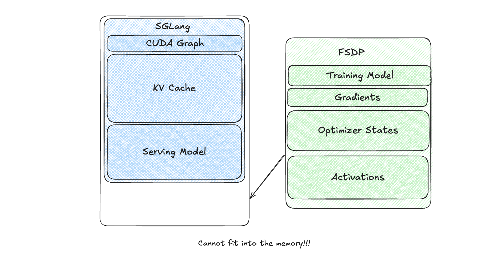
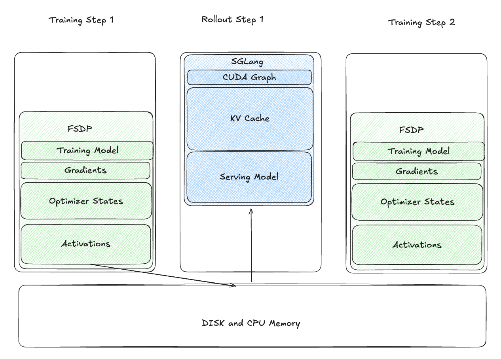
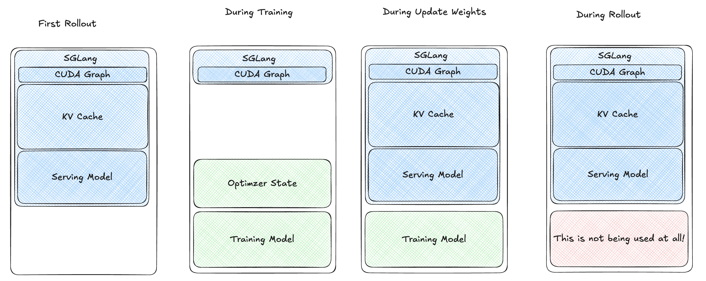
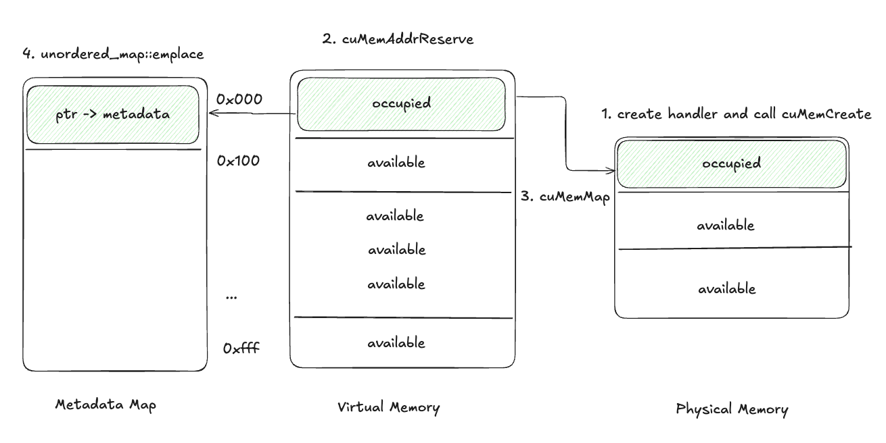
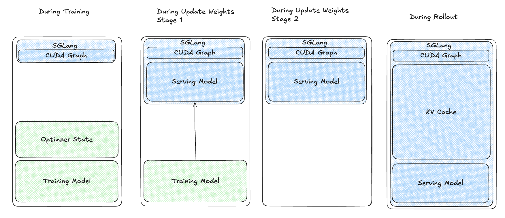
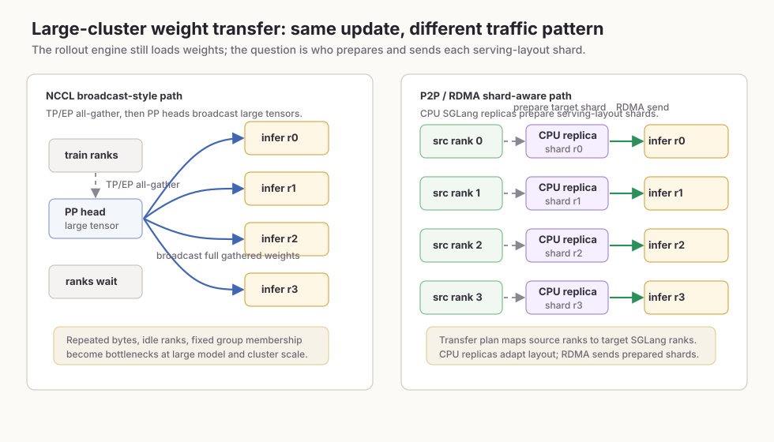
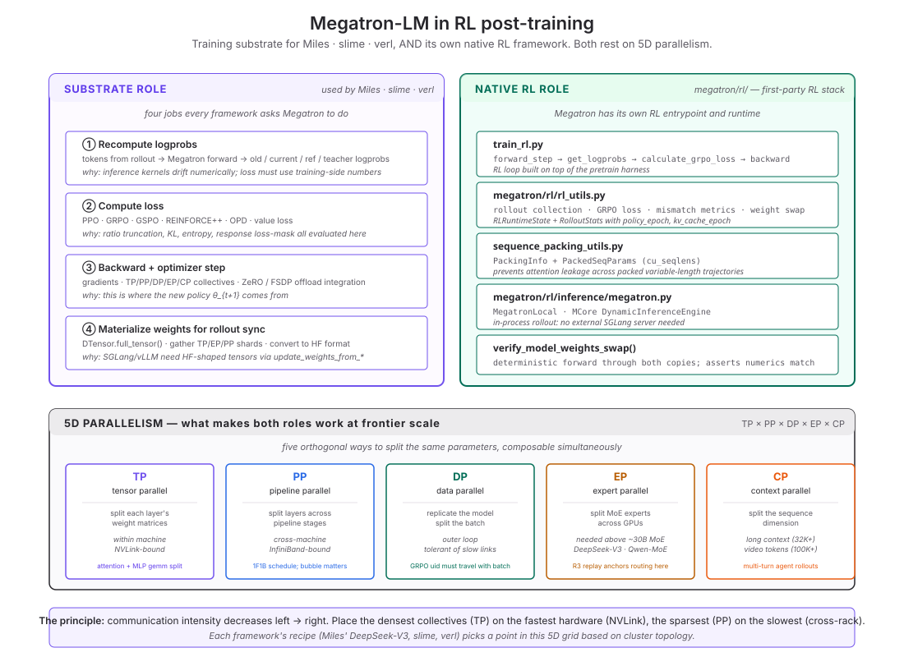
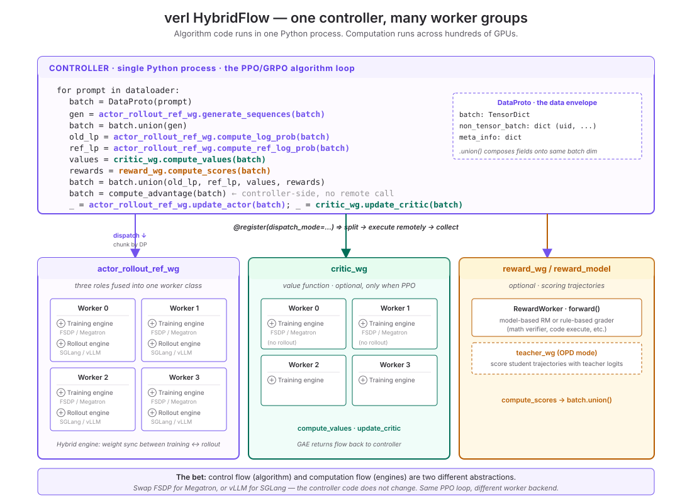
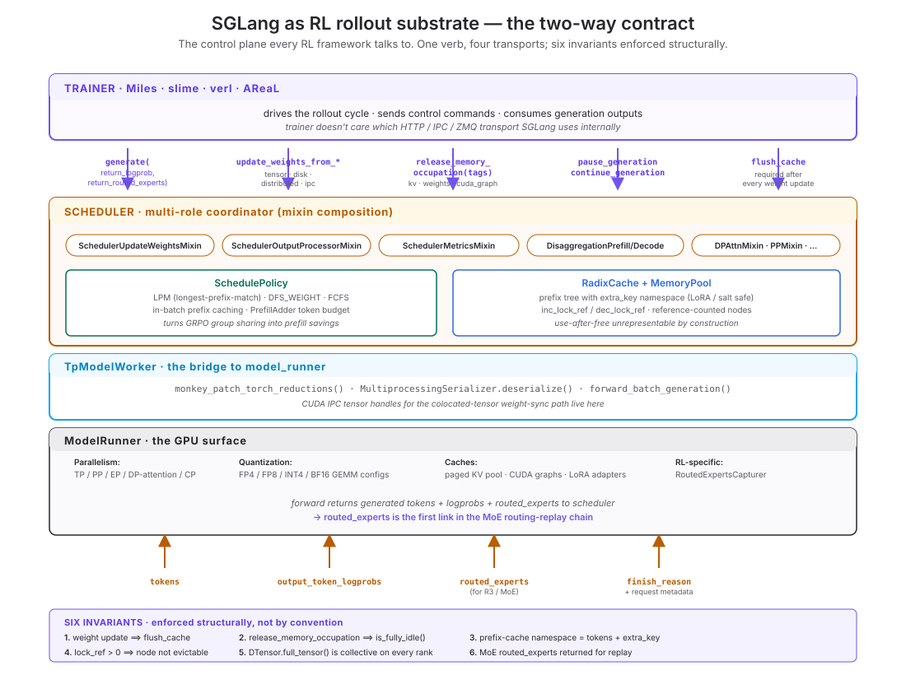

RL Infrastructure for the Mathematically Inclined
A field survey of reinforcement-learning post-training systems — six engineering primitives, three kernel-level DSLs, the training backbone, the quantization problem, seven production case studies (multi-turn agentic · slime · Miles · verl · DeepSeek V4 · SGLang internals · vLLM block-paging), six recurring design patterns, a researcher's checklist, a 19-repo reading plan, and open questions at the systems–theory boundary. Written for mathematicians and RL theorists who want to read the source code of verl, SGLang, vLLM, Megatron-LM, Triton and recognize what's mathematically interesting about the engineering choices.
Preface: what this survey is for
This survey is written for theorists, mathematicians, and algorithm researchers who want to understand modern RL post-training infrastructure without becoming infrastructure engineers overnight. The goal is not to teach every production detail of Ray, Megatron, SGLang, vLLM, CUDA kernels, or checkpoint formats. The goal is to give you the concepts you need while you read: enough systems literacy to recognize when an engineering choice changes the statistical object being optimized.
A useful way to read the field is to separate the surface from the underneath. The surface is what a theorist usually sees: things such as the algorithm design, the loss, the reward model, the KL term, the group size, the benchmark curve, and the running speed. The underneath is the machinery that produced those objects, such as rollout engines, weight updates, prefix caches, sequence packing, placement, log-prob recomputation, and scheduler decisions.
This survey is not about all of the underneath. The boundary is relevance to the surface. If an infrastructure detail can change something like the reported reward curve, the interpretation of the loss, the comparison between two algorithms, or the reproducibility of a result, we will uncover it carefully. If a detail mainly explains operational work, such as how a cluster is deployed, how logs are routed, how containers are built, or how files are arranged on disk, we will usually skip it or summarize it in one sentence. The aim is not to descend as far down the stack as possible; the aim is to uncover the machinery that directly shapes the quantities theorists already care about.
This surface-underneath split is the reason infrastructure cannot be treated as neutral implementation detail. A paper may report a clean surface claim — a reward curve, an algorithm comparison, a stability improvement — while the result depends on underneath choices that are not obvious from the theorem statement or the main experiment table. For example, "we use GRPO with group size 8" names the algorithmic surface, but it may hide rollout, filtering, caching, and log-prob recomputation decisions. "Training is done on a 128-H100 cluster" names the scale, but it may hide placement, parallelism, and weight-sync choices.
A large number of RL conclusions derived from papers are based on RL infrastructure that may be extremely flawed. — paraphrasing Chenyang Zhao, whose Awesome-ML-SYS-Tutorial is the most-cited source in this survey
The intended outcome is modest but useful: after reading, you should be able to open a framework like verl, slime, Miles, or SGLang and ask better questions. Where is the old policy defined? Which engine produced these logprobs? When are weights synced? What cache state survived the update? Which samples are off-policy, and how is that measured? Those questions are the bridge from theory to infrastructure.
How to read this survey
As a theorist, my own way into this material is to treat it as a map rather than a manual. I do not try to memorize every API or file path up front. I first look for the minimal RL infrastructure loop: where samples are generated, where rewards and logprobs are attached, where the loss is computed, and when the policy used for generation stops matching the policy being optimized. From there, the central tension becomes easier to see: learning wants fresh data from the current policy, while efficient systems cache, batch, reuse work, and run pieces asynchronously. With that map in mind, the rest of the survey can be read selectively: the short path is the loop, the central tension, and the six engineering primitives; the longer path is the full framework landscape and the code links.
To make the survey easier to use, we can borrow a small idea from software engineering: a user story. Before building a feature, engineers often ask what kind of user they are building for, what that user wants to do, and what goal it helps them achieve. Here, the same idea helps describe what different readers should expect to get from the survey.
User story: cost and scale
As a researcher trying to understand the computational cost of RL post-training, I want to know where the system spends time, memory, and network bandwidth, so that scale becomes part of the algorithmic picture rather than a separate engineering footnote. This makes details such as colocation, prefix caching, weight transfer, and partial rollout worth studying: each one changes what can be run, compared, or reproduced.
User story: statistical interpretation
As a theorist reading an empirical RL result, I want to track which policy generated the data and which policy appears in the loss, so that I can tell when the implementation still matches the mathematical object the algorithm is supposed to optimize. Rollout may happen on SGLang while training happens on Megatron. The "old logprobs" in the loss may be recomputed, reused, corrected, or approximated. Async rollout may generate samples with stale weights. Read this way and each systems detail becomes a condition under which an RL estimator is interpretable.
User story: changing the system without changing its meaning
As a software engineer modifying an RL infrastructure codebase, I want to know whether my change only moves data around or also changes what training means. The practical questions are simple: what fields must a rollout sample contain? When weights are updated, which caches must be cleared? Which masks decide what tokens enter the loss? Which version of the policy produced this batch? Read this way, schemas and APIs are not just plumbing; they are where the system records the assumptions other components rely on.
The skeleton: a five-stage cycle on three pillars
The simplest useful map is a loop, not a full architecture diagram. One RL update usually needs five conceptual actions: generate samples, score them, decide which tokens or samples matter, train the policy, and make the rollout engine use the new policy. This is a map, not a law. Real systems overlap stages, combine stages, skip explicit filtering, or run the next rollout before the current training step has finished. Still, the map is useful because every codebase has to answer the same questions: where did this data come from, what metadata was attached to it, what loss consumed it, and when did the inference engine receive the updated weights?

Before reading the code names below, it helps to know what each file represents. In Miles train.py, you are looking at the top-level driver loop: the file that says when rollout happens, when training happens, and when weights are updated. In verl protocol.py, you are looking at the data envelope that carries tensors, non-tensor metadata, and metrics between workers. In Miles Sample and slime Sample, you are looking at the schema of one rollout example. In SGLang EngineBase, you are looking at the control API of the inference engine: generate, flush cache, and update weights.
Stage 1: generate samples
For Stage 1, I will use one example and follow it carefully: Miles train.py. This file is the top-level driver. It does not define the model architecture, the reward function, or the loss. Its job is to decide when distributed components run. The relevant loop says exactly three things: ask the rollout side to generate data, train on the returned data, then update the rollout weights.
# Miles: train.py
for rollout_id in range(args.start_rollout_id, args.num_rollout):
rollout_data_ref = await rollout_manager.generate.remote(rollout_id)
if args.use_critic:
critic_task = await eager_create_task(
critic_model.train(rollout_id, rollout_data_ref)
)
if rollout_id >= args.num_critic_only_steps:
await actor_model.train(rollout_id, rollout_data_ref)
await critic_task
else:
await actor_model.train(rollout_id, rollout_data_ref)
await actor_model.update_weights()There are two direct observations from this snippet. First, rollout_manager.generate.remote(...) runs before actor_model.train(...), so the training step consumes data produced by rollout. Second, actor_model.update_weights() runs after training, so the rollout side must be refreshed before the next generated batch is truly from the updated policy. This is the minimal generate-train-sync loop in code.
Now we need to ask what rollout_manager is. It is not a local Python helper. Miles creates it as a Ray actor in miles/ray/placement_group.py.
A minimal Ray primer. Ray is a Python framework for running work across many processes and machines. A Ray actor is a stateful worker process: it can hold its own fields, own resources, and receive method calls from the driver. A call like rollout_manager.generate.remote(...) is therefore not a normal Python call. It submits a method call to the actor and immediately gives the driver an object reference, a handle to a result that may still be computing elsewhere. Later, the program can wait for or pass around that reference. For this section, the key point is simple: when you see .remote(), the work is being sent to another Ray worker instead of being executed as an ordinary local Python function.
# Miles: miles/ray/placement_group.py
def create_rollout_manager(args, pg):
rollout_manager = RolloutManager.options(
num_cpus=1,
num_gpus=0,
**(compute_ray_pin_head_options() if args.pin_rollout_manager_to_head else {})
).remote(args, pg)
if args.offload_rollout:
ray.get(rollout_manager.offload.remote())
return rollout_manager, num_rollout_per_epochThis code proves that rollout_manager.generate.remote(...) is a remote call to a Ray actor. The .remote(...) boundary moves rollout coordination out of the local training driver process. Ray schedules the RolloutManager actor, and that actor then coordinates rollout-side engines and resources. The exact lifetime of Ray object references is not the point here; the point is that the driver is coordinating remote work rather than executing generation locally. In other words, generate is already a distributed-systems operation, not just a decoding function.
Inside that actor, RolloutManager.generate is the Stage 1 entry point:
# Miles: miles/ray/rollout.py
def generate(self, rollout_id):
start_time = time.time()
self.rollout_id = rollout_id
self.health_monitoring_resume()
data, metrics = self._get_rollout_data(rollout_id=rollout_id)
self._save_debug_rollout_data(data, rollout_id=rollout_id, evaluation=False)
_log_rollout_data(rollout_id, self.args, data, metrics, time.time() - start_time)
data = self._convert_samples_to_train_data(data)
return self._split_train_data_by_dp(data, self.train_parallel_config["dp_size"])This code directly supports a more precise claim: in Miles, "generate samples" means more than decoding. _get_rollout_data obtains samples; _save_debug_rollout_data and _log_rollout_data record what happened; _convert_samples_to_train_data turns samples into trainer input; _split_train_data_by_dp partitions the batch for data-parallel training. If any of these steps changes, the object consumed by the loss may change too.
The helper _get_rollout_data shows where generated samples enter the system:
# Miles: miles/ray/rollout.py
def _get_rollout_data(self, rollout_id):
if self.use_experimental_refactor:
data = call_rollout_function(
self.generate_rollout, RolloutFnTrainInput(rollout_id=rollout_id)
)
else:
data = call_rollout_fn(
self.generate_rollout,
self.args,
rollout_id,
self.data_source,
evaluation=False,
)
metrics = data.metrics
data = data.samples
while isinstance(data[0], list):
data = list(itertools.chain.from_iterable(data))
if not self.args.disable_rollout_trim_samples:
global_batch_size = self.args.global_batch_size
if len(data) % global_batch_size != 0:
trim_len = (len(data) // global_batch_size) * global_batch_size
data = data[:trim_len]This snippet supports two concrete claims. The returned object is expected to have metrics and samples, so rollout is already a structured interface. Also, if the rollout function returns grouped samples, Miles flattens them; if the number of samples is incompatible with the global batch size, Miles trims them. So "which samples were generated" and "which samples reach training" are not identical questions.
The source code also tells us what a generated sample is. In Miles, the relevant definition is the Sample dataclass:
# Miles: miles/utils/types.py
@dataclass
class Sample:
"""The sample generated"""
group_index: int | None = None
index: int | None = None
# prompt
prompt: str | list[dict[str, str]] = ""
tokens: list[int] = field(default_factory=list)
multimodal_inputs: dict[str, Any] = None
multimodal_train_inputs: dict[str, Any] = None
# response
response: str = ""
response_length: int = 0
label: str | None = None
reward: float | dict[str, Any] | None = None
loss_mask: list[int] | None = None
weight_versions: list[str] = field(default_factory=list)
rollout_log_probs: list[float] | None = None
rollout_routed_experts: numpy.ndarray | None = None
remove_sample: bool = FalseFor a theorist, the important point is not the field list itself, but the statistical meaning carried by the fields. tokens and response_length define the trajectory segment that training will see. reward attaches a scalar or structured learning signal to that trajectory. loss_mask decides which response tokens contribute to the policy loss. When populated, weight_versions records which policy version produced the sample, which matters when rollout and training are not perfectly synchronized. rollout_log_probs supports off-policy correction or consistency checks; rollout_routed_experts supports MoE routing replay. So Stage 1 is already fixing part of the empirical object that the later loss will optimize.
So far, the code has shown that generation is remote from the training driver: train.py sends a request to RolloutManager, and RolloutManager.generate turns generated samples into train data. One question remains: what is actually doing the inference on the rollout side? In Miles, the answer is not "another local Python function." In the normal internal-engine path, the rollout side starts SGLang inference servers. The chain begins in start_rollout_servers, which creates ServerGroup objects and starts their engines:
# Miles: miles/ray/rollout.py
# excerpt from start_rollout_servers
def start_rollout_servers(args, pg):
config = _resolve_sglang_config(args)
servers = {}
for model_cfg in config.models:
router_ip, router_port = _start_router(args, has_pd_disaggregation=has_pd)
server_groups = []
all_init_handles = []
for group_cfg in model_cfg.server_groups:
group = ServerGroup(
args=args,
pg=pg,
num_gpus_per_engine=group_cfg.num_gpus_per_engine,
worker_type=group_cfg.worker_type,
router_ip=router_ip,
router_port=router_port,
)
handles, port_cursors = group.start_engines(port_cursors)
all_init_handles.extend(handles)
server_groups.append(group)
if all_init_handles:
ray.get(all_init_handles)
servers[model_cfg.name] = RolloutServer(
server_groups=server_groups,
router_ip=router_ip,
router_port=router_port,
model_name=model_cfg.name,
update_weights=model_cfg.update_weights,
)Only two lines matter for the argument. _resolve_sglang_config(args) constructs the SGLang rollout configuration, either from a config file or from command-line arguments. group.start_engines(...) is the step that actually starts the engines for each server group. The other lines mostly package those engines into routers and bookkeeping objects. The missing piece is what group.start_engines starts. In the same file, ServerGroup.start_engines creates Ray actors whose class is SGLangEngine:
# Miles: miles/ray/rollout.py
# excerpt from ServerGroup.start_engines
def start_engines(self, port_cursors=None):
RolloutRayActor = ray.remote(SGLangEngine)
rollout_engine = RolloutRayActor.options(
num_cpus=num_cpus,
num_gpus=num_gpus,
scheduling_strategy=scheduling_strategy,
runtime_env={"env_vars": env_vars},
).remote(
self.args,
rank=global_rank,
worker_type=self.worker_type,
base_gpu_id=base_gpu_id,
sglang_overrides=self.sglang_overrides,
num_gpus_per_engine=self.num_gpus_per_engine,
)
init_handles = [
engine.init.remote(**(addr_and_ports[rank]))
for rank, engine in rollout_engines
]And SGLangEngine._init_normal launches an SGLang HTTP server process:
# Miles: miles/backends/sglang_utils/sglang_engine.py
def _init_normal(self, server_args_dict):
logger.info(f"Launch HttpServerEngineAdapter at: {self.server_host}:{self.server_port}")
self.process = launch_server_process(ServerArgs(**server_args_dict))Now the full Stage 1 claim is visible from code. Miles does not call a local model to get a string. The training driver calls a remote rollout manager; the rollout manager runs a rollout function, collects Sample objects, reshapes them into train data, partitions them for data parallelism, and, in the internal-engine path, uses SGLang engines underneath to do inference. That is why generation is the first infrastructure boundary in the RL loop.
This Miles example gives us a pattern to recognize elsewhere: generation is a boundary between the training controller and a rollout/inference subsystem. Different frameworks draw that boundary with different abstractions. In verl, the boundary is less visible from one short driver loop because the control flow is wrapped in Ray worker groups, and the data moving across roles is packaged as DataProto. The underlying question is the same: which worker generated the responses, what metadata traveled with them, and how were they returned to the trainer? SGLang and vLLM sit one level lower. They usually do not define the RL algorithm or the reward pipeline; they provide the fast inference engine that an RL framework calls when it needs samples. Miles is a good first example because all three layers are easy to separate: the training driver asks for rollout, the rollout manager owns the inference engines, and the generated samples are converted into training data before the loss sees them.
Stage 2: score the outputs
After generation, many RL training pipelines need to attach a training signal to the generated responses. Sometimes that signal comes from a learned reward model, sometimes from a hand-written scoring function in Python, sometimes from a verifier, and sometimes from an external service. This section is not about which reward is philosophically or statistically best. It is about a more infrastructural question: once a score exists, where is it stored, and how does the trainer know which response, mask, prompt, and metadata that score belongs to?
We use verl's PPO trainer as the main example because PPO-style RLHF training uses reward scores as part of the training signal, and verl shows the relevant plumbing in one trainer loop. We can see the generated answers put back into the batch, the batch sent to the reward code, and the returned reward scores put back into that same batch.
Small primer: what verl means by DataProto
verl moves training data around in a container called DataProto. For this section, the important point is simple: tensor fields such as prompts, responses, masks, and reward scores live in batch; non-tensor per-example fields such as data source, reward-model hints, and example ids live in non_tensor_batch; global bookkeeping lives in meta_info. So when reward is added to a DataProto, it is being added to the same structured object that later training code will consume.
# verl: verl/protocol.py
class DataProto:
"""
A DataProto is a data structure that aims to provide a standard protocol for data exchange between functions.
"""
batch: TensorDict = None
non_tensor_batch: dict = field(default_factory=dict)
meta_info: dict = field(default_factory=dict)The first scoring-related detail appears even before generation. In verl's PPO trainer, _get_gen_batch creates the batch that will be sent to rollout. It removes non-tensor fields that generation does not need, but it deliberately preserves the fields that reward computation may need later:
# verl: verl/trainer/ppo/ray_trainer.py
def _get_gen_batch(self, batch: DataProto) -> DataProto:
reward_keys = set({"data_source", "reward_model", "extra_info", "uid"}) & batch.non_tensor_batch.keys()
batch_keys_to_pop = []
non_tensor_batch_keys_to_pop = set(batch.non_tensor_batch.keys()) - reward_keys
gen_batch = batch.pop(
batch_keys=batch_keys_to_pop,
non_tensor_batch_keys=list(non_tensor_batch_keys_to_pop),
)
# For agent loop, we need reward model keys to compute score.
gen_batch.non_tensor_batch.update(batch.non_tensor_batch)
return gen_batchThis is a useful place to slow down. Fields such as data_source, reward_model, extra_info, and uid are not model inputs in the usual mathematical sense. They are infrastructure metadata. They can tell the reward side which dataset an example came from, which scoring rule or reward model to use, what auxiliary information is needed for verification, and which generated responses came from the same original prompt. Without these fields, the system might still generate text, but it may not have enough context to score that text correctly.
After rollout returns, the generated output is not handled as a separate loose object. The trainer repeats the original batch to match the number of sampled responses, joins the generated fields back into it, computes a response mask if needed, and only then runs reward. The snippet below follows the ordinary sampled-rollout path; REMAX adds a greedy baseline branch, but the same merge-and-score pattern is still present.
# verl: verl/trainer/ppo/ray_trainer.py
gen_batch = self._get_gen_batch(batch)
rollout_n = self.config.actor_rollout_ref.rollout.n
gen_batch_output = gen_batch.repeat(repeat_times=rollout_n, interleave=True)
combined_gen_batch = gen_batch_output
num_sampled_prompts = len(gen_batch_output)
with marked_timer("gen", timing_raw, color="red"):
combined_gen_output = self.async_rollout_manager.generate_sequences(combined_gen_batch)
gen_batch_output = combined_gen_output.slice(0, num_sampled_prompts)
# repeat to align with repeated responses in rollout
batch = batch.repeat(repeat_times=self.config.actor_rollout_ref.rollout.n, interleave=True)
batch = batch.union(gen_batch_output)
if "response_mask" not in batch.batch.keys():
batch.batch["response_mask"] = compute_response_mask(batch)
with marked_timer("reward", timing_raw, color="yellow"):
# compute reward model score
if self.use_rm and "rm_scores" not in batch.batch.keys():
batch_reward = self._compute_reward_colocate(batch)
batch = batch.union(batch_reward)
reward_tensor, reward_extra_infos_dict = extract_reward(batch)This code is the central Stage 2 example, so it is worth reading it slowly. generate_sequences returns the rollout result, including generated responses and rollout-side fields. Then batch.repeat(...) expands the original prompt batch so that it has one row for each sampled response. This matters when rollout_n > 1: one prompt may produce several answers, and the trainer needs each answer to sit next to the prompt, id, and metadata it came from. After that, batch.union(gen_batch_output) adds the generated response fields into the repeated batch.
At this point, the object being scored is no longer just a list of generated strings. After repeat and union(gen_batch_output), each row of the batch represents one prompt-response pair, together with the mask, id, and metadata needed to interpret it. If the batch does not yet contain reward-model scores ("rm_scores" not in batch.batch.keys()), the PPO trainer sends the whole batch to the reward side. The returned object is merged back into the same rows (batch.union(batch_reward)). So the reward score is stored next to the exact response it scores, and the later loss code can read the response tokens, response mask, and reward score as aligned fields of one batch.
The word union can be misleading if read mathematically. In verl, DataProto.union is a controlled field merge across the tensor, non-tensor, and meta-information parts of the object:
# verl: verl/protocol.py
def union(self, other: "DataProto") -> "DataProto":
self.batch = union_tensor_dict(self.batch, other.batch)
self.non_tensor_batch = union_numpy_dict(self.non_tensor_batch, other.non_tensor_batch)
self.meta_info = union_two_dict(self.meta_info, other.meta_info)
return selfNow we can inspect what the reward computation itself returns. The trainer does not compute reward inline; it delegates to a RewardLoopManager:
# verl: verl/trainer/ppo/ray_trainer.py
def _compute_reward_colocate(self, batch: DataProto) -> tuple[torch.Tensor, dict[str, Any]] | torch.Tensor:
assert self.reward_loop_manager is not None, "RewardLoopManager is None"
batch_reward = self.reward_loop_manager.compute_rm_score(batch)
return batch_rewardInside RewardLoopManager.compute_rm_score, verl chunks the batch across reward workers, makes remote score calls, collects scalar reward scores, assembles them into an rm_scores tensor, and returns a new DataProto containing that tensor. This is the reward-side counterpart of the earlier batch merge:
# verl: verl/experimental/reward_loop/reward_loop.py
def compute_rm_score(self, data: DataProto) -> DataProto:
chunks = data.chunk(len(self.reward_loop_workers))
outputs = ray.get(
[
worker.compute_score_batch.remote(chunk)
for worker, chunk in zip(self.reward_loop_workers, chunks, strict=True)
]
)
outputs_flat = [item for sublist in outputs for item in sublist]
scores = [item["reward_score"] for item in outputs_flat]
rm_scores = self.reward_manager_cls.assemble_rm_scores(data, scores)
batch = TensorDict({"rm_scores": rm_scores}, batch_size=len(data))
reward_extra_infos = [output.get("reward_extra_info", {}) for output in outputs_flat]
reward_extra_keys = list(reward_extra_infos[0].keys())
non_tensor_batch = {}
for key in reward_extra_keys:
non_tensor_batch[key] = np.array([info[key] for info in reward_extra_infos])
return DataProto(batch=batch, non_tensor_batch=non_tensor_batch, meta_info={"reward_extra_keys": reward_extra_keys})The next detail explains why rm_scores is a tensor rather than a plain Python list. At this point, scores is one scalar reward per generated answer. But data.batch["responses"] is a token matrix: one row per generated answer, one column per response-token position. The default reward manager converts the scalar list into an rm_scores tensor with the same shape as responses. Most positions are zero; each scalar reward is written at the last valid token position of its own response:
# verl: verl/experimental/reward_loop/reward_manager/base.py
@classmethod
def assemble_rm_scores(cls, data: DataProto, scores: list[float]) -> torch.Tensor:
prompt_length = data.batch["prompts"].size(1)
valid_response_length = data.batch["attention_mask"][:, prompt_length:].sum(dim=1)
rm_scores = torch.zeros_like(data.batch["responses"], dtype=torch.float32)
rm_scores[torch.arange(rm_scores.size(0), device=rm_scores.device), valid_response_length - 1] = (
rm_scores.new_tensor(scores)
)
return rm_scoresThis does not mean verl has changed the task reward into a dense per-token reward. In this default path, the score still starts as one scalar per generated answer. The token-shaped rm_scores tensor is the storage format that lets later token-level training code keep that scalar aligned with the response it belongs to.
Finally, extract_reward shows what the trainer reads after scoring is complete:
# verl: verl/trainer/ppo/reward.py
def extract_reward(batch: DataProto):
reward_tensor = batch.batch["rm_scores"]
reward_extra_keys = batch.meta_info.get("reward_extra_keys", [])
reward_extra_infos_dict = {key: batch.non_tensor_batch[key] for key in reward_extra_keys}
return reward_tensor, reward_extra_infos_dictThis is the point where the reward field becomes an explicit input to the rest of training. reward_tensor is the tensor the trainer will use as the reward signal. reward_extra_infos_dict is different: it collects optional extra fields returned by the reward side, such as diagnostic information, sub-scores, or metadata for logging and analysis. The main reward used for optimization and the auxiliary information used to understand the scoring process travel together, but they are read as different objects.
Other codebases draw the boundary differently. verl makes reward visible as a field inside a batch object. Miles and slime first make it visible inside each generated Sample. A Sample is not only the text response; it is the small record that keeps the response, reward, mask, rollout logprobs, and related metadata together before training data is assembled:
# slime: slime/utils/types.py
@dataclass
class Sample:
group_index: int | None = None
index: int | None = None
prompt: str | list[dict[str, str]] = ""
tokens: list[int] = field(default_factory=list)
response: str = ""
response_length: int = 0
label: str | None = None
reward: float | dict[str, Any] | None = None
loss_mask: list[int] | None = None
weight_versions: list[str] = field(default_factory=list)
rollout_log_probs: list[float] | None = None
rollout_routed_experts: list[list[int]] | None = None
remove_sample: bool = False
teacher_log_probs: list[float] | None = NoneMiles has nearly the same sample-level shape. The type of rollout_routed_experts differs, but the important fields are again the response tokens, reward, mask, rollout logprobs, and rollout-side metadata:
# Miles: miles/utils/types.py
@dataclass
class Sample:
prompt: str | list[dict[str, str]] = ""
tokens: list[int] = field(default_factory=list)
response: str = ""
response_length: int = 0
label: str | None = None
reward: float | dict[str, Any] | None = None
loss_mask: list[int] | None = None
weight_versions: list[str] = field(default_factory=list)
rollout_log_probs: list[float] | None = None
rollout_routed_experts: numpy.ndarray | None = None
remove_sample: bool = Falseslime then makes the next conversion step explicit. Its rollout manager takes a list of Sample objects, post-processes their rewards, and builds the dictionary that the training side will consume. This is the sample-level version of the same alignment work we saw in verl:
# slime: slime/ray/rollout.py
def _convert_samples_to_train_data(self, samples: list[Sample] | list[list[Sample]]):
raw_rewards, rewards = self._post_process_rewards(samples)
train_data = {
"tokens": [sample.tokens for sample in samples],
"response_lengths": [sample.response_length for sample in samples],
"rewards": rewards,
"raw_reward": raw_rewards,
"truncated": [1 if sample.status == Sample.Status.TRUNCATED else 0 for sample in samples],
"sample_indices": [sample.index for sample in samples],
}
loss_masks = []
for sample in samples:
if sample.loss_mask is None:
sample.loss_mask = [1] * sample.response_length
assert len(sample.loss_mask) == sample.response_length
if sample.remove_sample:
sample.loss_mask = [0] * sample.response_length
loss_masks.append(sample.loss_mask)
train_data["loss_masks"] = loss_masks
if samples[0].rollout_log_probs is not None:
train_data["rollout_log_probs"] = [sample.rollout_log_probs for sample in samples]
if samples[0].rollout_routed_experts is not None:
train_data["rollout_routed_experts"] = [sample.rollout_routed_experts for sample in samples]
return train_dataThe comparison gives us a clean reading rule. In verl, the batch object is the main contract: generation adds response fields, reward adds rm_scores, and later training reads from the same DataProto. In slime and Miles, the sample object is the first contract: each Sample carries its own reward and alignment fields, and slime's _convert_samples_to_train_data shows how those per-sample fields become training arrays such as tokens, rewards, loss_masks, and rollout_log_probs. The shared principle is not that every framework uses the same container. The shared principle is that reward only becomes useful for training after it is kept aligned with the response tokens and the fields that say how those tokens should be interpreted.
Stage 3: filter, mask, or select what counts
The word "filter" should be read broadly. Sometimes a framework really deletes samples. More often, it keeps the row and changes which tokens are allowed to count. A tool observation may be kept as context but excluded from the policy loss, or an invalid response may remain in the batch with a zero mask. This stage is where "the model generated text" becomes a more precise training object: generated tokens plus a rule for which response-side positions may affect the update.
We use Miles as the main example because the mask is visible before the tensorized training step. It appears on the generated Sample, is converted into train_data["loss_masks"], and later becomes a full training-tensor mask in Stage 4. That gives us a readable path from "this response token should count" to the response-side mask that the trainer will consume.
The first invariant is local to one generated sample. In Miles' Sample validation logic, the loss mask and rollout logprobs must have the same length as the response. This check protects a simple alignment assumption: every response-token position can be matched with a mask value and, when available, the rollout logprob produced by the rollout policy.
# Miles: miles/utils/types.py
@property
def effective_response_length(self):
return sum(self.loss_mask) if self.loss_mask is not None else self.response_length
def validate(self):
assert self.response_length >= 0
assert len(self.tokens) >= self.response_length
if self.loss_mask is not None:
assert (
len(self.loss_mask) == self.response_length
), f"loss_mask length ({len(self.loss_mask)}) != response_length ({self.response_length})"
if self.rollout_log_probs is not None:
assert (
len(self.rollout_log_probs) == self.response_length
), f"rollout_log_probs length ({len(self.rollout_log_probs)}) != response_length ({self.response_length})"This code gives loss_mask a precise meaning. It is not a yes/no annotation on the whole sample; it is a per-response-token vector. If the response has 300 token positions, the mask must have 300 entries. The property effective_response_length shows the consequence: a response may have a long decoded length, but only the masked-in positions count as effective training tokens.
The next step happens when rollout samples are converted into train data. In _convert_samples_to_train_data, Miles expresses exclusion through the mask. If a sample has no mask, it creates the default all-one response mask. If a sample is marked remove_sample, it keeps the sample in the data structure but sets all response-token mask entries to zero:
# Miles: miles/ray/rollout.py
train_data = {
"rewards": rewards,
"raw_reward": raw_rewards,
"truncated": [1 if sample.status == Sample.Status.TRUNCATED else 0 for sample in samples],
"sample_indices": [sample.index for sample in samples],
}
loss_masks = []
for sample in samples:
if sample.loss_mask is None:
sample.loss_mask = [1] * sample.response_length
assert (
len(sample.loss_mask) == sample.response_length
), f"loss mask length {len(sample.loss_mask)} != response length {sample.response_length}"
if sample.remove_sample:
sample.loss_mask = [0] * sample.response_length
loss_masks.append(sample.loss_mask)
train_data["loss_masks"] = loss_masksThis is why "filter" is not always literal deletion. Here remove_sample means "keep the row, but make its response tokens invisible to the loss." The row can still carry bookkeeping fields such as reward, truncation status, and sample index, while the response-token mask becomes all zeros. That preserves batch alignment while preventing the response from contributing policy-gradient tokens.
The examples above are easiest to read as single-turn: one prompt in, one response out, and the whole response is the model's own output. Multi-turn setups are more delicate. A trajectory may go back and forth over several rounds, often with tool calls in between, and the whole conversation may be stored as one training sample. The model must condition on the whole trajectory, but only the assistant's own generated tokens are policy actions:
| Turn | Example content | In the loss? |
|---|---|---|
| system | "You are an assistant with a calculator." | no — context |
| user | "What is 23 × 47?" | no — context |
| assistant | "Let me compute. multiply(23, 47)" | yes — model's output |
| tool | "1081" | no — context |
| assistant | "The answer is 1081." | yes — model's output |
The table leaves out one implementation detail: chat templates add fixed assistant-template tokens around each turn, and those tokens also need mask values. Miles' gen_multi_turn_loss_mask_qwen handles this by building one token sequence and one loss mask together. The sequence contains the transcript; the mask marks the trainable assistant-action positions inside it:
# Miles: miles/utils/mask_utils.py
def gen_multi_turn_loss_mask_qwen(self, messages: list[dict], tools: list[dict] = None):
all_loss_masks = []
all_token_ids = []
for i, message in enumerate(messages):
if i == 0:
message_ids = self.tokenizer.apply_chat_template(
[message], tokenize=True, return_dict=False, tools=tools
)
else:
message_ids = self.tokenizer.apply_chat_template([message], tokenize=True, return_dict=False)
if message["role"] != "system" and i > 0:
message_ids = message_ids[self.system_message_length :]
if message["role"] == "assistant":
loss_mask = [0] * self.gen_token_length + [1] * (len(message_ids) - self.gen_token_length)
else:
loss_mask = [0] * len(message_ids)
if message.get("step_loss_mask", 1) != 1:
loss_mask = [0] * len(message_ids)
all_loss_masks.extend(loss_mask)
all_token_ids.extend(message_ids)
return all_token_ids, all_loss_masksThe code treats assistant turns and non-assistant turns differently because they play different roles in RL. System, user, and tool messages are context: the model must read them, but they are not actions sampled from the current policy, so the else branch assigns [0] * len(message_ids). Assistant messages are possible policy actions, but the chat template also inserts fixed generation-prompt/template tokens at the beginning of an assistant segment. Those fixed tokens are masked by [0] * self.gen_token_length, while the remaining generated assistant content is marked by the trailing ones in [1] * (len(message_ids) - self.gen_token_length). Finally, step_loss_mask is an override: a whole turn can remain in the transcript but contribute zero trainable tokens. This is the same zero-mask idea as remove_sample, but applied at turn level rather than sample level.
The first-message branch and the self.system_message_length slice are bookkeeping around chat-template formatting. The first message is encoded with tools=tools when tool definitions are available; later non-system messages remove a repeated system/template prefix with message_ids[self.system_message_length:]. The exact tokenizer convention is less important than the invariant: tokens and masks are edited together. Every time the function appends tokens with all_token_ids.extend(message_ids), it appends a mask segment of the same length with all_loss_masks.extend(loss_mask). The return value is therefore a pair of aligned lists: the transcript and the positions the loss may touch.
There is one more shape adjustment before this data can become a Sample. The mask built above is as long as the whole transcript: it has entries for system tokens, user tokens, tool tokens, assistant template tokens, and assistant-generated tokens. But the Sample invariant above requires Sample.loss_mask to be only as long as Sample.response_length. Miles therefore converts the full-transcript mask into a response-side mask.
The rule is simple once stated: find the first 1 in the full mask, treat everything from there to the end as the response side, and keep only that tail. The tail can still contain zeros, for example if a later tool observation is kept as context but not trained on. This is what get_response_lengths computes, and multi-turn sample finalization applies the same tail slice to both loss_mask and rollout_log_probs:
# Miles: full-transcript mask -> response-length mask
sample.loss_mask = retrieve_output["loss_mask"]
sample.response_length = get_response_lengths([sample.loss_mask])[0]
sample.loss_mask = sample.loss_mask[-sample.response_length :]
sample.rollout_log_probs = retrieve_output["rollout_logp"][-sample.response_length :]After this slice, the multi-turn mask obeys the same len(loss_mask) == response_length rule as the single-turn case. Stage 3 has now decided which response-side token positions count. Stage 4 will show how that response-level decision is expanded into the tensor layout used by the loss.
Other frameworks make the same decision at different points in the data flow. Miles and slime make it sample-level first: each generated Sample can carry a loss_mask, and that mask later becomes part of the training data. verl makes the same idea more batch-level. In the PPO loop from Stage 2, response_mask is computed only after generated responses have been merged back into the DataProto with batch.union(gen_batch_output). That timing matters because compute_response_mask needs the response tensor to know how many final positions of the attention mask belong to the response. After the mask is added, the same DataProto row carries prompt, response, reward, uid, metadata, and response mask together. AReaL and RLinf expose similar fields under names such as loss_mask or response_mask in their training batches. The names differ, but the role is the same: the framework must record which token positions are allowed to affect the policy update.
Question. Suppose my algorithm says: randomly drop one data point from the batch. Where should that happen?
Answer. First decide whether "drop" means "do not train on it" or "remove the row from the batch." If the goal is only to prevent policy-gradient tokens from coming from that row, masking is usually the safer implementation: in Miles/slime, set that sample's loss_mask to all zeros or mark remove_sample; in verl, set the corresponding response_mask row to zero before the loss consumes it. The row can still carry metadata, rewards, and ids, but its response tokens do not enter the actor loss.
If the algorithm requires the data point to disappear from group-level statistics, advantage normalization, or reward aggregation, then it is not enough to zero the mask. Delete it as a row from the whole data object. In Miles/slime, remove the same sample from the samples list before converting to train_data. In verl, use a batch-level selection operation, such as batch = batch.select_idxs(keep_indices), so tensors and non_tensor_batch fields such as uid are filtered together. The mistake to avoid is dropping a response tensor while leaving its reward, mask, or id behind; that silently breaks alignment.
Stage 4: train the policy
Training is the part that looks most familiar from the outside: compute logprobs, compute a PPO-like objective, take optimizer steps. The infrastructure detail is that the trainer is not consuming raw text. It consumes the aligned object produced by the earlier stages: tokens, response lengths, rewards, masks, old-policy logprobs, and sometimes reference-policy logprobs or routing metadata. Stage 4 is where those fields become a loss, and where that loss becomes a weight update.
First, keep the Miles example as a bridge from Stage 3. The training side receives response-length masks, but the model trains on full token streams containing prompt and response positions. training_utils/data.py pads each response mask into the full token layout, handles sequence-parallel slicing, and asserts that the resulting mask has exactly the same shape as the token tensor:
# Miles: miles/backends/training_utils/data.py
loss_masks = []
for loss_mask, total_length, response_length in zip(
batch["loss_masks"],
batch["total_lengths"],
batch["response_lengths"],
strict=True,
):
prompt_length = total_length - response_length
loss_mask = F.pad(loss_mask, (prompt_length - 1, 1), value=0)
if allgather_cp:
loss_masks.append(loss_mask)
continue
loss_mask = slice_with_cp(loss_mask, 0, qkv_format, max_seqlen)
loss_masks.append(loss_mask)
if qkv_format == "bshd":
loss_masks = torch.stack(loss_masks)
elif qkv_format == "thd" and allgather_cp:
loss_masks = torch.cat(loss_masks, dim=0)
if pad != 0:
loss_masks = F.pad(loss_masks, (0, pad), value=0)
loss_masks = loss_masks.chunk(cp_size, dim=0)[cp_rank].unsqueeze(0)
elif qkv_format == "thd":
loss_masks = torch.cat(loss_masks)
loss_masks = F.pad(loss_masks, (0, pad), value=0).unsqueeze(0)
assert loss_masks.shape == tokens.shape
batch["full_loss_masks"] = loss_masksThe padding is not cosmetic. The response mask began as a vector over response tokens only, for example one entry per assistant-generated response token. But the training model sees the full next-token-prediction stream: prompt tokens first, then response tokens. The mask therefore has to be moved into the coordinate system of tokens. The left padding prompt_length - 1 inserts zeros for prompt-side prediction positions that should not be trained as response actions. The right padding of 1 accounts for the final shifted position in next-token prediction. After that shift, every position in tokens has a matching mask value. The final assertion, loss_masks.shape == tokens.shape, is the contract: by the time loss is computed, the model cannot have a token position without a corresponding decision about whether it counts.
The next Miles step shows that this mask is not merely stored for logging. It is passed into the Megatron model forward call as the model-side loss_mask:
# Miles: miles/backends/megatron_utils/model.py
batch = get_batch(
data_iterator,
[
"tokens",
"loss_masks",
"multimodal_train_inputs",
"total_lengths",
"response_lengths",
"max_seq_lens",
],
args.data_pad_size_multiplier,
args.qkv_format,
allgather_cp=args.allgather_cp,
)
tokens = batch["tokens"]
packed_seq_params = get_packed_seq_params(batch, args)
output_tensor = model(
input_ids=tokens,
position_ids=None,
attention_mask=None,
labels=None,
packed_seq_params=packed_seq_params,
loss_mask=batch["full_loss_masks"],
**(batch["multimodal_train_inputs"] if batch["multimodal_train_inputs"] is not None else {}),
)This is the training-side version of the Stage 3 story. The mask has moved from a per-sample response vector into a tensor field that the model forward pass can use. The code also shows another systems detail: tokens may be packed for efficient attention, but the mask travels with the same batch and is shaped to match the token layout.
Now let us look at a concrete PPO example from verl. This is slightly different from the Miles example above. Miles makes the training tensor layout visible: response-side masks are padded and passed into the Megatron forward call. verl instead shows the PPO bookkeeping: generated responses, rewards, response masks, old-policy logprobs, and advantages are kept together inside one DataProto flow.
PPO primer. PPO does not update from a reward alone. It compares the current policy to a fixed old-policy anchor for this batch. In the simplest on-policy case, that anchor is the policy that produced the sampled response; in decoupled systems, rollout and the old-policy anchor may be tracked separately. For one token position t, the policy ratio is:
The clipped PPO actor objective then uses this ratio together with an advantage estimate A_t:
Training code usually minimizes the negative of this objective, often with extra terms such as entropy, KL, or a value loss depending on the variant. In LLM RL, the expectation is implemented over response-token positions, so a mask is needed:
The numerator, log pi_theta, is computed by the actor during the current training update. The denominator, log pi_old, is what verl stores as old_log_probs. The mask m_t is verl's response_mask.
The formula names three fields that infrastructure has to line up before the actor loss can run: old-policy logprobs for the denominator, advantages for the update direction, and a response mask for the token positions that count. The next verl snippets prepare the first field. The batch does not contain a copy of an old model; it contains token ids and masks. verl adds a tensor field called old_log_probs, which records how the chosen old-policy anchor scores the already generated response tokens.
verl has two ways to fill that field. The ordinary path recomputes it on the training side. After reward has been extracted, the trainer calls _compute_old_log_prob(batch), uses the existing response_mask to aggregate entropy for logging, removes the temporary entropy field, and merges the returned logprobs back into the same DataProto:
# verl: verl/trainer/ppo/ray_trainer.py
reward_tensor, reward_extra_infos_dict = extract_reward(batch)
rollout_corr_config = self.config.algorithm.get("rollout_correction", None)
bypass_recomputing_logprobs = rollout_corr_config and rollout_corr_config.get("bypass_mode", False)
if bypass_recomputing_logprobs:
apply_bypass_mode(
batch=batch,
rollout_corr_config=rollout_corr_config,
policy_loss_config=self.config.actor_rollout_ref.actor.policy_loss,
)
else:
old_log_prob, old_log_prob_mfu = self._compute_old_log_prob(batch)
entropys = old_log_prob.batch["entropys"]
response_masks = batch.batch["response_mask"]
entropy_agg = agg_loss(
loss_mat=entropys,
loss_mask=response_masks,
loss_agg_mode=actor_config.loss_agg_mode,
loss_scale_factor=actor_config.loss_scale_factor,
)
old_log_prob.batch.pop("entropys")
batch = batch.union(old_log_prob)
assert "old_log_probs" in batch.batchThe helper shows what "recompute old logprobs" means in code. It converts the current DataProto into the worker's tensor format, removes padding for efficient inference, asks the actor worker to compute log probabilities without taking a loss, then converts the result back into a padded DataProto field named old_log_probs:
# verl: verl/trainer/ppo/ray_trainer.py
# excerpt from _compute_old_log_prob
def _compute_old_log_prob(self, batch: DataProto):
batch_td = batch.to_tensordict()
batch_td = left_right_2_no_padding(batch_td)
tu.assign_non_tensor(
batch_td,
calculate_entropy=True,
calculate_sum_pi_squared=calculate_sum_pi_squared,
compute_loss=False,
)
output = self.actor_rollout_wg.compute_log_prob(batch_td)
entropy = tu.get(output, "entropy")
log_probs = tu.get(output, "log_probs")
old_log_prob_mfu = tu.get(output, "metrics")["mfu"]
entropy = no_padding_2_padding(entropy, batch_td)
log_probs = no_padding_2_padding(log_probs, batch_td)
result = {"old_log_probs": log_probs.float(), "entropys": entropy.float()}
old_log_prob = DataProto.from_tensordict(tu.get_tensordict(result))
return old_log_prob, old_log_prob_mfuThe result is a response-shaped tensor of old-policy logprobs. After padding back to the batch layout, it lines up with response_mask and later advantages token by token.
The second path is bypass mode. If rollout already produced rollout_log_probs, verl may skip the actor-side recomputation and simply reuse those rollout scores as old_log_probs:
# verl: verl/trainer/ppo/rollout_corr_helper.py
# excerpt from apply_bypass_mode
if "rollout_log_probs" not in batch.batch:
raise ValueError("bypass_mode=True requires rollout_log_probs in batch.")
batch.batch["old_log_probs"] = batch.batch["rollout_log_probs"]So bypass mode uses rollout logprobs as the PPO denominator; the ordinary path uses one pre-update actor logprob pass as the fixed anchor. In both cases, old_log_probs must end up in the same DataProto rows as the responses, mask, and advantages.
Next, verl fills the second field from the PPO primer: the advantage. In the PPO/GAE path, compute_advantage turns token-level rewards into advantages and returns. It reads three aligned tensors from the same batch: token_level_rewards, critic values, and response_mask:
# verl: verl/trainer/ppo/ray_trainer.py
if "response_mask" not in data.batch.keys():
data.batch["response_mask"] = compute_response_mask(data)
if adv_estimator == AdvantageEstimator.GAE:
advantages, returns = core_algos.compute_gae_advantage_return(
token_level_rewards=data.batch["token_level_rewards"],
values=data.batch["values"],
response_mask=data.batch["response_mask"],
gamma=gamma,
lam=lam,
)
data.batch["advantages"] = advantages
data.batch["returns"] = returnsThis is where the reward from Stage 2 becomes the update direction used by the actor loss. response_mask keeps the calculation on valid response tokens, while values provide the baseline for GAE. The output is stored back into DataProto as advantages and returns, next to the same tokens, masks, rewards, and old logprobs prepared above. The same compute_advantage entry point also has branches for GRPO and other advantage estimators, but this PPO example follows the GAE branch.
At actor-update time, verl selects exactly the fields the PPO loss needs. The current-policy logprobs come from the actor's forward pass; the old logprobs, advantages, and response mask come from the prepared batch:
# verl: verl/workers/utils/losses.py
def ppo_loss(config, model_output, data, dp_group=None):
log_prob = no_padding_2_padding(model_output["log_probs"], data)
fields = ["response_mask", "old_log_probs", "advantages"]
data = data.select(*fields).to_padded_tensor()
response_mask = data["response_mask"].to(bool)
old_log_prob = data["old_log_probs"]
advantages = data["advantages"]
pg_loss, pg_metrics = policy_loss_fn(
old_log_prob=old_log_prob,
log_prob=log_prob,
advantages=advantages,
response_mask=response_mask,
loss_agg_mode=loss_agg_mode,
config=config,
)The core PPO loss then does the formula from the primer. In compute_policy_loss, the current-policy logprob and old-policy logprob form the ratio, advantages weight the update, and response_mask controls the masked averages and final loss aggregation:
# verl: verl/trainer/ppo/core_algos.py
negative_approx_kl = log_prob - old_log_prob
negative_approx_kl = torch.clamp(negative_approx_kl, min=-20.0, max=20.0)
ratio = torch.exp(negative_approx_kl)
ppo_kl = verl_F.masked_mean(-negative_approx_kl, response_mask)
pg_losses1 = -advantages * ratio
if cliprange_low is None:
cliprange_low = cliprange
if cliprange_high is None:
cliprange_high = cliprange
pg_losses2 = -advantages * torch.clamp(ratio, 1 - cliprange_low, 1 + cliprange_high)
clip_pg_losses1 = torch.maximum(pg_losses1, pg_losses2)
pg_clipfrac = verl_F.masked_mean(torch.gt(pg_losses2, pg_losses1).float(), response_mask)
pg_losses3 = -advantages * clip_ratio_c
clip_pg_losses2 = torch.min(pg_losses3, clip_pg_losses1)
pg_clipfrac_lower = verl_F.masked_mean(
torch.gt(clip_pg_losses1, pg_losses3) * (advantages < 0).float(), response_mask
)
pg_losses = torch.where(advantages < 0, clip_pg_losses2, clip_pg_losses1)
pg_loss = agg_loss(loss_mat=pg_losses, loss_mask=response_mask, loss_agg_mode=loss_agg_mode)The loss is then handed to the actor training worker. The trainer driver does not directly call backward(); it marks the prepared batch as a loss-computing update and dispatches it to the actor worker group:
# verl: verl/trainer/ppo/ray_trainer.py
# excerpt from _update_actor
batch_td = batch.to_tensordict()
batch_td = left_right_2_no_padding(batch_td)
tu.assign_non_tensor(
batch_td,
mini_batch_size=ppo_mini_batch_size,
epochs=ppo_epochs,
dataloader_kwargs={"shuffle": shuffle},
compute_loss=True,
)
actor_output = self.actor_rollout_wg.update_actor(batch_td)
# verl: verl/workers/engine_workers.py
def update_actor(self, data: TensorDict) -> TensorDict:
output = self.actor.train_mini_batch(data=data)
return output.cpu() if output is not None else NoneInside the training engine, the usual deep-learning step happens: zero gradients, run forward/backward on mini-batches, then step the optimizer. For example, the FSDP engine eventually calls loss.backward(), clips gradients, and calls optimizer.step():
# verl: verl/workers/engine/base.py and verl/workers/engine/fsdp/transformer_impl.py
# train_mini_batch
self.optimizer_zero_grad()
outputs = self.forward_backward_batch(data, loss_function, forward_only=False)
grad_norm = self.optimizer_step()
# inside forward_backward_batch
if not forward_only:
if scaler is not None:
scaler.scale(loss).backward()
else:
loss.backward()
# inside optimizer_step
grad_norm = self.module.clip_grad_norm_(self.optimizer_config.clip_grad)
self.optimizer.step()Now the whole training object is visible. PPO is not applied to raw completions. It is applied to aligned tensors: current logprobs, old logprobs, advantages, and a response mask. That loss becomes gradients through the actor training engine, and the optimizer step changes the policy weights. Miles exposes more of the tensor-layout work, because it bridges sample fields into Megatron-style training tensors. verl hides more movement inside DataProto and worker groups, but the semantic ingredients are the same. Training begins only after the earlier stages have made response tokens, rewards, masks, and policy-version information line up.
Stage 5: sync the new policy back to rollout
After Stage 4, the training actor has new weights. The rollout engine may not. Stage 5 is the step that makes the next generated batch come from the policy we intend to train against. That sounds like "copy the weights," but the code has to do more: stop generation at the right time, move weights through the right physical path, clear stale inference cache, and then reopen generation.
Miles makes the outer loop visible. The training script syncs weights once before the first rollout, then again after each actor training step. If rollout memory has been offloaded, Miles first onloads rollout weight memory, then calls actor_model.update_weights(), and finally onloads the KV-cache memory needed for future generation:
# Miles: train.py
# initial sync before the first generated batch
if args.offload_rollout:
await rollout_manager.onload_weights.remote()
await actor_model.update_weights()
if args.offload_rollout:
await rollout_manager.onload_kv.remote()
# inside the training loop, after actor_model.train(...)
await offload_train()
if args.offload_rollout:
await rollout_manager.onload_weights.remote()
await actor_model.update_weights()
if args.offload_rollout:
await rollout_manager.onload_kv.remote()This code is mainly about ordering. actor_model.update_weights() is the policy-sync call: it sends the actor's current weights to the rollout engines. The two onload calls are about GPU memory occupation, not about reusing old generation state. Miles is the RL framework here; its rollout engines are SGLang servers, so calls like rollout_manager.onload_kv.remote() eventually reach SGLang's memory-management API.
That distinction matters for the KV cache. onload_kv resumes the KV-cache memory region and CUDA-graph resources needed for future generation; it does not mean "reuse old KV entries." Miles' SGLang wrapper flushes cache before asking SGLang to release memory, and SGLang itself flushes cache when KV-cache memory is released:
# Miles: miles/backends/sglang_utils/sglang_engine.py
def release_memory_occupation(self, tags: list[str] = None):
self.flush_cache()
return self._make_request(
"release_memory_occupation",
{"tags": tags},
)
# SGLang: python/sglang/srt/managers/scheduler_components/weight_updater.py
def release_memory_occupation(self, recv_req):
tags = recv_req.tags
...
if GPU_MEMORY_TYPE_KV_CACHE in tags:
self.memory_saver_adapter.pause(GPU_MEMORY_TYPE_KV_CACHE)
self.flush_cache()So the outer sequence is: make rollout weight memory available, write the new policy into rollout, then make fresh generation memory available. The old KV entries are gone; only the capacity to build new KV entries is restored.
Now zoom into the middle step, actor_model.update_weights(). This call has one extra layer. In train.py, actor_model is a RayTrainGroup, so its method broadcasts update_weights to the training actors. Inside each actor, Miles delegates to a topology-specific weight_updater:
# Miles: miles/ray/actor_group.py
async def update_weights(self):
await self._broadcast("update_weights")
# Miles: miles/backends/megatron_utils/actor.py
def update_weights(self) -> None:
...
with torch_memory_saver.disable() if self.args.offload_train else nullcontext():
self.weight_updater.update_weights()The next snippet is one implementation behind that final call. In the distributed update path, self.weight_updater.update_weights() becomes a lifecycle: assign a new weight version, pause rollout, flush cache, transfer weights, post-process, and resume rollout:
# Miles: miles/backends/megatron_utils/update_weight/update_weight_from_distributed/mixin.py
def _pause_and_prepare_engines(self) -> None:
if dist.get_rank() == 0:
mode = self.args.pause_generation_mode
ray.get([engine.pause_generation.remote(mode=mode) for engine in self.rollout_engines])
if mode not in ("in_place"):
ray.get([engine.flush_cache.remote() for engine in self.rollout_engines])
def _finalize_and_resume_engines(self, post_load_weights: bool = False) -> None:
if dist.get_rank() == 0:
post_process_weights(
rollout_engines=self.rollout_engines,
restore_weights_before_load=False,
post_process_quantization=True,
post_load_weights=post_load_weights,
)
ray.get([engine.continue_generation.remote() for engine in self.rollout_engines])
@torch.no_grad()
def update_weights(self) -> None:
self.weight_version += 1
self._pause_and_prepare_engines()
dist.barrier(group=get_gloo_group())
self._gather_and_update_non_expert_weights(...)
dist.barrier(group=get_gloo_group())
self._gather_and_update_expert_weights(...)
dist.barrier(group=get_gloo_group())
self._finalize_and_resume_engines()
dist.barrier(group=get_gloo_group())The order is the point. weight_version += 1 creates a new policy version for rollout to observe. _pause_and_prepare_engines() closes the generation door before any weights move: it pauses rollout engines and, outside in-place mode, flushes cache entries from the old weights. Only then does Miles transfer parameters. The split between non-expert and expert weights reflects the model layout: dense parameters and MoE expert parameters may live under different parallel groups, so they are gathered and sent separately. _finalize_and_resume_engines() runs rollout-side post-processing and reopens generation. The barriers make training ranks agree on each phase before the next one begins.
The lifecycle above tells us when it is safe to move weights. It does not show how bytes reach the rollout engine. That part depends on topology. The colocated tensor path is a compact example: Miles chunks Megatron weights into HuggingFace-style tensors, sends base and LoRA weights separately when needed, and attaches the current weight_version to the SGLang update call:
# Miles: miles/backends/megatron_utils/update_weight/update_weight_from_tensor.py
megatron_local_weights = self.weights_getter()
for hf_named_tensors in self._hf_weight_iterator.get_hf_weight_chunks(
megatron_local_weights,
weight_type="base",
):
refs, long_lived_tensors = self._send_base_params(hf_named_tensors)
results = ray.get(refs)
_check_weight_sync_results(results, is_lora=False)
def _send_to_colocated_engine(..., weight_version=None, ...):
...
kwargs = {
"serialized_named_tensors": [tensors[i] for tensors in serialized_named_tensors],
"load_format": "flattened_bucket",
"weight_version": str(weight_version),
}
refs.append(ipc_engine.update_weights_from_tensor.remote(**kwargs))Read this from top to bottom. update_weights() obtains local training weights. The iterator turns them into hf_named_tensors chunks in the format expected by the rollout loader. For each chunk, _send_base_params eventually calls _send_to_colocated_engine. That helper builds the SGLang payload: serialized_named_tensors carries the tensor data, and weight_version tags the policy version being installed.
The handoff to SGLang is ipc_engine.update_weights_from_tensor.remote(**kwargs). In Ray, .remote(...) returns object references immediately; it does not mean the remote work has finished. The line results = ray.get(refs) is the wait: it blocks until the rollout-engine updates return. Miles then checks the returned success fields and raises if any engine reports failure:
# Miles: miles/backends/megatron_utils/update_weight/update_weight_from_tensor.py
def _check_weight_sync_results(results: list, *, is_lora: bool) -> None:
for result in results:
if isinstance(result, Mapping):
success = result.get("success")
error_msg = result.get("error_message") or result.get("error") or "unknown error"
elif hasattr(result, "success"):
success = result.success
error_msg = getattr(result, "error_message", "unknown error")
else:
continue
if success is False:
raise RuntimeError(
f"weight sync failed on rollout engine: {error_msg}"
)Without this wait-and-check step, training could continue while a rollout engine still holds old or incorrectly updated weights.
Now switch to the receiving side inside SGLang. The matching pieces are visible: UpdateWeightsFromTensorReqInput receives the serialized tensor payload from Miles, UpdateWeightsFromDistributedReqInput receives distributed tensor metadata, and both requests carry flush_cache. This wrapper still does not mutate model weights directly. It turns an external update call into a structured request and passes that request to tokenizer_manager, where the scheduler-side update will run:
# SGLang: python/sglang/srt/entrypoints/engine.py
def update_weights_from_distributed(
self,
names: list[str],
dtypes: list[str],
shapes: list[list[int]],
group_name: str = "weight_update_group",
flush_cache: bool = True,
load_format: Optional[str] = None,
):
obj = UpdateWeightsFromDistributedReqInput(
names=names,
dtypes=dtypes,
shapes=shapes,
group_name=group_name,
flush_cache=flush_cache,
load_format=load_format,
)
return self.loop.run_until_complete(
self.tokenizer_manager.update_weights_from_distributed(obj, None)
)
def update_weights_from_tensor(
self,
named_tensors: List[Tuple[str, torch.Tensor]],
load_format: Optional[str] = None,
flush_cache: bool = True,
):
...
obj = UpdateWeightsFromTensorReqInput(
serialized_named_tensors=serialized_named_tensors,
load_format=load_format,
flush_cache=flush_cache,
)
return self.loop.run_until_complete(
self.tokenizer_manager.update_weights_from_tensor(obj, None)
)The important detail is the handoff shape. Tensor payloads and distributed metadata look different, but SGLang packages each update into a request object. The cache policy travels in that same object through flush_cache.
The next layer consumes the request. It first performs the actual load into the SGLang worker. Only after the load reports success does it call flush_cache_after_weight_update. Cache cleanup is therefore attached to successful weight mutation, not left as a separate step that an RL framework might forget to call.
# SGLang: python/sglang/srt/managers/scheduler_components/weight_updater.py
def flush_cache_after_weight_update(self, recv_req) -> None:
if recv_req.flush_cache:
flush_cache_success = self.flush_cache(
empty_cache=recv_req.torch_empty_cache
)
assert flush_cache_success, "Cache flush failed after updating weights"
def update_weights_from_distributed(self, recv_req):
success, message = self.tp_worker.update_weights_from_distributed(recv_req)
if success:
self.flush_cache_after_weight_update(recv_req)
return UpdateWeightsFromDistributedReqOutput(success, message)
def update_weights_from_tensor(self, recv_req):
if recv_req.disable_draft_model:
worker = self.tp_worker
else:
worker = self.draft_worker or self.tp_worker
success, message = worker.update_weights_from_tensor(recv_req)
if success:
self.flush_cache_after_weight_update(recv_req)
return UpdateWeightsFromTensorReqOutput(success, message)The reason is simple: prefix and KV caches are computed under a particular set of weights. After a weight update, reusing old cache entries would mix old-policy hidden state with new-policy parameters.
Synchronous frameworks usually run this sync after every training update. Async frameworks may deliberately sync less often. Miles' async loop updates rollout weights only every update_weights_interval rollouts, after waiting for any in-flight generation to finish:
# Miles: train_async.py
if (rollout_id + 1) % args.update_weights_interval == 0:
# sync generate before update weights to prevent update weight in the middle of generation
rollout_data_curr_ref = (await x) if (x := rollout_data_next_future) is not None else None
rollout_data_next_future = None
await actor_model.update_weights()That choice changes the next batch. If rollout weights are updated every step, generated data is close to on-policy. If rollout weights lag behind training, the framework must record, measure, or correct that lag elsewhere.
Other frameworks solve the same problem with different wrappers. The problem is simple: after the trainer updates the actor, the generator must not keep acting as if nothing changed. slime looks much like Miles: after training, it calls actor_model.update_weights(), then its SGLang update path pauses generation, clears cache, sends converted weights, and resumes generation. verl puts the same job behind checkpoint_manager.update_weights(global_steps); with vLLM, the rollout adapter sends new weights and clears rollout-side KV cache. OpenRLHF follows a similar vLLM pattern and resets prefix cache after actor updates. AReaL makes the version number more visible by passing versioned_meta into update_weights. The details differ, but the question is always the same: will the next rollout use the new actor weights, or is it intentionally running with older weights?
Stage 5 is therefore the boundary between an optimizer update and the data distribution used by the next rollout.
The system map behind the five stages
The five stages above describe the RL loop in time: generate a response, attach a training signal, decide which tokens count, train the actor, and sync the new policy back to rollout. The same loop can also be read as a system map. Most RL infrastructure stacks split the work across three large components: a training engine, an inference engine, and an orchestrator.

The mapping is not one-to-one, but it is useful. The inference engine is most visible in Stage 1 and Stage 5: it generates tokens, maintains KV or prefix cache, and receives weight updates. The training engine is most visible in Stage 4: it computes logprobs, loss, backward pass, and optimizer steps. The orchestrator is everywhere: it decides when rollout runs, when reward is computed, when batches are merged, when training starts, and when rollout weights are refreshed.
Miles and slime are close to the clean version of this map: Megatron-style training, SGLang rollout, and Ray orchestration. verl has similar roles, but the driver coordinates Ray worker groups and passes DataProto through rollout, reward, logprob computation, and actor update. OpenRLHF also uses Ray actors and vLLM synchronization. AReaL adds rollout controllers and workflow APIs for more general environments. These systems rhyme, but they are not identical.
The useful lesson is not just that these three components exist. It is that the algorithm lives in the state passed between them. A paper may describe "sample from the policy, compute reward, take a PPO step." The implementation has to decide which policy version produced the sample, which token positions count, where the reward is stored, which logprobs define the denominator, and whether the rollout cache was computed under the current weights. Those decisions sit at the boundaries between components. That is why reading RL infrastructure is not a distraction from the algorithm; it is how we find the algorithm's actual operational meaning.
Why the five-stage loop is not enough
The five stages give us the semantic skeleton of RL post-training: generate, score, mask, train, and sync. That skeleton is necessary because it tells us what information must exist before an update is meaningful. But it still leaves out the execution problem. It does not say where rollout runs, where training runs, whether they share GPUs, how large weights move between them, or when cached inference state becomes invalid.
The missing difficulty is that the loop alternates between two very different machine modes. In training mode, the system wants stable batches, gradients, activations, optimizer state, and a controlled update to the actor. In rollout mode, the system wants many generations, KV cache, prefix reuse, continuous batching, and low request latency. Both modes are expensive, and both want the same scarce GPUs.
This is not only a software-organization issue. It creates concrete constraints that the five verbs do not express. Separate GPU pools can make the roles easier to reason about, but one pool may wait while the other works. If training and rollout share GPUs, the system must decide which memory belongs to which phase. After training changes the actor, the rollout engine needs the new weights, but moving a large model is expensive. After those weights change, old KV or prefix cache may have been computed under the previous policy, so keeping it can make the next generation inconsistent with the new weights.
| Concern | Training side needs | Rollout side needs |
|---|---|---|
| Weights | Parameters being updated by the optimizer | Serving weights loaded into inference engines |
| Memory | Activations, gradients, optimizer states | KV cache, prefix cache, CUDA graphs, request buffers |
| Parallelism | Layouts optimized for backward and optimizer steps | Layouts optimized for many independent generations |
| Timing | Stable batches for loss computation | Continuous or batched request generation |
| Policy version | A fixed old/current policy relation for PPO-style losses | Fresh enough weights for the next rollout batch |
Read the next six primitives as answers to these constraints. The hybrid engine is mainly about utilization: use the same expensive devices for training and rollout instead of leaving one pool idle. Memory choreography is what makes that sharing possible: before a phase switch, the system releases the memory pools the next phase needs. Zero-copy weight synchronization reduces the cost of moving the updated actor into the rollout engine. The different update_weights paths adapt that synchronization to real deployment topologies while preserving the cache-invalidation obligation after a successful update.
The remaining primitives come from the structure and timing of rollout itself. RadixAttention matters because some RL algorithms generate several completions from the same prompt, exposing a shared prefix that the inference engine can reuse instead of prefilling repeatedly. Async training matters because rollout times are uneven; waiting for the slowest trajectories wastes hardware, while training on partial or stale rollout data changes the statistical meaning of the update. The five-stage loop tells us these phases exist. The primitives explain how modern systems make the phase transitions cheap enough and disciplined enough to run at scale.
Six engineering primitives worth knowing
Each subsection covers one primitive. For each: the invariant it preserves, the implementation, and what's mathematically interesting about it.
① The hybrid engine — 训推一体
The five-stage loop already tells us when the actor is used. In Stage 1, the actor is the rollout policy that generates responses. In Stage 4, the actor is the trainable model whose weights are changed by the optimizer. Stage 5 exists because these two identities can temporarily diverge: the trainer may have newer weights than the rollout engine. A hybrid engine is the execution layer that tries to make those two actor identities share the same expensive GPU resources.
HybridFlow is useful here because it treats "hybrid engine" as a concrete systems problem, not a slogan: actor training and actor generation should run on the same actor GPUs, but they usually want different parallel layouts. The paper describes the target as follows:
We further design a 3D-HybridEngine for efficient actor model resharding between training and generation phases, with zero memory redundancy and significantly reduced communication overhead.
In practice, this target breaks into three concrete execution questions: how the actor is partitioned during training and generation, how one RLHF iteration switches between those phases, and how the system moves between layouts without keeping a second actor copy.
5.1 Parallel groups: the actor has two layouts
In distributed training code, one process is usually called a rank, and a rank usually owns one GPU. A group is a set of ranks that communicate with each other. When a model is too large or too expensive for one GPU, the system does not say "one GPU runs the model." It says "this group of GPUs together represents one logical model replica." The rest of this subsection is about how that group is organized.
The first idea is that "the actor" is not only a model object. It is also a particular organization of ranks. If the actor is split by pipeline parallelism (PP), different rank groups hold different consecutive slices of the transformer layers: one group may run the early layers, another group the later layers, and activations are passed forward between them. If the actor is split by tensor parallelism (TP), ranks in the same group hold different shards of the tensors inside one layer, such as different columns or rows of an attention or MLP weight matrix; those ranks have to communicate while computing that one logical layer. If the actor uses data parallelism (DP), several logical actor replicas process different batches, while each replica represents the same model architecture and will later synchronize gradients or parameters with the others.
HybridFlow names the training layout as p-t-d: pipeline stages, tensor shards, and model replicas along the data-parallel dimension. Here "model replica" means one logical actor replica, which may already be spread across p * t GPUs; it does not mean every GPU stores a full unsharded actor. The generation layout is pg-tg-dg-d: generation pipeline groups, generation tensor groups, micro-DP groups inside each training replica, and the original training DP dimension.
The extra dg comes from the workload difference described earlier in the paper. Actor training is computation-bound and often benefits from a larger model-parallel size. Actor generation is memory-bound; if it uses the same large model-parallel size as training, GPU compute can be underutilized. A smaller generation model-parallel group can therefore be paired with a larger generation data-parallel dimension. In other words, one training data-parallel replica can be reorganized into several micro-DP generation replicas, so the same actor GPUs can serve more generation microbatches.
If the actor owns Na GPUs, then Na = p * t * d = pg * tg * dg * d, so dg = p * t / (pg * tg). For example, if one training replica uses p * t = 4 GPUs, but one generation replica uses pg * tg = 2 GPUs, then the same four GPUs can host dg = 2 generation replicas. The final d is still the original outer training DP dimension.
5.2 Workflow: one RLHF iteration is a phase switch
Between actor training in iteration i and actor generation in iteration i + 1, the actor parameters updated in iteration i must be resharded for generation, and the prompt batch must be distributed to the generation replicas. During iteration i + 1, the engine gathers actor parameters within each micro-DP group, loads prompts, generates responses, all-gathers the generation results within each micro-DP group, and then re-partitions parameters according to the training parallelism. With weights, prompts, and responses redistributed, Stage 4 can compute the actor loss and update the actor again.
5.3 Zero-redundancy resharding: why not keep two actors?
Resharding means changing which GPU owns which shard of the actor weights. After training, the actor weights are arranged for the training layout p-t-d. Before generation, the same weights must be arranged for pg-tg-dg-d. The problem is that a GPU's training shard may not be the shard it needs for generation.
If several GPUs each hold one shard of a tensor, an all-gather lets every GPU in a group receive the other shards in that group. It is useful for rebuilding a larger weight block from pieces, but it costs communication and temporary memory. A global all-gather is expensive because many GPUs exchange many shards; a smaller group all-gather is cheaper.
The naive memory-saving idea is to avoid two permanent actor copies and just all-gather weights during the transition. But that can still be wasteful. Suppose a GPU already holds a training shard it will need again when training resumes. If the generation grouping asks that same GPU to serve a completely different generation shard, the GPU has to keep the old training shard and also load the new generation shard. That extra preserved training shard is the redundancy HybridFlow is trying to remove.
Consider the 8-GPU example used in the paper. Training uses a 1-4-2 layout: one pipeline stage, tensor-parallel groups of size 4, and two data-parallel model replicas. Generation uses 1-2-2-2: smaller tensor-parallel groups and two micro-DP generation replicas inside each training replica. It is enough to look at the first training replica, G1-G4; G5-G8 repeats the same pattern.
Inside G1-G4, suppose training TP has split the model into four shards A, B, C, D. Generation TP has size 2, so each generation rank needs a half-model shard: either A+B or C+D. Vanilla consecutive grouping uses generation TP groups [G1,G2] and [G3,G4]. In that layout, G2 is asked to serve C+D even though it originally held B, and G3 is asked to serve A+B even though it originally held C. Those GPUs have no overlap between their training shard and generation shard, so they must keep extra training-weight memory for the later return to training.
HybridFlow changes the generation grouping. Because t = 4 and tg = 2, the stride is t / tg = 2. The generation TP groups become [G1,G3] and [G2,G4], while the micro-DP groups become [G1,G2] and [G3,G4]. Now G1 and G2 both serve the A+B half and can build it by all-gathering inside [G1,G2]; G3 and G4 do the same for C+D. Every GPU's generation shard overlaps with the training shard it already held.
In this example, "zero redundancy" means there is no GPU like vanilla G2 or G3: no rank has to preserve an old training shard while also loading a completely non-overlapping generation shard. The system still communicates. It all-gathers the missing half of the generation shard inside a small micro-DP group. The difference is that each rank keeps using the shard it already owns as part of the generation layout.
5.4 What this looks like in verl + TensorRT-LLM
The visible verl + TensorRT-LLM implementation answers a neighboring execution question: how a real RL system starts from one actor-rollout GPU pool, turns part of it into rollout serving workers, and lets TensorRT-LLM interpret those workers as model-parallel ranks. HybridFlow's optimized stride grouping remains a paper-level layout rule in this discussion; the code below shows the placement machinery that surrounds such a layout.
HybridFlow's optimized grouping decides how generation TP and micro-DP groups should be arranged to overlap with training shards. The verl code below shows the placement machinery around that idea: colocation, bundle assignment, serving-rank assignment, and local model-parallel layout. The exact zero-redundancy grouping rule remains separate, and the lower-level weight-sync and memory details are left to later primitives.
In the synchronous PPO trainer, global_pool is the default GPU budget for actor, rollout, critic, and reference roles. The actor-rollout role resolves to a resource pool; a Ray worker group is spawned on that pool; and the LLM server manager is created with that same worker group and pool:
# init_resource_pool_mgr
global_pool_id = "global_pool"
resource_pool_spec = {
global_pool_id: [config.trainer.n_gpus_per_node] * config.trainer.nnodes,
}
self.resource_pool_manager = ResourcePoolManager(
resource_pool_spec=resource_pool_spec,
mapping=self.mapping,
)
# init_workers
actor_rollout_resource_pool = (
self.resource_pool_manager.get_resource_pool(actor_role)
)
actor_rollout_cls = RayClassWithInitArgs(...)
self.resource_pool_to_cls[actor_rollout_resource_pool][str(actor_role)] = actor_rollout_cls
for resource_pool, class_dict in self.resource_pool_to_cls.items():
worker_dict_cls = create_colocated_worker_cls(class_dict=class_dict)
wg_dict = RayWorkerGroup(
resource_pool=resource_pool,
ray_cls_with_init=worker_dict_cls,
)
all_wg.update(wg_dict.spawn(prefix_set=class_dict.keys()))
self.actor_rollout_wg = all_wg[str(actor_role)]
self.actor_rollout_wg.init_model()
self.llm_server_manager = LLMServerManager.create(
config=self.config,
worker_group=self.actor_rollout_wg,
rollout_resource_pool=actor_rollout_resource_pool,
)This code makes colocation precise, but only at the first level. resource_pool_spec describes the available GPU slots. get_resource_pool(actor_role) selects the pool for the combined actor-rollout role. RayWorkerGroup(resource_pool=...) launches the actor-rollout workers on that pool. Then LLMServerManager.create(...) receives both the created worker group and the same rollout resource pool. The next goal is to see how the generation side uses those two handles.
Read this picture from left to right. A resource_pool is not a model; it is the Ray-side GPU budget, represented by bundles such as B0, B1, and so on. A worker_group is the set of Ray workers created on that budget. Those workers can later be used by the actor/training side, while the rollout-serving path receives the same worker group and pool through LLMServerManager. A RolloutReplica is one serving replica: it selects a slice of workers and a matching slice of bundles. TensorRT-LLM then starts serving ranks on those bundles and interprets each rank as a tensor-parallel or pipeline-parallel piece of the inference model.
The TensorRT-LLM rollout path passes the colocated worker group and resource pool into each rollout replica:
verl/workers/rollout/llm_server.pyif self.worker_group and self.rollout_config.name == "trtllm":
await asyncio.gather(
*[
server.init_hybrid_colocated(
self.worker_group,
self.rollout_resource_pool,
)
for server in self.rollout_replicas
]
)This is where the two handles from the trainer enter the rollout-serving path. self.worker_group is the actor-rollout Ray worker group that was created on the shared pool. self.rollout_resource_pool is the pool object that still carries the Ray placement bundles. The manager does not yet decide tensor-parallel shards; it only hands each rollout replica the objects it needs to make that decision.
The receiving side selects its worker slice and its Ray bundle indices:
verl/workers/rollout/replica.pyasync def init_hybrid_colocated(self, worker_group, resource_pool):
self.rollout_mode = RolloutMode.HYBRID
self.workers = worker_group.workers[
self.world_size * self.replica_rank :
self.world_size * (self.replica_rank + 1)
]
self.resource_pool = resource_pool
self.bundle_indices = [
self.replica_rank * self.world_size + idx
for idx in range(self.world_size)
]
await self.launch_servers()This function uses the two handles for different jobs. worker_group.workers[...] chooses the existing colocated workers assigned to this rollout replica. self.resource_pool = resource_pool keeps the shared placement pool for server launch. bundle_indices then maps the replica to a consecutive range of Ray bundles: for replica r, the range is r * world_size, ..., r * world_size + world_size - 1. This is the concrete verl placement rule in this path; HybridFlow's paper rule uses a different stride-based grouping.
verl passes the chosen bundles and the serving parallelism into the async inference engine:
verl/workers/rollout/trtllm_rollout/trtllm_async_server.pyllm_kwargs = {
"model": self.model_config.local_path,
"backend": "pytorch",
"orchestrator_type": "ray",
"tensor_parallel_size": self.config.tensor_model_parallel_size,
"pipeline_parallel_size": self.config.pipeline_model_parallel_size,
"moe_expert_parallel_size": self.config.expert_parallel_size,
"moe_tensor_parallel_size": self.config.moe_tensor_parallel_size,
"placement_groups": self.pgs,
"placement_bundle_indices": self.bundle_indices,
...
}
self.llm = await AsyncLLM(**llm_kwargs)This call gives TensorRT-LLM two kinds of information. placement_groups and placement_bundle_indices tell Ray where to start the serving processes. tensor_parallel_size and pipeline_parallel_size tell TensorRT-LLM how many serving processes jointly hold one inference model. Put plainly: Ray chooses the GPU slot; TensorRT-LLM decides what role that process has inside the distributed model.
Inside TensorRT-LLM, the Ray executor creates one worker process per serving rank:
tensorrt_llm/executor/ray_executor.pyfor rank in range(self.world_size):
pg = placement_groups[rank] if isinstance(placement_groups, list) else placement_groups
worker = RayWorkerWrapper.options(
scheduling_strategy=PlacementGroupSchedulingStrategy(
placement_group=pg,
placement_group_bundle_index=self.bundle_indices[rank],
)
).remote(
worker_cls,
worker_kwargs,
self.world_size,
rank,
)Read one iteration of this loop literally. Suppose rank = 0. Ray looks at self.bundle_indices[0] and starts a worker process on that bundle. The constructor also receives rank=0, so the process knows it is TensorRT-LLM serving rank 0. If rank = 1, Ray uses self.bundle_indices[1], and the new process is told it is serving rank 1.
So rank is the name tag of the serving process, while bundle_indices[rank] is the physical GPU slot where that named process is placed. The next step uses the name tag, not the bundle number. A worker with rank=0 will later compute the shard for TensorRT-LLM rank 0; a worker with rank=1 will compute the shard for rank 1. Ray's job was only to put those named workers onto real GPU bundles.
Now that each worker has a TensorRT-LLM rank, TensorRT-LLM can derive the model-parallel coordinates from that rank:
tensorrt_llm/mapping.pydef __init__(self, world_size=1, rank=0, ..., tp_size=1, pp_size=1, ...):
if tp_size * pp_size * cp_size != world_size:
raise ValueError(...)
self.tp_size = tp_size
self.pp_size = pp_size
self.world_size = world_size
self.rank = rank
@property
def tp_rank(self) -> int:
return self.rank % (self.tp_size * self.cp_size) // self.cp_size
@property
def pp_rank(self) -> int:
return self.rank // (self.tp_size * self.cp_size)
@property
def tp_group(self) -> List[int]:
return self.tp_groups[self.pp_rank * self.cp_size + self.cp_rank]The input to Mapping is the worker's serving rank together with the serving layout sizes. world_size is the total number of serving workers. tp_size says how many workers split each tensor-parallel layer. pp_size says how many pipeline stages split the model by layers. The constructor checks that these numbers fit together, then stores the worker's rank.
This step is crucial: rank starts as a serving-worker id, but after Mapping it becomes a position in the model-parallel structure. tp_rank decides which tensor-parallel slice the worker owns; pp_rank decides which pipeline stage it belongs to.
When TensorRT-LLM builds a local linear layer, it reads tp_size and tp_rank from the mapping. Then it shrinks the local layer dimensions according to the tensor-parallel mode:
self.mapping = mapping or Mapping()
self.tp_size = self.mapping.tp_size
self.tp_rank = self.mapping.tp_rank
self.tp_mode = tensor_parallel_mode
local_in_features = in_features
local_out_features = out_features
if self.tp_mode == TensorParallelMode.ROW:
local_in_features = in_features // self.tp_size
elif self.tp_mode == TensorParallelMode.COLUMN:
local_out_features = out_features // self.tp_size
self.in_features = local_in_features
self.out_features = local_out_featuresThis is enough for the placement story in this subsection. The same actor-rollout pool has been turned into rollout replicas, Ray bundles, TensorRT-LLM ranks, tp_rank coordinates, and local layer shapes. The lower-level questions of exactly how updated tensor values are sliced, transported, released, and reloaded belong to the later primitives on memory choreography and weight synchronization.
② Memory choreography
The previous chapter answered the placement question: rollout workers and actor training can live on the same GPU allocation. It did not yet explain how GPU memory is shared. Generation needs weights, KV cache, and runtime buffers; training needs weights, gradients, optimizer states, and activations. This chapter explains why sleep, wake, release, and resume are not minor optimizations, but the phase-switch protocol that makes colocation possible.
6.1 What lives in GPU memory?
When people say "the GPU is full," they are usually mixing several different things that live on the GPU for different reasons. Some are the model itself. Some are temporary states created while generating tokens. Some are temporary states created while computing gradients. Memory choreography starts by separating these objects, because releasing one kind of memory may be harmless while releasing another may destroy the current phase of computation.
Weights are the model parameters: attention matrices, MLP weights, embeddings, and so on. Generation reads them to produce tokens; training changes them through optimizer updates. In RL infra, weights are also versioned state: rollout should use the actor version the algorithm thinks it is using.
KV cache is generation-side memory. It stores key/value tensors for previous tokens, so decoding the next token does not recompute the whole prefix. It speeds up rollout but can grow quickly with batch size and sequence length.
CUDA graphs are serving-side performance machinery. For repeated generation workloads with stable shapes, the engine can capture a sequence of GPU operations once and replay it with lower CPU overhead. This does not change the model's math, but the captured graph and its associated buffers still occupy GPU memory.
Runtime buffers are temporary workspaces used while kernels run. Attention kernels, communication collectives, batching logic, and inference schedulers may all need scratch memory to execute efficiently. These buffers are easy to miss because they are not model weights or generated tokens, but they can still decide whether a large rollout batch fits.
Gradients are training-side memory. Backpropagation produces gradients for trainable parameters, and the optimizer uses them to change the weights. They are unnecessary during rollout but essential during actor training.
Optimizer state is also training-side memory. Adam-style optimizers keep extra statistics such as momentum and second-moment estimates, often sharded across workers. This memory is not needed to serve tokens, but it is needed to update the actor.
Activations are intermediate tensors produced during the forward pass. Training needs them, or needs to recompute them, for backward computation. Inference activations are mostly temporary; the long-lived inference state is usually the KV cache.
These objects matter because rollout and training do not need the same GPU memory at the same time. During generation, the system wants serving weights, KV cache, CUDA graphs, and runtime buffers so rollout can be fast. During training, the system needs room for activations, gradients, and optimizer work so the actor can be updated. If both phases live on the same GPU allocation, the framework has to switch the GPU from a serving shape to a training shape and then back again. The next section shows how sleep and resume APIs make that phase switch explicit.
6.2 Sleep mode as a phase-switch protocol
The previous list explains why colocation needs a phase switch. During rollout, the GPU allocation is shaped for serving; during training, it must make room for backward and optimizer work. The timeline below is the mental model for the rest of this section:

Frameworks often describe this transition as putting the rollout engine to "sleep" and later "waking" or "resuming" it. The word sleep is a framework-level shorthand: the rollout server process is still there, but it is no longer occupying the same GPU memory shape as an active inference engine. In SGLang, the concrete mechanism underneath that shorthand is release_memory_occupation and resume_memory_occupation. These APIs let the caller release or resume selected memory regions such as kv_cache, weights, and, in the scheduler implementation, cuda_graph.
The public control surface is small. A caller passes optional tags into release or resume; if no tags are provided, SGLang treats the request as applying to all supported memory regions:
python/sglang/srt/entrypoints/engine.pydef release_memory_occupation(self, tags: Optional[List[str]] = None):
obj = ReleaseMemoryOccupationReqInput(tags=tags)
return self.loop.run_until_complete(
self.tokenizer_manager.release_memory_occupation(obj, None)
)
def resume_memory_occupation(self, tags: Optional[List[str]] = None):
obj = ResumeMemoryOccupationReqInput(tags=tags)
return self.loop.run_until_complete(
self.tokenizer_manager.resume_memory_occupation(obj, None)
)This API turns a framework-level phase decision into a structured memory request for the inference engine: "these memory regions may leave GPU now" or "these memory regions are needed again." The important design choice is the tags argument. A framework can release only KV cache, or release both KV cache and weights, instead of treating rollout memory as one indivisible block.
The real protocol appears on the scheduler side. Release is allowed only at a safe boundary, and each memory resident has different release behavior:
python/sglang/srt/managers/scheduler_components/weight_updater.pydef release_memory_occupation(self, recv_req: ReleaseMemoryOccupationReqInput):
assert self.is_fully_idle(), (
"release_memory_occupation should be called only when server is idle."
)
tags = recv_req.tags
if tags is None or len(tags) == 0:
tags = GPU_MEMORY_ALL_TYPES
for tag in tags:
self.offload_tags.add(tag)
if GPU_MEMORY_TYPE_KV_CACHE in tags:
self.memory_saver_adapter.pause(GPU_MEMORY_TYPE_KV_CACHE)
self.flush_cache()
if GPU_MEMORY_TYPE_WEIGHTS in tags:
self.stashed_model_static_state = _export_static_state(
self.tp_worker.model_runner.model
)
torch.distributed.barrier(self.tp_cpu_group)
self.memory_saver_adapter.pause(GPU_MEMORY_TYPE_WEIGHTS)
if GPU_MEMORY_TYPE_CUDA_GRAPH in tags:
self.memory_saver_adapter.pause(GPU_MEMORY_TYPE_CUDA_GRAPH)
torch.get_device_module().synchronize()There are four details worth reading slowly. First, is_fully_idle() makes release a phase-boundary operation: SGLang should not offload memory while a request is still decoding. Second, recv_req.tags becomes concrete branches such as if GPU_MEMORY_TYPE_KV_CACHE in tags and if GPU_MEMORY_TYPE_WEIGHTS in tags, so the caller's policy decides which residents are affected. Third, the KV branch calls both pause(GPU_MEMORY_TYPE_KV_CACHE) and flush_cache(). The old attention history is gone; later resume restores the ability to allocate KV cache, not the old cache contents. Fourth, the weights branch first calls _export_static_state(...). In this file, that helper clones the model's named buffers, so SGLang keeps a small piece of model state that must survive while the weight region is paused. Then torch.distributed.barrier(...) makes every rank in the tensor-parallel CPU group wait until the others also reach this point. Only after the group is synchronized does SGLang call pause(GPU_MEMORY_TYPE_WEIGHTS). This matters because a serving model may be split across several tensor-parallel ranks; weight release has to happen as a group boundary, not as an independent local action on one rank.
A paused region is a region that the inference engine has temporarily made unavailable for active serving. The rollout process and its scheduler still exist. The model object still has enough structure for SGLang to resume later. What changes is the GPU-resident form of the selected memory region. For kv_cache, SGLang flushes the old cache entries and later resumes the capacity to build new ones. For weights, SGLang saves static buffer state, synchronizes the tensor-parallel group, and lets the memory saver pause the weight region. So "pause weights" should be read as "make the serving weight region give up GPU memory until resume," rather than "permanently delete the model."
Resume is the other half of the protocol. It removes the tags from the offloaded set and brings the selected regions back before generation continues:
python/sglang/srt/managers/scheduler_components/weight_updater.pydef resume_memory_occupation(self, recv_req: ResumeMemoryOccupationReqInput):
tags = recv_req.tags
if tags is None or len(tags) == 0:
tags = GPU_MEMORY_ALL_TYPES
for tag in tags:
self.offload_tags.remove(tag)
if GPU_MEMORY_TYPE_CUDA_GRAPH in tags:
self.memory_saver_adapter.resume(GPU_MEMORY_TYPE_CUDA_GRAPH)
if GPU_MEMORY_TYPE_WEIGHTS in tags:
self.memory_saver_adapter.resume(GPU_MEMORY_TYPE_WEIGHTS)
torch.distributed.barrier(self.tp_cpu_group)
_import_static_state(
self.tp_worker.model_runner.model,
self.stashed_model_static_state,
)
del self.stashed_model_static_state
if GPU_MEMORY_TYPE_KV_CACHE in tags:
self.memory_saver_adapter.resume(GPU_MEMORY_TYPE_KV_CACHE)The resume path reverses the bookkeeping from release. First, self.offload_tags.remove(tag) marks the selected region as no longer offloaded. Then each branch restores the GPU-resident resource needed for serving. resume(GPU_MEMORY_TYPE_CUDA_GRAPH) brings back CUDA-graph execution state. resume(GPU_MEMORY_TYPE_WEIGHTS) makes the serving weights resident again, waits at torch.distributed.barrier(...), and then _import_static_state(...) writes the saved buffers back into the model. Finally, resume(GPU_MEMORY_TYPE_KV_CACHE) restores KV-cache capacity. It does not restore old cache contents, because release already called flush_cache(); the next rollout will build fresh cache entries from new requests.
The outer RL framework decides which tags to use. In verl's SGLang rollout wrapper, sleep_level changes the release policy. A lighter mode releases only KV cache; the default path releases both KV cache and weights:
async def release(self):
await self._init_server_adapter()
if self._engine is None:
return
if self._is_server_tp_leader() and self.config.free_cache_engine:
if self.sleep_level == 1:
tags = ["kv_cache"]
else:
tags = ["kv_cache", "weights"]
await self._engine.release_memory_occupation(tags=tags)verl uses this wrapper to decide what "sleep rollout" means for one SGLang replica. self.config.free_cache_engine is the top-level switch: if it is disabled, this wrapper does not ask SGLang to release serving memory. self._is_server_tp_leader() restricts the call to one leader inside the serving tensor-parallel group, so a group of ranks does not send duplicate release commands. The actual memory policy is the sleep_level branch. With sleep_level == 1, verl sends only ["kv_cache"], keeping serving weights resident. Otherwise it sends ["kv_cache", "weights"], giving training more GPU room before the actor update phase.
6.3 From offload to sleeping to staged wake-up
The progression in this section follows Biao He's memory-management writeup on verl and SGLang.
Biao He: Efficient RL Training - Optimizing Memory Usage in verlStart with the simplest possible design: keep the training model and the rollout inference engine resident on the same GPUs. That is the cleanest mental model, but it often fails immediately. Rollout wants serving weights, KV cache, CUDA graphs, and buffers. Training also needs room for activations, gradients, and optimizer work. The combined peak can exceed GPU memory before the algorithm has done anything interesting.

The next attempt is to make one side leave. After training, the system can offload training weights, relaunch the inference engine for rollout, and reload weights. That reduces simultaneous GPU residency, but it puts weight loading and CUDA graph recapture on the phase-switch path.

A better design would keep the serving CUDA graph alive while freeing large regions such as weights and KV cache during training. The obstacle is address stability. CUDA graph replay can depend on the virtual addresses of the tensors used when the graph was captured. If the system deletes those tensors and recreates them later, the new tensors may live at different addresses, and the captured graph may no longer be replayable. Sleep mode therefore has a precise goal: release physical GPU memory during training, preserve the virtual-address layout, and map physical memory back to the same addresses before rollout resumes.

To make this work, the runtime needs two capabilities. First, it must know which tensors belong to the memory region that may sleep, such as rollout weights or KV cache. Second, when that region sleeps, it must release the physical GPU memory while keeping enough address information to map memory back before rollout resumes. torch_memory_saver supports the first capability with region(tag): tensors allocated inside the context are recorded as belonging to a named pausable region.
def region(self, tag: str, enable_cpu_backup: bool):
mem_pool = self._mem_pools[(tag, enable_cpu_backup)]
with torch.cuda.use_mem_pool(mem_pool):
with self._with_region_config(
tag=tag,
enable_cpu_backup=enable_cpu_backup,
):
yieldThis small context manager is the labeling step. tag is the name that later pause/resume calls use to select a region, for example "kv_cache" or "weights". enable_cpu_backup says whether tensor contents should be copied to CPU when the region is paused. torch.cuda.use_mem_pool(mem_pool) makes allocations inside the block use the tag-specific CUDA memory pool, so tensors created during yield are tracked as part of that region.
The second capability appears in the allocator. When memory is allocated inside a tagged region, the C++ side creates physical memory with cu_mem_create, reserves a virtual address with cuMemAddressReserve, maps the physical memory to that address with cuMemMap, and saves the tag with the allocation metadata through allocation_metadata_.emplace:

CUmemGenericAllocationHandle allocHandle;
CUDAUtils::cu_mem_create(&allocHandle, size, device);
cuMemAddressReserve((CUdeviceptr *)ptr, size, 0, 0, 0);
cuMemMap((CUdeviceptr)*ptr, size, 0, allocHandle, 0);
CUDAUtils::cu_mem_set_access(*ptr, size, device);
allocation_metadata_.emplace(
*ptr,
AllocationMetadata{
size, device, tag,
AllocationState::ACTIVE,
enable_cpu_backup,
nullptr,
allocHandle,
}
);Now the two directions are easy to name. pause(tag) finds allocations with that tag, unmaps their virtual addresses with cuMemUnmap, and releases their physical memory handles with cuMemRelease. resume(tag) creates fresh physical memory with cu_mem_create and maps it back to the same saved pointer with cuMemMap:
void TorchMemorySaver::pause(const std::string& tag) {
for (auto it = allocation_metadata_.begin(); it != allocation_metadata_.end(); ++it) {
void *ptr = it->first;
AllocationMetadata& metadata = it->second;
if (!tag.empty() && metadata.tag != tag) continue;
if (metadata.enable_cpu_backup) {
cudaMemcpy(metadata.cpu_backup, ptr, metadata.size, cudaMemcpyDeviceToHost);
}
cuMemUnmap((CUdeviceptr)ptr, metadata.size);
cuMemRelease(metadata.allocHandle);
metadata.state = AllocationState::PAUSED;
}
}
void TorchMemorySaver::resume(const std::string& tag) {
for (auto it = allocation_metadata_.begin(); it != allocation_metadata_.end(); ++it) {
void *ptr = it->first;
AllocationMetadata& metadata = it->second;
if (!tag.empty() && metadata.tag != tag) continue;
CUmemGenericAllocationHandle newAllocHandle;
CUDAUtils::cu_mem_create(&newAllocHandle, metadata.size, metadata.device);
cuMemMap((CUdeviceptr)ptr, metadata.size, 0, newAllocHandle, 0);
CUDAUtils::cu_mem_set_access(ptr, metadata.size, metadata.device);
metadata.state = AllocationState::ACTIVE;
metadata.allocHandle = newAllocHandle;
}
}That is the implementation behind the blog's sleep-mode story. The tensor's address survives the pause/resume cycle; the physical memory can leave during training and come back before rollout.
SGLang integrates this by allocating its large rollout residents inside tagged regions. The KV-cache tables and attention buffers are created under GPU_MEMORY_TYPE_KV_CACHE; serving weights are created under GPU_MEMORY_TYPE_WEIGHTS:
# request-to-token table
with memory_saver_adapter.region(GPU_MEMORY_TYPE_KV_CACHE):
self.req_to_token = torch.zeros(
(self._alloc_size, max_context_len),
dtype=torch.int32,
device=device,
)
# attention KV buffers
with self.memory_saver_adapter.region(GPU_MEMORY_TYPE_KV_CACHE):
# [size, head_num, head_dim] for each layer
...
with self.memory_saver_adapter.region(
GPU_MEMORY_TYPE_WEIGHTS,
enable_cpu_backup=enable_cpu_backup,
):
self.loader = get_model_loader(...)
self.model = self.loader.load_model(...)This is the SGLang-side meaning of the tags used in 6.2. When SGLang releases kv_cache, the memory saver knows which allocations to pause. When SGLang resumes kv_cache, the rollout engine regains cache capacity and will build fresh KV entries for new requests. For weights, enable_cpu_backup is the detail that lets the memory saver preserve tensor contents across a pause when that mode is used.
The final step in this progression is multi-stage wake-up. Even after sleep mode exists, resuming everything at once can create a temporary memory spike: training weights, inference weights, and KV cache may overlap during the handoff. verl's SGLang path follows the same staged shape: resume rollout weights, sync updated actor weights, offload training-side model memory when configured, then resume KV cache.

effective_mode = mode if mode != "auto" else self.config.rollout.checkpoint_engine.backend
# send updated actor weights through the checkpoint engine
if effective_mode != "naive":
per_tensor_param, _ = self.actor.engine.get_per_tensor_param()
await self.checkpoint_engine.send_weights(per_tensor_param)
return
# resume rollout weights first
if self.config.rollout.free_cache_engine:
await self.rollout.resume(tags=["weights"])
# read updated actor weights from the training engine
per_tensor_param, peft_config = self.actor.engine.get_per_tensor_param(
layered_summon=self.layered_summon, base_sync_done=True
)
# sync updated actor weights into rollout
await self.rollout.update_weights(
per_tensor_param, peft_config=peft_config, base_sync_done=True, global_steps=global_steps
)
# offload training-side model memory before resuming KV cache
if self.actor.engine.is_param_offload_enabled:
self.actor.engine.to("cpu", model=True, optimizer=False, grad=False)
aggressive_empty_cache(force_sync=True)
# resume KV cache last
if self.config.rollout.free_cache_engine:
await self.rollout.resume(tags=["kv_cache"])
self.base_sync_done = True
set_expandable_segments(True)The first two primitives now fit together. The hybrid engine primitive explains how one actor can alternate between rollout and training roles on a shared GPU allocation. Memory choreography explains how that alternation becomes physically possible: rollout memory can step aside during training, and the inference engine can later resume the regions needed for the next rollout. The next primitive asks what happens at the most delicate point in that transition: after training changes the actor, how do the new weights reach the rollout engine without turning every iteration into a full checkpoint copy?
③ Zero-copy weight synchronization
After actor training, the new policy θt+1 exists first inside the training engine. The rollout engine is a separate serving runtime, so it may still have the old policy θt loaded in its inference model. Weight synchronization is the step that makes the sentence "the next rollout uses the updated actor" physically true.
The simplest useful implementation is the local tensor path. Instead of writing a checkpoint to disk and asking the rollout engine to reload the whole actor, the trainer exposes the updated parameters as named tensors: pairs like ("model.layers.0...weight", tensor). The rollout adapter then prepares those tensors in bounded chunks, because a full actor can be too large to handle as one transfer unit. This section stays on the upstream side of the handoff: how verl prepares tensor buckets and SGLang-ready descriptors. The next section will cover the receiving verbs such as update_weights_from_tensor.
Before reading the code, separate two meanings of "send weights." A byte-copy path would copy a GPU tensor to CPU, encode all parameter values into a payload, send that payload, decode it, and copy the values back into GPU memory on the rollout side. The local tensor path is designed to avoid that control-plane byte copy. The trainer still has a real tensor W in GPU memory; the handoff should pass a descriptor for how to find W's storage, not a serialized list of all values in W. The first code block below only shows the outer loop that enters this path. The descriptor mechanism appears in the second code block.
In verl's SGLang rollout adapter, the outer path starts in update_weights. The trainer-side worker passes in a generator of named tensors. The adapter buckets them, optionally converts them for FP8 loading, and then calls SGLang's weight-update helper one bucket at a time:
async def update_weights(
self,
weights: Generator[tuple[str, torch.Tensor], None, None],
global_steps: int = None,
**kwargs,
):
await self._init_server_adapter()
update_weights_bucket_bytes = (
int(self.config.checkpoint_engine.update_weights_bucket_megabytes) << 20
)
if self.config.get("quantization", None) == "fp8":
# omitted: construct SGLangFP8QuantizerHelper from model config
weights = fp8_quantizer_helper.quant_weights_by_name(
weights,
dtype=self.model_config.hf_config.dtype,
)
async for params_batch in get_named_tensor_buckets(
weights, update_weights_bucket_bytes
):
await sgl_update_weights(
engine=self._engine,
params_batch=params_batch,
device_mesh_key="infer_tp",
device_mesh=self.device_mesh,
)
if self._engine is not None and self._is_server_tp_leader():
await self._engine.flush_cache()This block is the outer loop of weight sync. update_weights_bucket_bytes sets how large one update chunk can be. get_named_tensor_buckets(...) cuts the stream of named weights into chunks of roughly that size. For each chunk, verl calls sgl_update_weights(...), the helper that will turn tensors into transferable handles and send them toward SGLang. The device_mesh_key="infer_tp" argument tells the helper to organize this handoff according to the rollout engine's tensor-parallel ranks. After all chunks are updated, flush_cache() clears cache entries produced under the old weights.
The zero-copy part appears inside the helper called in the previous block: sgl_update_weights(...). The Awesome-ML-SYS tutorial gives the clearest small version of that co-located verl path. The key line is MultiprocessingSerializer.serialize(...): it returns a handle tuple for a tensor, not the tensor's full value buffer. The rest of the helper gathers those handle tuples and packages them as LocalSerializedTensor.
def _preprocess_tensor_for_update_weights(tensor: torch.Tensor):
if isinstance(tensor, DTensor):
return tensor.full_tensor()
return tensor
for tensor_index, (name, tensor) in enumerate(named_tensors):
serialized_tensor = MultiprocessingSerializer.serialize(
_preprocess_tensor_for_update_weights(tensor)
)
if self.device_mesh["infer_tp"].get_local_rank() == 0:
gathered_serialized_tensors = [
None for _ in range(self.device_mesh["infer_tp"].mesh.size()[0])
]
else:
gathered_serialized_tensors = None
dist.gather_object(
obj=serialized_tensor,
object_gather_list=gathered_serialized_tensors,
dst=self.device_mesh["infer_tp"].mesh.tolist()[0],
group=self.device_mesh["infer_tp"].get_group(),
)
if self.device_mesh["infer_tp"].get_local_rank() == 0:
await self.inference_engine.update_weights_from_tensor(
named_tensors=[
(name, LocalSerializedTensor(values=gathered_serialized_tensors))
],
load_format=load_format,
flush_cache=tensor_index == len(named_tensors) - 1,
)Read this block as the handle path. full_tensor() produces the tensor object for the current parameter. MultiprocessingSerializer.serialize(...) does not turn that tensor's values into a Python byte payload; it produces a handle-like object for that tensor. gather_object(...) then gathers those handle objects, not full parameter values, to inference TP rank 0. Finally, LocalSerializedTensor(values=...) stores one gathered handle per inference TP rank, so the receiving side can later choose the handle for its own tp_rank.
Tensor serialization. For a CUDA tensor, the serialized object is better understood as a handle tuple. It contains reconstruction information such as tensor type, shape, stride, storage offset, dtype, source device, CUDA allocation handle, storage size, reference-counter handle, and event/synchronization metadata. It does not contain the actual parameter values. So the receiver gets instructions for reconstructing a tensor reference, not a copied list of weights.
Gathering handles. Each inference TP rank participates in dist.gather_object(...) by sending its own serialized handle. Only the destination rank, here inference TP rank 0, receives the full list [handle_rank0, handle_rank1, ...]; non-destination ranks keep gathered_serialized_tensors = None. This keeps the control object centralized: rank 0 passes one LocalSerializedTensor containing all rank handles to SGLang, instead of making every rank hold the full handle list.
This section stops at the handle handoff. Section ④ follows the receiving side: how SGLang turns those handles, or other transport inputs, into updated serving weights.
④ Four update_weights_from_* paths, one verb
Section ③ stopped at the handoff object: a bucket of updated weights may arrive as tensor handles prepared for the rollout TP group. SGLang still has to receive that object and write the new values into the serving model. The receiving side is not one fixed protocol. SGLang exposes several update_weights_from_* verbs because the updated weights can arrive from different places: live tensors, a checkpoint on disk, a distributed communication group, or IPC handles from nearby processes.
Read this section as the receiving-side taxonomy. Each path answers the same question: given a particular transport, how does the rollout engine load the updated actor and then make old cache state invalid?

The code below is the top-level receiving dispatcher. Each method delegates the physical loading to tp_worker or draft_worker, checks whether the update succeeded, and then runs the same cleanup: flush_cache_after_weight_update. The four transports differ in where the bytes or handles come from; the postcondition is shared.
class SchedulerWeightUpdaterManager:
def update_weights_from_disk(self, recv_req):
success, message = self.tp_worker.update_weights_from_disk(recv_req)
if success and self.draft_worker is not None:
success, message = self.draft_worker.update_weights_from_disk(recv_req)
if success:
self.flush_cache_after_weight_update(recv_req)
return UpdateWeightFromDiskReqOutput(success, message, 0)
def update_weights_from_distributed(self, recv_req):
success, message = self.tp_worker.update_weights_from_distributed(recv_req)
if success:
self.flush_cache_after_weight_update(recv_req)
return UpdateWeightsFromDistributedReqOutput(success, message)
def update_weights_from_tensor(self, recv_req):
worker = self.draft_worker or self.tp_worker
success, message = worker.update_weights_from_tensor(recv_req)
if success:
self.flush_cache_after_weight_update(recv_req)
torch.distributed.barrier(group=self.tp_cpu_group)
return UpdateWeightsFromTensorReqOutput(success, message)
def update_weights_from_ipc(self, recv_req):
success, message = self.tp_worker.update_weights_from_ipc(recv_req)
if success and self.draft_worker is not None:
success, message = self.draft_worker.update_weights_from_ipc(recv_req)
if success:
self.flush_cache_after_weight_update(recv_req)
torch.distributed.barrier(group=self.tp_cpu_group)
return UpdateWeightsFromIPCReqOutput(success, message)update_weights_from_disk is the checkpoint path. The trainer first writes the updated actor to storage, and the rollout engine later reads it through SGLang's model loader. This path is conceptually simple: the receiving side only needs a model path and a load format. Its cost is that every update touches the storage system. The upside, as the Awesome-ML-SYS tutorial points out, is operational flexibility: a newly added rollout engine can read the same checkpoint without joining an already-created communication group.
update_weights_from_distributed is the distributed communication path. The request tells SGLang the parameter names, dtypes, shapes, and group name. On the receiving side, each rollout rank allocates an empty tensor of the requested shape, receives data by torch.distributed.broadcast(...) from the update group, waits for the broadcasts to finish, and then calls self.model.load_weights(weights):
def update_weights_from_distributed(self, names, dtypes, shapes, group_name, load_format=None):
weights = []
handles = []
for name, dtype, shape in zip(names, dtypes, shapes):
weight = torch.empty(shape, dtype=target_dtype, device=self.device)
handles.append(torch.distributed.broadcast(
weight, src=0, group=self._model_update_group[group_name], async_op=True
))
weights.append((name, weight))
for handle in handles:
handle.wait()
self.model.load_weights(weights)
This path is useful when trainer and rollout are separate processes but have already joined the same distributed group. In plain terms, the processes have agreed on who is in the group and what rank each process has. That agreement is also the limitation: if a rollout worker is added, removed, or restarted, the group membership has to be handled again before this broadcast path can work reliably.
update_weights_from_tensor is the handle path connected to Section ③. The request carries live tensor descriptors rather than a disk checkpoint. SGLang first applies monkey_patch_torch_reductions(), then unwraps each tensor with _unwrap_tensor(..., tp_rank=self.tp_rank). If the tensor is a LocalSerializedTensor, that unwrap step selects the handle for the current serving TP rank and deserializes it into a tensor reference. Only after that does SGLang call load_weights:
def update_weights_from_tensor(self, named_tensors, load_format=None):
monkey_patch_torch_reductions()
named_tensors = [
(name, _unwrap_tensor(tensor, tp_rank=self.tp_rank, device=infered_device))
for name, tensor in named_tensors
]
self.model.load_weights(named_tensors)
At this point the handle is no longer just a control-plane object. After _unwrap_tensor(...), the current serving TP rank has a tensor it can pass to the model loader.
update_weights_from_ipc is another handle-based path, but the handles come through SGLang's checkpoint-engine integration rather than the local tensor helper from Section ③.
IPC means inter-process communication. Two processes on the same host cannot simply share a Python tensor object, because each process has its own Python heap and object identity. CUDA IPC gives them a lower-level option: one process exports a handle for a GPU allocation, and another process opens that handle to create its own tensor view of the same underlying GPU memory. The handle is small; the parameter values stay in GPU memory.
In this path, SGLang receives those handles over ZMQ (ZeroMQ, a small-message channel that carries handle metadata, not full tensor values) and hands them to the checkpoint-engine worker extension:
python/sglang/srt/model_executor/model_runner.pydef update_weights_from_ipc(self, recv_req):
worker = SGLangCheckpointEngineWorkerExtensionImpl(self)
worker.update_weights_from_ipc(recv_req.zmq_handles)This path is useful when the trainer-side process and rollout-side process are close enough to exchange GPU-memory handles directly, usually on the same machine. The important difference from the tensor path is where the handles come from: here they are produced and transported by the checkpoint-engine workflow, then imported by SGLang. Across all four paths, the shared idea is now visible: each transport produces rank-local tensors by a different route. Once SGLang has those tensors, it loads them into the serving model and lets the scheduler flush cache state that belonged to the old weights.
The four SGLang paths above describe what the rollout engine can receive: tensors, disk checkpoints, distributed broadcasts, or IPC handles. The LMSYS P2P weight-transfer post looks one layer earlier in a much larger deployment: before one of those receiving paths can load the new weights, many trainer ranks and many inference ranks must decide how the updated shards travel across machines.
LMSYS: Updating 1T parameters in seconds
The limitation appears most clearly in the distributed-broadcast path we just saw. That path is easy to integrate because SGLang can receive tensors through an existing distributed update group, but LMSYS points out what happens at larger scale. On the training side, ranks first all-gather along the tensor-parallel and expert-parallel dimensions, so a head rank for each pipeline-parallel stage holds a large gathered tensor. That head rank then broadcasts the weight to SGLang engine ranks, and each receiving engine rank loads only the shard it actually owns.
That explains the three bottlenecks named in the post. Redundancy: a broadcast can move data that a target inference rank will not keep after local loading. Inactivity: a few head/source ranks do most of the sending while many trainer ranks wait. Rigidity: the NCCL communication group has a fixed participant set, so adding or replacing inference engines requires managing that group again.
The new method changes the part after the training-side gather. It builds a transfer plan from training source ranks to SGLang target ranks, so the update is no longer concentrated on a few broadcast heads. A source-side CPU SGLang engine replica is the key adapter: it uses SGLang's serving-layout logic to turn the gathered training weight into the shard shape needed by a target engine rank, without storing an extra serving replica in GPU memory. Mooncake TransferEngine then moves those prepared shards through RDMA-style transfer. In practical terms, the transfer engine provides the data-moving channel: memory is registered for transfer, the network interface can move data with less CPU/kernel involvement than ordinary socket-style copying, and assigned peers can transfer independently instead of waiting for one global broadcast.
This is a tradeoff, not a free win. The CPU replica path still has to load tensors into a CPU-side model representation before sending them out. LMSYS reports the largest gains for large MoE models with high expert parallelism on the rollout side, where broadcast redundancy is severe. At smaller node counts or low expert parallelism, the local CPU loading cost can outweigh the P2P transfer benefit.
The takeaway is narrow but important: after the receiving API is understood, large-scale weight sync still needs a transfer plan. LMSYS improves the path by deciding which source rank prepares each serving-layout shard and which inference rank should receive it, instead of treating the update as one large broadcast.
⑤ RadixAttention and prefix reuse
The previous primitives were about phase boundaries: how the actor switches between training and rollout, how memory steps aside, and how updated weights reach the serving engine. RadixAttention is different. It is a rollout-side throughput primitive. It asks a narrower question: when many requests share the same prefix, can the inference engine avoid prefilling that prefix again and again?
When an autoregressive model receives a prompt, the serving engine first runs prefill: it processes the prompt tokens and produces key/value tensors for attention. After that, decode generates new tokens one by one. During decode, the model should not recompute the whole prompt every time, so the engine keeps the prompt's key/value tensors in a KV cache.
A KV cache entry is not text and not token ids. It is attention state stored in GPU memory. Ordinary KV caching helps one request continue generation efficiently. Prefix caching asks a stronger question: if another request begins with the same tokens, can it reuse the KV state that was already computed for the first request?
Prefix reuse appears naturally in RL. A GRPO or best-of-N rollout may sample several completions from the same prompt. Multi-turn agentic RL may keep the same system prompt, tool instructions, and conversation history across branches. If the prompt prefix is token-identical, the corresponding KV state is reusable. Without prefix caching, the rollout engine may pay the prefill cost for the same prefix repeatedly. With a prefix-cache hit, it can reuse the shared prefix and compute only the unmatched suffix.

The first problem is naming. A serving engine cannot ask the RL framework to manually identify every reusable prefix. It sees streams of token ids, and it has to discover sharing by itself. A flat cache keyed by the whole prompt is too coarse: if two requests share the first 2,000 tokens but diverge at token 2,001, the whole-prompt keys are different even though most of the prefill work is shared.
RadixAttention solves that lookup problem with a radix tree. The tree stores cached token prefixes. A new request searches the tree for the longest prefix it already has. If the request begins with cached tokens, the engine reuses the KV-cache slots for those tokens and only computes KV for the unmatched suffix. After the request has produced more tokens, the newly computed prefix can be inserted into the tree so later requests can reuse it.
Radix tree: the shape of prefix reuse
Before reading SGLang's code, separate the data-structure idea from the RL setting. A trie is a tree for sequences. Starting from the root, you consume the sequence from left to right. If two sequences begin the same way, they follow the same path for that shared beginning and split only when their next tokens differ.
[A, B, C, x]
[A, B, C, y]
shared path: A -> B -> C
branches: x
yHere A, B, and C are token ids, not words. In an RL rollout, they might represent a shared system prompt plus the first part of the user problem. The two tails x and y might be two different sampled completions.
A radix tree is a compressed trie. The compression is simple: if several tokens appear in a row and there is no branch between them, the tree stores that whole run as one segment. In the example above, the ordinary trie walks through A, then B, then C. A radix tree can store the same shared path as one edge [A, B, C], then branch to [x] and [y]:
ordinary trie:
root -> A -> B -> C -> x
\
y
radix tree:
root -> [A, B, C] -> [x]
\
[y]The tree is still representing token prefixes. The only difference is that each edge may be a token segment rather than a single token. This matters for prefix caching because shared prompts are often long. If a system prompt is 2,000 tokens and has no branch in the middle, the cache does not need a 2,000-level tree. It can store that prompt prefix as a smaller number of segments.
The tree can also split a segment later. Suppose the cache already has [A, B, C], but a new request begins with [A, B, z]. The shared part is only [A, B]. To make that shorter prefix reusable, SGLang can split the old segment:
before:
root -> [A, B, C]
after:
root -> [A, B] -> [C]
\
[z]Now the connection to prefix caching is direct. The tree separates the shared prefix from the diverging suffix, and KV reuse has the same shape. If the engine has already computed KV state for [A, B, C], a later request beginning with [A, B, C, z] can reuse the KV cache for [A, B, C] and allocate new KV slots only for [z]. If another request shares only [A, B], the split makes [A, B] a standalone reusable prefix instead of forcing the cache to choose between "all of [A, B, C]" and "nothing."
SGLang stores this idea as radix-cache nodes. Each node represents one cached token segment. The node's key is the token segment, such as [A, B, C]. Its value does not store the KV tensors themselves. It stores slot numbers pointing to where those tensors live in the serving engine's KV-cache memory pool. For example, a node for [A, B, C] may store [17, 18, 19], meaning that the KV state for token A lives in cache slot 17, token B in slot 18, and token C in slot 19. These slot numbers are the KV-cache indices. The node's children are possible continuations after that segment. Its lock_ref will matter later: it counts how many active requests are currently using the node.
Read side: finding a cached prefix
The scheduler is where this tree first affects a real request. A request arrives with token ids, but before SGLang runs prefill on all of them, it asks the radix cache: "How much of the beginning is already stored?" If the first 2,000 tokens hit in the tree, SGLang does not need to recompute KV for those tokens. It records the reusable cache slots in prefix_indices, records the tree node where the match ended in last_node, and leaves the remaining unmatched tokens for prefill. After this step, the request carries two pieces of state: cached prefix positions it can reuse, and suffix tokens that still need new KV computation.
def match_prefix_for_req(tree_cache: BasePrefixCache, req: Req, token_ids=None, ...):
if token_ids is None:
token_ids = req.origin_input_ids + req.output_ids
match_result = tree_cache.match_prefix(
MatchPrefixParams(
key=RadixKey(token_ids=token_ids, extra_key=req.extra_key),
req=req if include_req else None,
)
)
(
req.prefix_indices,
req.last_node,
req.last_host_node,
req.best_match_node,
req.host_hit_length,
) = (
match_result.device_indices,
match_result.last_device_node,
match_result.last_host_node,
match_result.best_match_node,
match_result.host_hit_length,
)
return match_resultThis code answers the first practical question: how does prefix reuse enter the request object? If the caller does not pass a custom token_ids, SGLang builds the lookup sequence from req.origin_input_ids + req.output_ids. That means the cache lookup is not limited to the original prompt. If the request has already generated some tokens, those tokens can also become part of the prefix being matched.
The lookup key is then wrapped as a RadixKey. The token sequence is the main part of the key, but extra_key is included too. This prevents two requests with identical token ids from sharing cache when they should not, for example because they belong to different adapters, modalities, or cache namespaces. After tree_cache.match_prefix(...) returns, match_result.device_indices contains the KV-cache slots for the longest matched prefix. The scheduler copies those slots into req.prefix_indices. It also stores match_result.last_device_node as req.last_node, so later cache code knows which radix-tree node this active request is using.
The matching algorithm is easier to read if we first look at the common token-by-token path in RadixKey. A RadixKey is not a hash of the prompt. It is a small wrapper around the token-id sequence plus the optional extra_key namespace. Two methods matter for prefix matching. child_key chooses the dictionary key for the next child edge. match compares a stored edge with the remaining request prefix and returns how many leading tokens they share:
class RadixKey:
def __init__(self, token_ids: array[int], extra_key: Optional[str] = None, ...):
self.token_ids = token_ids
self.extra_key = extra_key
def child_key(self, page_size: int = 1):
t = self.token_ids
plain = t[0] if page_size == 1 else tuple(t[:page_size])
return plain if self.extra_key is None else (self.extra_key, plain)
def match(self, other: "RadixKey", page_size: int = 1) -> int:
self._check_compatible(other)
t0, t1 = self.token_ids, other.token_ids
if page_size == 1:
i = 0
for a, b in zip(t0, t1):
if a != b:
break
i += 1
return i
min_len = min(len(self), len(other))
i = 0
while i < min_len:
if t0[i : i + page_size] != t1[i : i + page_size]:
break
i += page_size
return iSo the tree lookup has two levels. child_key quickly picks the only child edge that could match the next position. When page_size == 1, that key is just the next token. When page_size > 1, the key is the next page of tokens, represented as a tuple. Here, page_size is the KV-cache memory block size used for allocator alignment, not the radix-tree compression unit. For example, if page_size = 2, the sequence is viewed as pages like [A, B], [C, D], [E, F].
Then match compares two sequences from the beginning: the stored edge's child.key and the remaining request key. For example, if the tree edge is [A, B, C] and the request remainder is [A, B, z], match returns 2 because only [A, B] is shared. If the request remainder is [A, B, C, x], it returns 3, meaning the whole stored edge matches and the walk can continue after C. With larger pages, the same idea is applied page by page, so the cache only reports reusable chunks that the KV memory allocator can address cleanly.
With that in mind, the helper loop is just a longest-prefix walk. It starts at the root, follows matching child edges, appends each matched edge's KV-cache indices to value, and stops when the request can no longer follow the tree:
def match_prefix(self, params: MatchPrefixParams) -> MatchResult:
key = params.key
key, _ = key.maybe_to_bigram_view(self.is_eagle)
key = key.page_aligned(self.page_size)
value, last_node = self._match_prefix_helper(self.root_node, key)
value = torch.cat(value) if value else self._empty_match_result.device_indices
return MatchResult(device_indices=value, last_device_node=last_node, ...)
def _match_prefix_helper(self, node: TreeNode, key: RadixKey):
child_key = key.child_key(self.page_size)
value = []
while len(key) > 0 and child_key in node.children.keys():
child = node.children[child_key]
prefix_len = child.key.match(key, page_size=self.page_size)
if prefix_len < len(child.key):
new_node = self._split_node(child.key, child, prefix_len)
value.append(new_node.value)
node = new_node
break
else:
value.append(child.value)
node = child
key = key[prefix_len:]
if len(key):
child_key = key.child_key(self.page_size)
return value, nodeRead the loop in cases. If the request fully matches the child edge, SGLang appends child.value to value, moves down to that child, removes the matched prefix from key, and continues. If the request matches only part of the edge, the match ends inside a compressed segment. SGLang calls _split_node, turns the shared part into its own node, appends that new node's KV indices, and stops. The returned value is therefore not text. It is the concatenated KV-cache indices for the longest cached prefix, and last_node is the tree node where that reusable prefix ends.
Write side: making new prefixes reusable
The previous code covered the read side: a new request asks, "what prefix can I reuse?" The other half is the write side. Suppose the cache already covers [A, B, C], and the request generates x. SGLang computes KV for x in a fresh cache slot. If the tree never records that new slot, a later request beginning with [A, B, C, x] cannot reuse it. So when a request finishes, SGLang inserts the committed token prefix together with the KV-cache indices that store its attention state.
def cache_finished_req(self, req: Req, is_insert: bool = True):
kv_committed_len = req.pop_committed_kv_cache()
token_ids = (req.origin_input_ids + req.output_ids)[:kv_committed_len]
kv_indices = self.req_to_token_pool.req_to_token[
req.req_pool_idx, : len(token_ids)
]
radix_key = RadixKey(token_ids, req.extra_key, is_bigram=self.is_eagle).page_aligned(
self.page_size
)
values = kv_indices[: len(radix_key)].to(dtype=torch.int64, copy=True)
if is_insert:
result = self.insert(InsertParams(key=radix_key, value=values))
self.token_to_kv_pool_allocator.free(
kv_indices[req.cache_protected_len : result.prefix_len]
)
self.token_to_kv_pool_allocator.free(kv_indices[len(radix_key) :])
if req.last_node is not None:
self.dec_lock_ref(req.last_node)Read this function as three moves. First, token_ids chooses the logical prefix that is safe to cache: prompt plus output, truncated to the committed KV length. Second, kv_indices reads the cache slots that currently hold KV state for those token positions, and values copies the relevant slot numbers into the radix-tree entry. Third, insert adds that mapping to the tree. If part of the sequence was already cached, insertion can return an existing prefix length, and SGLang frees duplicate KV slots rather than keeping two copies of the same prefix state.
SGLang has a related path for unfinished requests, used for long or chunked prefills. The idea is the same but the timing is earlier. Suppose a long request has token prefix [A, B, C, D, E, F], but the engine prefills it in two chunks: first [A, B, C], then [D, E, F]. After the first chunk commits KV slots, SGLang can insert the partial prefix [A, B, C] into the radix tree even though the request is not finished. When the next chunk runs, or when another request with the same beginning arrives, the cache already knows that [A, B, C] is reusable. For a first reading, the finished-request path is still the main case; the unfinished path just applies the same insert-and-rematch idea before the full request is done.
def cache_unfinished_req(self, req: Req, chunked=False):
token_ids = req.fill_ids
kv_indices = self.req_to_token_pool.req_to_token[
req.req_pool_idx, : len(token_ids)
]
radix_key = RadixKey(token_ids, req.extra_key, is_bigram=self.is_eagle).page_aligned(
self.page_size
)
values = kv_indices[: len(radix_key)].to(dtype=torch.int64, copy=True)
result = self.insert(
InsertParams(key=radix_key, value=values, chunked=chunked)
)
match_result = self.match_prefix(MatchPrefixParams(key=radix_key))
new_indices, new_last_node = (
match_result.device_indices,
match_result.last_device_node,
)
self.req_to_token_pool.write(
(req.req_pool_idx, slice(req.cache_protected_len, len(new_indices))),
new_indices[req.cache_protected_len :],
)
req.prefix_indices = new_indices
req.last_node = new_last_nodeThis is the unfinished-request version of the same storage rule. req.fill_ids means "the prefix filled so far," not the whole final request. SGLang inserts that partial prefix, immediately matches it again, and writes the resulting KV indices back into the request-token table. The update to req.prefix_indices and req.last_node is important: the same running request now knows that the earlier chunk has become cached prefix state. That is why later chunked prefill can continue from the updated cache view instead of treating the first chunk as ordinary temporary work.
Protection and eviction
Once prefixes are shared, the cache needs one more rule. A prefix can be valuable and still unsafe to delete if a running request is currently reading it. SGLang handles this with reference counts on tree nodes. When a request starts using a matched prefix, the scheduler increments the node's lock_ref. When the request finishes or moves to a different cached prefix, the lock is decremented:
def inc_lock_ref(self, node: TreeNode) -> IncLockRefResult:
delta = 0
while node != self.root_node:
if node.lock_ref == 0:
self.evictable_size_ -= len(node.key)
self.protected_size_ += len(node.key)
node.lock_ref += 1
self._update_leaf_status(node)
node = node.parent
return IncLockRefResult(delta=delta)
def dec_lock_ref(self, node: TreeNode, params=None) -> DecLockRefResult:
delta = 0
while node != self.root_node:
if node.lock_ref == 1:
self.evictable_size_ += len(node.key)
self.protected_size_ -= len(node.key)
node.lock_ref -= 1
self._update_leaf_status(node)
node = node.parent
return DecLockRefResult(delta=delta)This is the safety rule behind prefix reuse. The first transition, lock_ref: 0 -> 1, moves a node from evictable to protected because at least one active request depends on it. The reverse transition makes it evictable again. This lets the cache reclaim memory under pressure without deleting a prefix that is still part of a running batch.
Eviction then becomes a tree operation. A leaf is the end of a cached branch: it has no remaining children below it. SGLang keeps a set of evictable leaves and uses the configured eviction strategy, usually LRU-like (least recently used: remove colder cache entries first), to choose which leaves to remove. After removing a leaf, its parent may become a new evictable leaf if it has no remaining children and no active lock:
python/sglang/srt/mem_cache/radix_cache.pydef evict(self, params: EvictParams) -> EvictResult:
num_tokens = params.num_tokens
leaves = list(self.evictable_leaves)
eviction_heap = [
(self.eviction_strategy.get_priority(node), node) for node in leaves
]
heapq.heapify(eviction_heap)
num_evicted = 0
while num_evicted < num_tokens and len(eviction_heap):
_priority, x = heapq.heappop(eviction_heap)
self.token_to_kv_pool_allocator.free(x.value)
num_evicted += len(x.value)
self._delete_leaf(x)
if len(x.parent.children) == 0 and x.parent.lock_ref == 0:
new_priority = self.eviction_strategy.get_priority(x.parent)
heapq.heappush(eviction_heap, (new_priority, x.parent))
return EvictResult(num_tokens_evicted=num_evicted)This is where the radix tree becomes more than a lookup table. It gives the engine a unit of eviction. A whole request does not have to be kept or discarded as one flat cache entry. Shared prefixes can remain while cold suffixes disappear. For repeated rollouts from the same prompt, this is exactly the useful shape: keep the common prefix if it is still valuable, and let individual completion tails compete for memory.
The practical consequence is simple: rollout cost depends not only on prompt length and response length, but also on how much prefix structure the workload exposes. If an algorithm samples N completions from the same prompt, the abstract algorithm may look like N independent rollouts, while the serving engine may reuse one shared prefill.
Most RL frameworks do not implement this tree themselves. Miles, slime, and verl can call SGLang or another inference engine for generation; prefix reuse happens inside the serving engine. From the trainer's view, rollout simply becomes faster. The mechanism underneath is token-level cache identity, tree mutation, lock refs, and eviction policy.
⑥ Async training and the staleness tradeoff
Strict on-policy RL says: wait for every trajectory to finish under policy θt before running the gradient step. In practice this is fatal at scale. If 10% of prompts produce long-context trajectories (2K tokens of decode) and 90% are short (512 tokens), the short ones finish in ~2s but the long ones take ~20s. 90% of GPUs idle for 18s every iteration. Over 1000 iterations: ~5 GPU-hours per GPU wasted.
The pragmatic solution is partial rollout: train on the 128 trajectories that finished, let the rest continue under (now stale) θt. Throughput rises 2–4×; the off-policy ratio rises with it. There are two paths to bounding the resulting bias.
Mathematical correction. Miles applies Truncated Importance Sampling (TIS) and Masked Importance Sampling (MIS): the gradient update of a sample generated under θt-k is reweighted by the importance ratio πθt(a|s) / πθt-k(a|s), with truncation or masking to control variance. The estimator becomes unbiased again at the cost of variance the truncation introduces — a classical Radon-Nikodym story.
Operational correction. Kimi K1.5 bounds staleness instead: context-length checkpointing, dynamic batch reordering, prefix-maximizing scheduling. The off-policy ratio never grows large enough to require explicit correction, but the bound is enforced operationally rather than mathematically.
The architectural extreme is AReaL's fully-async design: NCCL broadcasts are launched with async_op=True, bucketed by memory budget. The trainer never blocks on weight sync. The off-policy bias is whatever falls out of how long inference takes to catch up — call it "implicit staleness." AReaL bets that with the right bucketing, the implicit staleness stays small enough to skip explicit corrections. They claim 2.77× speedup over synchronous baselines.
The layer beneath: CUDA, Triton, and TileLang
So far the survey has stayed at the framework level. But the throughput of all the primitives above depends on the speed of the underlying kernels — attention, GEMM, normalization, softmax. A 2× speedup on an attention kernel is a 2× speedup on rollout, which is 2× on the whole RL loop. Below PyTorch, there is a hierarchy of languages for writing GPU kernels. Theorists tend to underestimate how much of the field's progress lives at this layer.
CUDA Python — the bottom of the stack
NVIDIA/cuda-python is the metapackage that exposes CUDA from Python. It has multiple subpackages: cuda.bindings (low-level bindings to the CUDA driver, runtime, NVRTC, NVVM), cuda.core (Pythonic access to CUDA Runtime and JIT compilation), numba.cuda (a SIMT DSL that compiles a restricted subset of Python to CUDA kernels), and newer DSLs cuda.tile (NumPy-like syntax for the CUDA Tile programming model) and cuda.coop (block-wide and warp-wide primitives). If you need to write a kernel from scratch in Python with full control, this is the layer.
The reason this exists, beyond pedagogy, is that PyTorch's abstractions occasionally aren't enough. When you need NVSHMEM for one-sided RDMA, or NVML for fine-grained device queries, or a custom reduction over a non-standard layout, you reach for cuda.bindings. For RL infra specifically, NCCL group management and CUDA IPC (Section ③) live here.
Triton — the Python DSL that became universal
Triton is the Python DSL for writing GPU kernels that became the de facto standard the moment FlashAttention shipped in it. The pitch from the original MAPL 2019 paper is simple: write code that's higher-productivity than CUDA but more flexible than fixed-shape DSLs, with autotuning across block sizes. The compiler handles memory coalescing, shared-memory allocation, and tensor-core dispatch.
python/tutorials/01-vector-add.py@triton.jit
def add_kernel(x_ptr, # *Pointer* to first input vector.
y_ptr, # *Pointer* to second input vector.
output_ptr, # *Pointer* to output vector.
n_elements,
BLOCK_SIZE: tl.constexpr):
pid = tl.program_id(axis=0)
block_start = pid * BLOCK_SIZE
offsets = block_start + tl.arange(0, BLOCK_SIZE)
mask = offsets < n_elements
x = tl.load(x_ptr + offsets, mask=mask)
y = tl.load(y_ptr + offsets, mask=mask)
tl.add(x_ptr + offsets, y, mask=mask)What's worth noticing: the indexing is at the block level, not the thread level. tl.arange(0, BLOCK_SIZE) denotes a whole block of indices; mask handles out-of-bounds without manual loops. This is the "tiled" model — write block-wise math, the compiler vectorizes within the block. vLLM's PagedAttention, SGLang's attention kernels, the FlashAttention family, and most of the actually-fast layers in production frameworks are Triton kernels.
TileLang — the new DSL with theorem-prover integration
TileLang (open-sourced Jan 2025) is a newer Python DSL on top of TVM. Its pitch is similar to Triton's — productivity above CUDA, flexibility above fixed DSLs — but the design choices differ. TileLang exposes more explicit memory tier control (shared, fragment, register) and integrates the Z3 theorem prover into TVM's arith analyzer for SMT-based symbolic reasoning and automatic correctness verification. Backends include NVIDIA via CUTLASS CuTe DSL, AMD MI300X (with async copy), Apple Metal, Huawei AscendC, and WebGPU.
examples/deepseek_mla/example_mla_decode.py@tilelang.jit(out_idx=[4], pass_configs={...})
def flashattn(batch, heads, kv_head_num, seqlen_kv, dim, pe_dim, ...):
@T.prim_func
def main_split(Q, Q_pe, KV, K_pe, Output):
with T.Kernel(batch, heads // min(block_H, kv_group_num), num_split, threads=256) as (bid, hid, bz):
Q_shared = T.alloc_shared([block_H, dim], dtype)
S_shared = T.alloc_shared([block_H, block_N], dtype)
KV_shared = T.alloc_shared([block_N, dim], dtype)
acc_s = T.alloc_fragment([block_H, block_N], accum_dtype)
acc_o = T.alloc_fragment([block_H, dim], accum_dtype)
scores_max = T.alloc_fragment([block_H], accum_dtype)
logsum = T.alloc_fragment([block_H], accum_dtype)
# ... ~50 lines of tiled FlashAttention math ...The TileLang authors claim performance parity with hand-written FlashMLA on H100 in 80 lines of Python. The Z3 integration is the unusual choice — it lets the compiler prove arithmetic invariants symbolically (e.g., that an index expression stays in bounds for all parameter values, that a tiling is a valid partition). For a mathematician, this is the most interesting compiler design move in the GPU DSL space.
Which one to learn?
If you only learn one, learn Triton — it's where the field's research code lives. If you care about correctness verification or AMD/Apple/Huawei portability, look at TileLang. Reach for raw cuda.bindings only when you need a CUDA capability the DSLs don't expose (NVSHMEM, certain NCCL primitives, CUDA IPC manipulation). The framework-level RL code (Section ③) lives entirely in pure PyTorch + cuda-python bindings; the inference engines underneath (SGLang, vLLM) are where Triton kernels do the heavy lifting.
- triton-lang.org — tutorials (vector add, fused softmax, matmul, FlashAttention)
- srush/Triton-Puzzles — Sasha Rush's puzzles, runnable without a GPU
- tile-ai/tilelang-puzzles — 10 progressively harder puzzles for TileLang
- tilelang/examples/deepseek_mla — MLA decode reference implementation
- cuda.core docs · cuda.tile docs
The training backbone: Megatron-LM
Megatron-LM is the training engine sitting under almost every RL framework in this survey. The repository contains two parts: Megatron Core (a composable library of GPU-optimized building blocks — kernels, parallelism strategies, mixed-precision support) and Megatron-LM proper (reference training scripts using the core). Performance numbers from NVIDIA's benchmarks: 462B-parameter models trained on 6144 H100 GPUs, reaching 47% Model FLOP Utilization. For comparison, naïve PyTorch DDP on a 70B model typically achieves 30-35% MFU.
From the survey's point of view, Megatron plays two distinct roles at once. As a substrate, it is the engine that Miles, slime, and verl wrap to do the actual gradient work — recomputing logprobs, computing the GRPO loss, running backward, stepping the optimizer, and materializing rollout weights. As a native RL framework, it ships its own complete first-party RL stack at megatron/rl/, with train_rl.py, rl_utils.py, sequence_packing_utils.py, and an SGLang-server bridge. Knowing both roles is what lets you read the verl/slime/Miles code without losing track of which abstraction owns which invariant.

megatron/rl/. Bottom: 5D parallelism, each axis with its concrete RL meaning.Role 1: substrate for Miles / slime / verl
When a framework above wraps Megatron, it asks Megatron for four things, in this order:
- Recompute logprobs for the rollout tokens. The inference engine produced its own logprobs but they cannot be trusted for the loss — different precision, different kernels, sometimes different operator order. The trainer must recompute them in the training precision, with the training kernels, on the training parallel layout. This is one forward pass per microbatch, no backward.
- Compute the loss. Given recomputed logprobs πθ, rollout logprobs πold, advantages Â, and a KL reference πref, build the GRPO objective and a few diagnostic scalars. The next subsection has the explicit formula.
- Backward + optimizer step. Standard Megatron, but with a quirk: at RL scale, the parallelism layout chosen for backward (favoring DP for throughput) is usually not the same one that's fastest for the rollout forward (favoring TP for low latency). The framework above arbitrates.
- Materialize weights for rollout sync. After the optimizer step, the new policy has to flow back into SGLang. The trainer exposes a method (parameter iteration with DTensor → full_tensor() bucketing, or an offload-to-disk path) that yields named tensors in a form the inference engine can ingest. Primitive ③ covers this.
Three of the four jobs above are exactly what a normal pretraining loop does. The one that distinguishes RL is #1, the recompute. Every RL framework eats this cost because the alternative — trusting inference-engine logprobs — produces silent training-time drift that the gradient cannot detect.
Role 2: Megatron's own RL stack
The directory megatron/rl/ is a complete RL framework in its own right, hidden inside what is nominally a pretraining library. The headline files are worth knowing by name:
train_rl.py— the top-level entrypoint. Builds the model with the standard Megatronpretrain()harness, then swaps the forward-step function for an RL-aware one and the data iterator for a rollout-driven one. The training loop is identical to pretraining at the outer level; only the inner step differs.megatron/rl/rl_utils.py— the GRPO loss, the truncated-importance-sampling clip, the KL penalty, the entropy bonus, and the precision-mismatch diagnostics. This is the file to read if you want to see what a GRPO step actually computes, with all corrections inline rather than spread across a framework.megatron/rl/sequence_packing_utils.py— the packing logic that lets variable-length rollouts share a microbatch without attention leaking across sequence boundaries. Produces aPackedSeqParamsobject holdingcu_seqlens(cumulative lengths) which the Transformer Engine attention kernels honor as a hard mask. The packing prevents O(n²) attention waste on the tail of short rollouts.megatron/rl/agent/·inference/·server/— the three modules that bridge Megatron to an external sampler.server/exposes aMegatronLocalhandle that the SGLang RL backend uses for parameter transfer andverify_model_weights_swap()checks.inference/hosts the rollout client.agent/hosts the environment interface.verify_model_weights_swap()— a small but load-bearing invariant. After a sync, it asserts that the inference engine and trainer hold the same weights up to a tolerance, by sampling parameters and comparing reductions. Failures here are the canonical staleness bug. Without this check, a missed sync drifts silently until rewards crater.
The GRPO loss as Megatron writes it
GRPO drops PPO's critic and replaces it with a group-relative baseline: for a prompt, sample G completions, compute the reward for each, normalize within the group, and use the normalized reward as the advantage. The Megatron implementation builds the loss as:
L_GRPO = -E[ min( ρ · Â, clip(ρ, 1-ε, 1+ε) · Â ) ] # truncated importance sampling
+ β · KL( π_θ || π_ref ) # reference penalty
- α · H( π_θ ) # entropy bonus
where ρ = exp( π_θ(a|s) - π_old(a|s) ),
 = group-normalized reward within G samples for the same prompt,
π_old = logprobs at sampling time (from the rollout engine, NOT trusted as numerics
but trusted as the policy that generated the action),
π_θ = recomputed logprobs from the trainer in the training precision.The mathematically delicate term is ρ. In on-policy PPO/GRPO, ρ should be ≈ 1 because the same model generates and trains. In practice it is not, for three reasons: (a) partial rollouts replay older policy actions, (b) numerical drift between FP8 inference and BF16 training, (c) MoE routing divergence when low-precision routing flips top-k picks. Megatron's rl_utils.py exposes mismatch metrics that compute |ρ - 1| moments per batch — when those grow beyond a threshold, the training is no longer on-policy in the empirical sense and the gradient estimator's bias has eaten the trust region.
The mismatch metric is the empirical answer to "is my training on-policy?". The math says ρ should be 1; the metric tells you what it actually is. Every production GRPO run watches this number.
Sequence packing — why attention leakage matters
Rollouts vary in length wildly: a math problem may finish in 200 tokens, a long-horizon code task in 8000. A naïve batch pads to the longest sequence and burns FLOPs on padding. Packing concatenates several rollouts end-to-end into a single packed sequence and tells the attention kernel where the boundaries are. Done wrong — without the boundary mask — tokens at position 250 in rollout B attend to tokens at position 200 in rollout A, and the gradient learns to mix unrelated trajectories. PackedSeqParams with cu_seqlens = [0, 200, 4500, 4700, …] is the data structure that Transformer Engine's flash attention uses to enforce the boundary. The packing transformation is not just a memory optimization; it is a correctness primitive. The bug it prevents (cross-sequence attention) is the kind that produces a coherent-looking loss curve and a quietly-broken policy.
The four-layer Megatron ↔ SGLang interface
When a framework above (slime, Miles) connects Megatron to SGLang, the interface decomposes into four layers, each enforcing one invariant:
- Process layer. Ray spawns a Megatron worker group and an SGLang scheduler group. They live on the same GPUs (sleep-mode time-sharing) or different GPUs (disaggregated). Invariant: every Megatron rank knows which SGLang rank it talks to, and vice versa.
- Memory layer.
release_memory_occupation()on SGLang frees the engine's KV cache before backward;resume_memory_occupation()reclaims it after. Invariant: at any instant, exactly one of {trainer activations, inference KV} occupies the shared GPU memory pool. Primitive ② made this concrete. - Weight layer.
update_weights_from_distributed()(or its IPC / disk variant) streams parameters from trainer to engine, bucket by bucket, NCCL-overlapped. Invariant:verify_model_weights_swap()must pass before the next rollout begins. - Token layer. SGLang generates, Megatron recomputes logprobs, the framework above stitches the tuples. Invariant: the
π_oldstored on disk for the loss is the engine's logprob; theπ_θused for the loss is always the recompute.
Bugs at each layer have different symptoms: process-layer bugs hang; memory-layer bugs OOM; weight-layer bugs drift; token-layer bugs corrupt gradients. The right invariant to assert at each layer is what makes the four layers cleanly decomposable.
5D parallelism in the RL setting
The product space TP × PP × DP × EP × CP is huge. Below is how each axis interacts specifically with RL — what makes RL different from pretraining is that the same model has to run in both rollout and training modes, with different optimal layouts.
- TP (Tensor Parallel) — split each layer's weight matrices across GPUs. Within-machine, NVLink-bound. RL setting: TP is the dimension most often shared between rollout and training (because the rollout engine is also TP-sharded). Sleep-mode hybrid engines (verl, slime) typically use identical TP for trainer and engine, which makes the weight handoff a no-op in layout.
- PP (Pipeline Parallel) — split layers across GPUs. Cross-machine, InfiniBand-bound. RL setting: PP is rarely matched between trainer and engine — SGLang prefers TP-only for low decode latency, while the trainer benefits from PP for the backward. The mismatch is handled at the weight-sync layer with explicit gather and scatter steps.
- DP (Data Parallel) — replicate the model, split the batch. RL setting: DP scales the trainer cheaply but does nothing for the rollout (the rollout is bottlenecked by single-sample latency, not per-batch throughput). High-DP layouts therefore over-provision the trainer relative to the engine, which is fine if rollout dominates wall time but wasteful otherwise.
- EP (Expert Parallel) — split MoE experts across GPUs. Required for DeepSeek-V3, Qwen3-MoE, GPT-OSS. RL setting: EP is where the R3 routing-replay invariant lives. The trainer's EP layout and the engine's EP layout must agree on which expert handles which token, or the gradient signal corrupts. Miles' contribution is the EP-aware replay.
- CP (Context Parallel) — split the sequence dimension across GPUs. RL setting: CP is what makes V4's million-token RL possible. The 2026 dynamic-CP work (1.48× on variable-length) is precisely the RL setting — rollouts have wildly variable lengths, so a static CP wastes capacity on short sequences.
Communication intensity falls along TP > CP > EP > DP > PP. Place the densest communication on the fastest hardware (NVLink within a node) and the sparsest on the slowest (cross-rack InfiniBand). This is the structure principle of every distributed training topology — Megatron, vLLM, SGLang, DeepSpeed, all the same.
Six engineering invariants Megatron enforces
- Logprob recompute — never use inference-engine logprobs for the loss; recompute them in the trainer's precision and kernels.
- Mismatch metrics — track |ρ - 1| moments per batch; if they grow, the training is no longer empirically on-policy.
- Sequence-packing boundary mask —
cu_seqlensis mandatory whenever variable-length rollouts share a microbatch. - Weight-swap verification —
verify_model_weights_swap()must pass before each new rollout. - EP routing agreement — trainer's expert assignment must match the engine's, either by shared routing or by R3 replay.
- Communication-overlap flags —
--overlap-grad-reduce,--overlap-param-gather,--tp-comm-overlapare not optional at scale; they hide the all-reduce behind compute and are why 47% MFU is achievable.
What's mathematically interesting
The communication overlapping flags are an exercise in hiding latency behind compute — a kind of staggered evaluation. Pipeline parallelism's "1F1B" schedule (one forward, one backward, interleaved) recovers most of the bubble in a fully-synchronous pipeline; the math of why this works is straightforward but writing it down clarifies why Megatron's MFU stays high even with PP.
The dynamic context parallelism shipped in January 2026 (1.48× speedup for variable-length sequences) is a nice example of treating CP size as a runtime variable rather than a static config. The "right" CP size depends on the sequence length of the current batch — adapting it dynamically is essentially online load balancing.
The GRPO loss as written in rl_utils.py is the cleanest place in any open codebase to see all three "correction" terms (truncated importance sampling, KL, entropy) composed together with diagnostic metrics. Reading it answers a question that papers leave ambiguous: which corrections are mandatory and which are heuristics. The Megatron version's answer: the truncation clip is mandatory at scale (without it, off-policy ρ explodes); the KL is mandatory for reference anchoring (without it, the policy walks away from coherence); the entropy bonus is the tunable knob.
Recommended reading order
If you want to actually read the Megatron RL code rather than treat it as an opaque substrate, the cleanest path:
megatron/rl/train_rl.py— top-level entrypoint. See how it differs frompretrain.py: same outer loop, different forward-step function.megatron/rl/rl_utils.py— the GRPO loss with all corrections inline. The single best file in any codebase for the "what does GRPO actually compute" question.megatron/rl/sequence_packing_utils.py— the packing transformation. Short file, easy to misread; the point is the boundary mask, not the packing itself.megatron/rl/server/— theMegatronLocalbridge. Read it after you've read slime's or Miles's framework code so you know what's calling it.megatron/post_training/— the quantization paths covered in the next section. Read it after you've seen the FP8 / INT4 discussion below.
- NVIDIA/Megatron-LM — repo root
- Megatron Core docs — parallelism guide, mixed precision, quickstart
megatron/rl/— Megatron's own RL module (the native RL stack)rl_utils.py— the GRPO loss with all correctionssequence_packing_utils.py— the packing logicmegatron/post_training/— quantization and distillation paths- Megatron-LM paper (arxiv 1909.08053) — the original tensor-parallel architecture
- Megatron-Bridge — bidirectional HuggingFace ↔ Megatron checkpoint conversion
Quantization and the numerical-alignment problem
If you're reading the Miles paper or the DeepSeek-V3 technical report and wondering why so much engineering effort goes into making FP8 training work correctly, this section is for you. Quantization is where the abstract algorithm meets the concrete number system, and getting it wrong silently corrupts the policy.
The numerical formats
Three families are worth knowing:
- FP8 (E4M3 and E5M2) — IEEE-754-style 8-bit floats with two variants: E4M3 has 4 exponent bits and 3 mantissa bits (used for forward activations, weights); E5M2 has 5/2 (used for gradients, with their wider dynamic range). H100-and-newer hardware has native FP8 tensor cores. The two variants exist because forward and backward have different statistical profiles.
- INT4 / INT8 — fixed-point integers. INT4 weight-only quantization (W4A16) is the workhorse for inference of large models (Llama-70B fits on a single H100 at INT4). Quantization-aware training in INT4 is hard; post-training quantization with GPTQ / AWQ is more common.
- MXFP4 / MXFP8 / NVFP4 — block-scaled formats. Each block of 16 or 32 values shares a single scale; the per-value representation is small (4 or 8 bits) but the dynamic range is large. NVFP4 is NVIDIA Blackwell-specific (the B200 and beyond); MXFP4 is the OCP standard.
QAT vs PTQ
Two strategies for converting a model to a lower-precision format:
- Quantization-Aware Training (QAT) — simulate the quantization during training, so the optimizer learns weights that are robust to the lower precision. Expensive but produces the highest-quality models. Miles' INT4-QAT pipeline is the most aggressive example in this survey.
- Post-Training Quantization (PTQ) — train in full precision, quantize at the end. Algorithms include GPTQ (one-shot, second-order weight rounding), AWQ (activation-aware weight quantization), GGUF (llama.cpp's format), and ModelOpt (NVIDIA's toolkit). Cheap but lossy.
For RL specifically, the question is whether the inference engine can be in a lower precision than the trainer without breaking learning. The answer turns out to be "yes, but only with care."
The MoE routing divergence problem
This is the deep reason Miles exists. In a Mixture-of-Experts model, each token is routed to k experts based on the output of a small gating network. The gating decision is a top-k over k experts' affinity scores. Under floating-point arithmetic, the affinity scores are computed in a specific precision. If the inference engine computes them in FP8 and the trainer in BF16, two scores that are equal in BF16 can be unequal in FP8 (or vice versa), and the top-k decision can flip. The token routes to a different expert at inference than it did at training time. The gradient signal becomes random noise with respect to which expert actually generated the token.
This is the "BERT-era unsolved bug" that Chenyang's tutorial flags — the existence of a numerical-precision-induced routing divergence has been known for years. The brute-force fix is to make inference and training share the same precision and the same kernels for the routing computation. That's what Miles' Unified FP8 Pipeline does. The cleverer fix is to replay the routing decision: record which experts inference picked, force training to use the same picks. This is R3 — Rollout Routing Replay, Miles' signature contribution. It guarantees the routing is identical regardless of precision.
The mathematical invariant: routing(x, θ, fp8) ≡ routing(x, θ, bf16) by replay, not by approximation. Without it, every gradient update in an MoE model is partially noise.
For non-MoE models the problem is milder but still present: numerical drift in logprobs accumulates batch-to-batch. The safe practice (every framework in this survey follows it) is to never use the inference engine's logprobs for loss computation. Always recompute logprobs with the training engine, even at the cost of an extra forward pass. The inference engine generates the tokens; the trainer recomputes their probabilities.
- GPTQ paper · AWQ paper — the standard PTQ algorithms
- NVIDIA ModelOpt — production toolkit for FP8/INT4/MXFP4 conversion
- OCP MX format spec — the standard behind MXFP4 / MXFP8
- Megatron's
post_training/— checkpointing and conversion paths - Miles docs — R3 + unified FP8 pipeline writeups (the canonical RL-quantization references)
Model and data parallelism
Placeholder. This section will introduce the parallelism vocabulary needed to read RL infrastructure: data parallelism, tensor/model parallelism, pipeline parallelism, sequence parallelism, and expert parallelism. The goal is to explain what is being split across GPUs, why training and rollout may prefer different splits, and why weight synchronization often has to translate between the training model's parallel representation and the inference engine's serving representation.
Multi-turn agentic RL — unifying VLM and LLM from first principles
Up to this point the survey has implicitly assumed a single-turn setting: one prompt, one completion, one reward. The 2026 frontier is multi-turn. A model is no longer a chatbot but a thinking machine embedded in an environment loop — it emits an action, the environment responds with an observation (possibly multimodal), the model reads the observation and emits the next action, and the trajectory grows. Computer Use agents, embodied robotics, and tool-augmented reasoning all live in this regime.
The mathematician's instinct here is right: a multi-turn setting is just a Markov decision process with episodes. The engineering question is then narrow — how do you implement the trajectory generation cleanly enough that VLM and LLM share one code path? The slime + Miles answer is what I'd call the first-principles answer: any multi-turn training is just custom sampling and interaction logic. Decouple the rollout function from the environment; let the user supply both.

The turn loop
Each turn of the loop has four distinct phases: (a) the actor generates a response under the current context and sampling parameters; (b) the environment steps on the response and returns an observation; (c) the observation is encoded into a fresh delta of tokens and appended to the context with loss_mask = 0 — this is what tells the trainer "don't compute loss against the environment's words"; (d) any new multimodal payload is appended to two parallel buffers, one for inference, one for training. Termination is whichever fires first: max_turns, a token budget, or env.step() returning done=True.
# Pseudocode: custom multi-turn rollout.generate
async def generate(args, sample, sampling_params):
env = load_env_module(args.rollout_interaction_env_path).build_env(sample=sample, args=args)
max_turns = args.max_turns
sample.tokens, image_data, mm_train_buffer = init_from_prompt(sample, state)
for _ in range(max_turns):
# (a) Actor generation — assistant tokens
response_text, new_tokens, new_logprobs, finish_reason = sglang_generate(
url=url, input_ids=sample.tokens,
sampling_params=sampling_params, image_data=image_data
)
append(sample, new_tokens, new_logprobs, loss_mask_val=1)
# (b) Env step
observation, done, _ = env.step(response_text)
if done: break
# (c) Process & append observation tokens
user_msg = env.format_observation(observation)
obs_ids, obs_image_data, obs_mm_inputs, obs_mm_train = encode_observation_delta(
user_msg, tokenizer=state.tokenizer, processor=state.processor,
tools=sample.metadata.get("tools")
)
append(sample, obs_ids, [0.0] * len(obs_ids), loss_mask_val=0)
# (d) Multimodal state update — TWO parallel buffers
image_data += obs_image_data # inference-side
if obs_mm_train:
mm_train_buffer.append(obs_mm_train) # training-side
return sampleThe BaseInteractionEnv interface is intentionally minimal: reset(), step(response_text) → (observation, done, info), and format_observation(observation) → message. No assumptions about action grammars, no coupling to dataset format. "How the environment parses an action, executes a tool, returns an observation" is entirely the user's call. This is the decoupling the field needed to support Computer Use, embodied robotics, and tool-augmented reasoning under one framework.
Two engineering tricks worth knowing
Two implementation details from the slime team's writeup deserve highlighting because they capture exactly the kind of "look beneath the API" reasoning the engineering rewards.
Dummy messages + delta tokens — bounded context growth
The naive way to encode an observation back into the context is tokenizer.apply_chat_template([obs_message], tools=...). The problem: chat templates auto-prepend a system prompt and tool-use instructions every time. If you do this each turn, the system prompt is duplicated into the context T times across T turns — quadratic context growth, partial waste of the token budget, and (even though these tokens are loss-masked) their presence shifts the actor's behavior distribution.
The trick: encode twice, take only the difference. Encode a fixed DUMMY_MESSAGES base alone to get the preamble token count; encode DUMMY_MESSAGES + [obs_message] together; slice off the preamble length. What you append is the clean observation delta only — system prompt and tool preamble appear exactly once across the whole trajectory.
dummy = apply_chat_template(DUMMY_MESSAGES, tools=tools, add_generation_prompt=False)
full = apply_chat_template(DUMMY_MESSAGES + [obs_msg], tools=tools, add_generation_prompt=True)
trim = len(encode(dummy))
obs_ids = encode(full)[trim:] # delta tokens onlyMathematically this is just set difference on token sequences; what's interesting is that the chat template API doesn't expose a primitive for "encode just this message under this preamble," so the user implements the difference operation manually. The trick is widely needed but rarely surfaced.
Multimodal tensor merge — O(n²) → O(n)
Each turn that adds an observation also produces a dict of tensors for the training side (vision features, audio features, whatever the VLM processor emits). The trainer wants one consolidated tensor per key over the whole trajectory. Naïvely concatenating each turn with torch.cat is O(n²): each call allocates a new output buffer and copies all existing data plus the new turn's increment.
The clean answer: buffer-then-merge. Append each turn's tensor dict to a Python list (O(1) per turn); at trajectory finalization, traverse the list once and call torch.cat exactly once per key. Total work drops from O(n²) to O(n), and you avoid the peak-memory transient where both the old and new concatenated tensors are simultaneously resident.
This too is a kind of math-as-engineering: the same input-output behavior, two different complexity profiles, distinguished only by where the allocation boundary sits. For a 32-turn rollout with 100K-token VLM context, the asymptotic difference is the difference between training and OOM.
Engineering case study — slime, the clean upstream framework
Before Miles became Miles, there was slime — the SGLang-native post-training framework that Miles forked. slime is the RL framework behind GLM-5.1, GLM-5, GLM-4.7, GLM-4.6, and GLM-4.5. Where Miles bets on MoE production hardening (low precision, R3 routing replay, fault tolerance, weight-version checks), slime bets on something different: clean interface boundaries. The smallest framework that gets Megatron, SGLang, and Ray to cooperate, with extension points for everything else.
Reading slime alongside Miles is the cleanest way to learn what's essential in an RL framework and what's production glue. Miles teaches you what large-scale stability costs; slime teaches you what the framework actually has to do. If you only read one case study to understand the post-training skeleton, read this one. If you only deploy one framework at trillion-parameter scale, deploy Miles.
Same five phases, different controller style
slime's train.py runs the same five-phase loop as Miles — rollout → train → save → sync → eval — but the controller idiom is different. Miles uses asyncio with await on every cross-actor call. slime uses Ray ObjectRefs with synchronous ray.get. The trade is straightforward:
| Style | Reads like | Pro | Con |
|---|---|---|---|
| Miles · asyncio | concurrent Python | natural overlap of independent tasks | steeper if you've never read async code |
| slime · ray.get | a script, one phase at a time | reads top-to-bottom, debuggable | harder to overlap critic and actor training |
Both work. The synchronous controller is easier to read end-to-end — which is part of why slime is a better starting point for a theorist. The async controller is easier to extend with overlapping computation — which is part of why Miles forked when it needed more concurrency knobs.
The one place slime does use refs to overlap work is critic-actor coupling. When a critic is present, slime calls critic.async_train() first (returning Ray refs), then passes those refs as external_data=value_refs into actor.async_train(). The actor only needs values when it computes the policy loss, so this overlap is essentially free — the critic computes while the actor sets up.
The three-module architecture, made visible
slime's README states the architecture in three boxes: training (Megatron) → data buffer → rollout (SGLang + router). The training module reads from the buffer; the rollout module writes to it; the buffer manages prompts, samples, and custom data generation.
This is the same skeleton every framework in this survey instantiates. What's different about slime is that the abstraction is visible in the directory layout: slime/ray/ for orchestration, slime/backends/megatron_utils/ for training, slime/backends/sglang_utils/ for rollout, slime/rollout/ for the rollout-function library. The user-supplied path flags (--rollout-function-path, --custom-generate-function-path, and friends) make the extension points equally visible.
OPD as a first-class feature — two teacher modes
This is slime's most distinctive contribution to the open-source ecosystem, and the reason the V4 case study (next section) can reference a clean reference implementation. slime ships On-Policy Distillation as a built-in mode, with two teacher placements:
--opd-type sglang: the teacher runs as an external SGLang server. The teacher receives the student's sampled tokens, setsmax_new_tokens=0(no generation), and returnsinput_token_logprobs— i.e. the teacher's score of the student's trajectory. Use this when the teacher has a different architecture from the student, or is too large to fit alongside the student in training memory.--opd-type megatron: the teacher is loaded directly into Megatron as a backup model tag (alongsideactor,ref,old_actor). The teacher's logprobs are computed in the training forward pass. Use this when the teacher and student have the same architecture and you can afford the memory.
The mathematically interesting choice is how OPD enters the loss. slime treats it as an additive KL penalty on the advantage, not a separate estimator:
advantage' = advantage − λ · ( log πstudent(a|s) − log πteacher(a|s) ) — slime'sapply_opd_kl_to_advantages()inbackends/megatron_utils/loss.py
Two facts fall out. First, if the task reward is zero, the second term dominates and OPD becomes pure teacher imitation via reverse KL. Second, if the task reward is non-zero, OPD acts as a regularizer that pulls the student toward the teacher's distribution while still letting RL signal drive learning. This is what slime's README means by "OPD is orthogonal to advantage estimators" — you can layer it on top of GRPO, PPO, REINFORCE++, or any other advantage estimator by modifying the advantage rather than the loss-function shape.
Once you see this, DeepSeek V4's full-vocabulary multi-teacher OPD (the next case study) reads as the same idea scaled up: ten or more teachers instead of one, full-vocabulary KL instead of token-level KL, with engineering for trillion-parameter teacher scheduling. The objective is the same family; the engineering complexity is much larger.
The custom-generate escape hatch
slime's most important design choice is what it deliberately does not include. There is no built-in multi-turn agent loop, no hardcoded tool-use environment, no special-cased web-search rollout, no VLM observation encoder baked into the core. Instead, slime exposes extension points and gets out of the way:
--rollout-function-path— replace the entire rollout function--custom-generate-function-path— replace just the per-samplegenerate()--custom-reward-post-process-path— custom reward normalization--custom-convert-samples-to-train-data-path— custom train-batch shaping--buffer-filter-path— custom dynamic-sampling filter
The default generate() in slime/rollout/sglang_rollout.py handles single-turn generation with optional multimodal inputs. To do multi-turn agents, you write a generate() that loops turns. To do tool-use, the same. To do VLM observations, the same. The contract is small and stable: take a sample, return a populated sample with tokens, logprobs, and optional routed-experts.
This is slime's design philosophy: the framework guarantees the data contract; the user owns the environment. It's the opposite of building a universal agent framework that tries to anticipate every tool integration. Instead it gives you the small piece of plumbing that lets your own environment plug in. For research that touches new domains often (search, code execution, browser automation, robots), this is the better trade.
ServerGroup — the SGLang serving abstraction
slime introduces an abstraction Miles doesn't expose as cleanly: a ServerGroup is a set of homogeneous SGLang engines, and a RolloutServer can contain multiple ServerGroups. This matters for prefill/decode disaggregation, where prefill runs on one group of engines (with different SGLang flags optimized for compute-heavy prefill) and decode runs on another (optimized for memory-bound decode). Worker types are explicit: "regular", "prefill", "decode", or "placeholder".
If you've ever wondered how a research framework handles serving topology more complex than "one SGLang engine per rollout GPU," ServerGroup is a good reference. The same abstraction supports encoder-only servers (for reward models, embeddings, or anything that doesn't need autoregressive decode) by selecting a different SGLang entry point. By default, slime turns on DeepGEMM JIT precompile, fast warmup, memory-saver CUDA graph, and metrics scraping — all sensible defaults for training-side rollout where you want determinism and visibility.
Routing replay as explicit stages
R3 (routing replay, the invariant that lets MoE training stay numerically aligned with rollout) is in slime too, but the staging is explicit. An environment variable ROUTING_REPLAY_STAGE takes four values:
fallthrough— normal MoE routing, ignore replay recordsrecord— record routing decisions but use them tooreplay_forward— replace routing decisions with replay records in forwardreplay_backward— replace routing decisions in backward
The training loop sets replay_backward during actor.train_actor() so that gradients flow through the experts the rollout actually used. This is the same fixed-point invariant Miles enforces — routing(x, θ, rollout) ≡ routing(x, θ, training) by replay — but slime exposes the state machine as a small environment-controlled enum. Reading the source, you can pinpoint where each stage takes effect.
slime vs Miles — what each is good for
A side-by-side comparison helps locate each framework in your mental map.
| Dimension | slime | Miles |
|---|---|---|
| Positioning | Clean upstream framework | Production fork with hardening |
| Controller style | Synchronous Ray ObjectRefs | asyncio |
| Training backend | Megatron-LM | Megatron + experimental FSDP |
| Weight-sync paths | tensor (colocated) + distributed broadcast | + P2P + LoRA variants + quant variants |
| OPD | First-class with two teacher modes | Supported, foregrounded less |
| Routing replay | Env-var stage machine, 4 stages | Generalized replay manager system |
| Rollout extensibility | Strong — many --custom-*-path flags | Inherited from slime, with more knobs |
| Fault tolerance | Rollout health monitor + recovery | Heavier recovery, version checks, retries |
| SGLang integration | PD disagg, encoder-only, metrics | + Miles router, low-precision integration |
| Best for | Reading and learning, GLM-scale RL | DeepSeek-V3-scale MoE production runs |
One sentence summary: slime is the cleanest open-source framework to read end-to-end; Miles is the heaviest production-ready system to deploy at trillion-parameter scale. Read slime first if you want to understand how an RL framework works. Read Miles after if you want to understand what it costs to make one survive.
What slime actually solves — six interface contracts
The honest summary of slime's contribution is not an algorithm and not a system optimization. It's six interface contracts, each defined narrowly enough to be reusable:
- Sample contract — what fields a rollout sample must carry: tokens, response_lengths, rewards, loss_masks, rollout_log_probs, plus optional rollout_routed_experts (R3), teacher_log_probs (OPD), multimodal_train_inputs (VLM).
- Train-data conversion contract — how samples become a training batch, with per-DP-rank split that can token-balance (not sample-balance) when response lengths have long tails.
- Recompute contract — what the trainer recomputes (current logprobs, ref logprobs, optional teacher logprobs) versus what it trusts from rollout (rollout logprobs, routed experts).
- Weight-sync contract — pause generation, flush cache, sync, resume; weight version is monotonic; cache invalidation always follows sync.
- Custom-generate contract — user-supplied
generate(args, sample, sampling_params)can replace the default and plug straight into the rollout function. - OPD contract — teacher logprobs are a first-class sample field; the OPD KL penalty modifies advantage rather than replacing the loss-function shape.
These six contracts are why slime is portable. Adding a new estimator, a new environment, a new teacher mode, a new multimodal input type — none of these requires changing the framework core. Each requires implementing a function that satisfies one of these six contracts. The framework is the contracts; everything else is the user's.
Recommended reading order for slime's source
Following the same outside-in pattern as the Miles reading order. Each file builds on the last; jumping straight to the middle usually costs a day.
README.md— confirm the three-module architecture and skimexamples/to see the supported recipes.train.py— the synchronous Ray controller version of the five-phase loop.slime/ray/placement_group.py— Ray bundle layout, colocate vs split, critic-reuses-actor-pool.slime/ray/rollout.py—ServerGroup,RolloutServer,RolloutManager, train-data conversion, group reward normalization.slime/rollout/sglang_rollout.py— default per-sample generate, dynamic filtering, partial rollout, multimodal prompt handling, custom-function dispatch.slime/backends/sglang_utils/sglang_engine.py— SGLang HTTP wrapper, PD disaggregation, memory and weight endpoints.slime/backends/megatron_utils/actor.py— actor / ref / teacher / old_actor backup tags,train_actor(),fill_routing_replay().slime/backends/megatron_utils/update_weight/update_weight_from_tensor.py— colocated tensor path with FlattenedTensorBucket.slime/backends/megatron_utils/update_weight/update_weight_from_distributed.py— distributed NCCL path with separate dense/expert (TP + EP) gathers.slime/backends/megatron_utils/loss.py— response-aligned logprobs, advantage estimators,apply_opd_kl_to_advantages(), TIS.examples/on_policy_distillation/README.md+slime/rollout/on_policy_distillation.py— the two-teacher-mode OPD reference, with the four key flags.
By step 11 you have a working mental model of the cleanest open-source RL post-training framework. From there, reading Miles is incremental: you're learning what was hardened, not what is. And reading DeepSeek V4's report (next case study) becomes a comparison rather than a deep dive — you already know what OPD does, so V4 reads as "what changes when you do this with ten teachers at trillion-parameter scale."
- THUDM/slime — the repo
train.py— the synchronous five-phase loopslime/ray/rollout.py—ServerGroup/RolloutManager/ train-data conversionexamples/on_policy_distillation/— Qwen3-8B student aligning to Qwen3-32B teacher, runnable- OPD README — flags
--use-opd,--opd-type,--opd-kl-coef,--opd-teacher-load backends/megatron_utils/loss.py— whereapply_opd_kl_to_advantages()lives
Engineering case study — Miles' DeepSeek-V3 RL pipeline
If slime is the clean upstream framework, Miles is the production fork that hardened it for DeepSeek-V3-scale MoE training. Miles is built on slime, powered by Megatron-LM + SGLang, orchestrated by Ray. The repo's scripts/run_deepseek.py is a single Typer command that takes a DeepSeek-V3 model from HuggingFace and runs full GRPO training on AIME-2024 or GSM8K. Reading Miles is reading what slime needed to look like when it had to survive a week-long trillion-parameter run.

The five-stage pipeline
What makes run_deepseek.py instructive is that each stage tests for already done before re-running. The pipeline is resumable on every reboot — a property the field undervalues until it's debugging at 2am with a corrupted checkpoint.
- ① Download.
hf download deepseek-ai/DeepSeek-V3for the model,hf_download_datasetfor the training set (DAPO-math-17k + AIME-2024, or GSM8K). Skip if already present. - ② FP8 → BF16 cast. DeepSeek-V3 ships in FP8 on HuggingFace; training needs BF16 master weights (a QAT/master-weight prerequisite from the quantization section).
tools/fp8_cast_bf16.pyhandles it. Skip ifmodel.safetensors.index.jsonexists. - ③ HF → Megatron distributed format. Run
torchrun convert_hf_to_torch_dist.pywith the right PP/EP/TP sizes for the model. On multi-node this becomesexec_command_all_ray_node(...)— Ray fans the conversion command out across all nodes with{{master_addr}}/{{node_rank}}substitution. Skip iflatest_checkpointed_iteration.txtreads"release". - ④ Rsync to local node storage. Cross-node shared FS is too slow for the hot path. Every Ray node rsyncs the converted checkpoint to its local NVMe in parallel.
- ⑤ Ray job submit. Builds the giant
train_argsstring (rollout, optimizer, GRPO, wandb, perf, eval, SGLang, misc args), kills any stale processes, startsray start --head, thenray job submit -- python3 train.pywith the full runtime environment JSON.
The training main loop
Once Ray has the job, train.py is a tight async loop. Read it as the runtime of all the primitives this survey covered:
async def train(args):
pgs = create_placement_groups(args) # TP/PP/EP-aware GPU groups
init_tracking(args)
rollout_manager = create_rollout_manager(args, pgs["rollout"]) # SGLang
actor_model, critic_model = await create_training_models(args, pgs, ...) # Megatron
await actor_model.update_weights() # initial sync → SGLang
for rollout_id in range(args.start_rollout_id, args.num_rollout):
rollout_data_ref = await rollout_manager.generate.remote(rollout_id) # Phase A-B
await actor_model.train(rollout_id, rollout_data_ref) # Phase D
if rollout_id % args.save_interval == 0:
await actor_model.save_model(...)
await actor_model.update_weights() # Phase E
if rollout_id % args.eval_interval == 0:
await rollout_manager.eval.remote(rollout_id)
This is the call graph from Section "Reading real code," made concrete. Two Ray actor groups (training, rollout) bound to placement groups; an outer async loop alternating generate, train, update_weights. Every primitive — the hybrid engine, the memory choreography, the zero-copy weight sync, the four update_weights_from_* paths, the RadixAttention prefix cache — is invoked along this loop without the user-facing code ever spelling them out explicitly.
What's mathematically interesting is the layering. The top-level loop is sequential and easy to reason about as a fixed-point iteration on the policy parameters. The middle layer (Ray, placement groups) is concurrent but explicitly scoped. The bottom layer (CUDA kernels, NCCL collectives, ZMQ messages) is asynchronous but bounded by clean contracts. Each layer adds a strictly smaller amount of nondeterminism than the one beneath it — a kind of algebraic abstraction ladder that lets a theorist reason about convergence without unfolding the systems mess.
Miles is not a trainer — it is a runtime phase machine
If you read the source carefully, the most useful reframe is this: the top-level loop is not algorithm-driven, it is phase-driven. There is no PPO/GRPO logic in train.py at all. There is only a sequence of phases — rollout, training, sync, eval — and the code's job is to hand the GPU between them cleanly. The actual math (advantages, KL, importance weights) lives inside the actor, far below the top-level loop. From a theorist's angle this matters because it tells you where to look for bugs: a wrong policy gradient is a bug in the actor; a wrong rollout-train mismatch is a bug in the phase machine.
The phases are precise:
- Rollout phase: SGLang owns weights, KV cache, CUDA graphs. The trainer's optimizer is offloaded to CPU.
- Training phase: The trainer owns weights, gradients, activations, optimizer state. SGLang's KV cache and CUDA graphs are released.
- Sync phase: The trainer's new weights are pushed into SGLang. Generation is paused; the cache is flushed; the weight version is bumped.
- Eval / save phase: Periodic side effects that don't affect the policy gradient loop.
Two object models run in parallel. The mathematical model is θ_t → sample τ ~ π_θ → compute reward and advantage → θ_{t+1} → install into rollout. The engineering model is GPU ownership, KV cache ownership, weight version, Ray actor liveness, NCCL group state, offload/onload state. Miles' value is keeping these two models aligned — when the math says "the policy just updated," the engineering says "the inference engine now serves the new weights, and any prior in-flight requests have been retracted." If those two statements ever drift apart, the gradient becomes noise and the loss curve still looks fine.
Six engineering invariants Miles maintains across the loop
These are the invariants you can verify in the source code. They are also the right checklist if you are reading any other framework in this survey and want to know what to look for. Each one is one line of plain English, then one line of why it matters.
- Logical rank order maps stably to physical GPU order. Ray bundles, Megatron ranks, and SGLang engine ranks must agree on which physical GPU is "rank 5." If they disagree, you get silent NCCL hangs or weights written into the wrong worker — symptoms that are hours to diagnose. Miles handles this in
placement_group.pyby reading back actual node IP and GPU IDs from each Ray bundle and sorting deterministically. - GPU ownership switches explicitly, never by accident. Colocated mode never lets training and rollout both touch GPU memory at the same time. The transitions go through
rollout_manager.offload_*,actor_model.onload, and SGLang'srelease_memory_occupation/resume_memory_occupation. The invariant — at any moment, exactly one engine has the live GPU memory — is what makes colocation safe. - Weight version is monotonically increasing. Every sync bumps
weight_versionand propagates it to every SGLang engine. The trainer can later assert that the engine's reported version equals what it just sent. If they ever differ, a weight update silently failed somewhere and you want to know now, not after 10000 training steps. - Weight updates pause generation and flush the cache first. Before a sync, Miles calls
pause_generationon every engine and thenflush_cache. The point is to make sure no in-flight request continues decoding with old prefix-cache KVs that belong to the old policy. This is the rule SGLang's own scheduler also enforces; Miles just makes it visible at the top level. - Loss-relevant logprobs are recomputed on the trainer, not trusted from inference. Miles keeps the rollout logprobs (it needs them for TIS and mismatch checks) but the actual policy-gradient term uses logprobs computed by the training engine on the same tokens. This is the BERT-era numerical-drift discipline made concrete: the inference engine generates; the trainer scores.
- MoE routing is replayed, not re-derived. When R3 is on, SGLang returns the expert choices it made during generation; the trainer reuses those choices during the forward pass, regardless of what FP8 numerics would have decided locally. The mathematical statement is that the gradient is taken with respect to the routed graph the rollout used — which is the only way the gradient is a meaningful signal about that rollout's actions.
Two more invariants Miles enforces when partial rollout is on: tokens generated under an older weight version are loss-masked to zero by default (so only fresh tokens contribute to the gradient), and off-policy ratio is monitored as a first-class metric via TIS, ESS, and a "rollout-train mismatch" probe (so staleness is something you see, not something you discover via mysterious eval degradation three days in).
How a sample flows from rollout to gradient
The full data path is worth tracing once, because it shows where the abstractions are doing real work and where they're just plumbing. A prompt enters the system, gets sampled N=8 times by SGLang (this is GRPO's group), each completion is scored, the survivors become a training batch. Concretely:
- The
RolloutManagertakes a prompt and submits N parallel generation requests to SGLang. Each request returnstokens, logprobs, finish_reason— and if R3 is on, alsorouted_experts(a tensor of shape [response_len, num_layers, top_k] recording which experts processed each token at each MoE layer). - The reward function scores each completion. For GRPO, the rewards within the N-completion group are then group-normalized: subtract the group mean (and optionally divide by group std). The result is each sample's advantage relative to its sibling samples from the same prompt.
- Optionally, a dynamic sampling filter drops groups whose rewards are all equal (DAPO-style "if every sample got reward 1.0 or every sample got 0.0, the gradient is zero — don't bother training on it"). Miles uses
check_reward_nonzero_stdas the default filter. - Surviving samples are packed into a training batch. Every sample carries a loss mask — assistant tokens are 1, observation/system tokens are 0. If partial rollout is on, old-version tokens are also 0. The loss mask is a first-class field; the trainer does not "infer" which tokens to score.
- The batch is split across data-parallel ranks. If
balance_datais on, it splits to equalize tokens per rank, not samples per rank — a small detail that matters a lot when response lengths have long tails. - Each trainer rank recomputes logprobs on its slice and computes the policy-gradient loss. The recomputed logprobs are the ones that flow into the loss; the rollout logprobs only show up in TIS and in mismatch monitoring.
The reason to walk through this is that every field in the training batch has a job. tokens and response_lengths are the raw text. rewards and advantages drive the loss. loss_masks control which positions count. rollout_log_probs enable TIS. rollout_routed_experts enable R3. weight_versions let the trainer detect stale samples. teacher_log_probs are reserved for OPD. The batch is a small algebra of fields, each one corresponding to a distinct correctness concern.
Two paths for weight sync — and why the choice matters
Miles picks between two weight-sync paths at config time, and the choice has both performance and reliability implications.
Colocated path (UpdateWeightFromTensor): when the trainer and the SGLang engine share the same physical GPUs, the trainer assembles the new weights into one flattened bucket per layer, serializes the tensor descriptors (pointer + stride + offset + CUDA IPC handle, ~1KB total) using MultiprocessingSerializer, gathers them to the lead rank via Gloo, and hands them to SGLang via Ray IPC. SGLang reconstructs Python tensor objects that point to the same physical GPU memory the trainer just wrote. Zero actual tensor data crosses any wire. The reason this works is that two processes on the same host can share CUDA memory through IPC handles — the cost is sub-millisecond per update, regardless of model size.
Distributed path (UpdateWeightFromDistributed): when the trainer and rollout live on different physical GPUs (or across nodes), Miles creates a NCCL group whose participants are {trainer rank 0} ∪ {all rollout engine ranks}. The trainer sends metadata (parameter names, shapes, dtypes) over Ray, and the actual tensor data over NCCL broadcast from rank 0. This is the classical "split the control plane and the data plane" pattern: small metadata flows through a flexible RPC layer; large tensors flow through dedicated high-bandwidth collectives. Miles also serializes the broadcasts behind a Ray lock — concurrent broadcasts can deadlock NCCL, and the lock is cheap insurance.
Both paths share a third invariant: flush the cache after the update. Old prefix-cache entries reference the old policy; serving them under the new policy is a silent correctness bug. SGLang's mixin handles this with flush_cache_after_weight_update at the end of every transport.
Staleness corrections — what Miles measures during training
Even on a colocated setup, the rollout policy and the trainer policy are not the same. The trainer is one step ahead — it generated the sample under θt but is computing the loss against θt+1 after the parameter update. For PPO this is fine; for fully-async RL it can drift. Miles tracks staleness with three explicit quantities:
- TIS (truncated importance sampling). Compute
ratio = exp(log_prob_train - log_prob_rollout)per token; clip it into[lo, hi]; multiply into the policy-gradient term. This re-weights stale samples so the gradient is unbiased again, modulo the variance the truncation adds. - ESS (effective sample size).
ESS = (Σ w)² / Σ w²over the importance weights. A small ESS means most of your samples are effectively being ignored — useful as a single number to monitor over training. - Rollout-train mismatch metric. The mean and max of
|log_prob_train - log_prob_rollout|per token. If this drifts upward, the rollout has gotten too stale; you want to know before the loss diverges.
The principle is the same one that runs through this whole survey: the system tells you it is lying about being on-policy, and quantifies how much. That is the right design for a system whose inputs are partially stale by construction.
What Miles actually solves — seven brittle problems made systematic
The most useful summary of Miles is not "it implements GRPO." It is that Miles takes seven specific failure modes that wreck large-scale MoE RL training and turns each one into an engineering invariant with a corresponding code path:
- Train and rollout sharing GPUs without OOM → colocate + per-pool offload + SGLang memory-saver.
- Pushing new weights into rollout fast → colocated tensor bucket + distributed NCCL broadcast + P2P paths.
- GRPO rollouts not duplicating work → group sampling + dynamic filter + SGLang prefix cache.
- Long-tail rollouts not stalling training → partial rollout + buffer recycling + loss masking of old tokens.
- Async / off-policy not silently corrupting the gradient → rollout logprobs + TIS + ESS + mismatch metric.
- MoE under low precision not destabilizing → R3 routed-experts replay + unified precision pipeline.
- Multi-day jobs being recoverable → fault tolerance + weight-version checks + restartable rollout engines.
Each one is small in code volume but large in production consequence. The seven together are why Miles is a useful case study and not just another RL framework: it is one of the cleanest places in the open-source RL ecosystem to see what "production-grade" actually means, at the line-of-code level.
Recommended reading order for Miles' source
If you want to walk the source yourself, this order goes from outside to inside, from runtime phases to algorithm internals. Each file builds on the last; jumping straight to the middle usually wastes a day.
train.py— establish the five phases (rollout, train, sync, save, eval). Skim, don't memorize.miles/ray/placement_group.py— see how colocate / split-colocate is actually expressed in Ray bundles.miles/ray/rollout.py— theRolloutManager, including reward normalization, DP split, and what fields end up in training data.miles/rollout/sglang_rollout.py— the default per-sample generation function; this is where dynamic sampling and partial rollout actually live.miles/backends/sglang_utils/sglang_engine.py— the HTTP wrapper around SGLang and the twelve control endpoints (memory, weights, generation pause).miles/backends/megatron_utils/actor.py— Megatron actor init, the train_actor flow (recompute logprob, R3 replay, advantage, train, backup).miles/backends/megatron_utils/update_weight/update_weight_from_tensor.py— the colocated path's flattened-bucket trick.miles/backends/megatron_utils/update_weight/update_weight_from_distributed/broadcast.py— the distributed NCCL path with the deadlock-prevention lock.miles/backends/training_utils/loss.py— the algorithm seam: response-aligned logprobs, all advantage estimators, TIS, ESS.scripts/run_deepseek.py— finally the production recipe, where all of the above gets wired up for an actual DeepSeek-V3 run.
By the time you reach run_deepseek.py, you are reading it not as a script but as a witness: every flag in the giant train_args string lights up a specific invariant or path you have already seen. That recognition is the whole point of the exercise.
- radixark/miles — the repo
scripts/run_deepseek.py— the 5-stage entry pointtrain.py— the async main looptools/— fp8_cast_bf16, convert_hf_to_torch_dist- slime — the lightweight RL framework Miles is built on top of
- SGLang RL team: VLM multi-turn writeup — the canonical reference for the rollout design
Engineering case study — verl, the HybridFlow programming model
The previous two case studies — slime and Miles — both treat the framework as "the Megatron + SGLang + Ray stack made cooperate." verl is a different bet. It is the open-source implementation of the HybridFlow paper, originally from ByteDance Seed, now community-maintained. Its design question is one level higher than slime's or Miles's: given that RL post-training is a particular kind of dataflow program, what's the cleanest way to express it so that algorithms and backends can vary independently? The answer verl proposes — a single-process controller composed with multi-process worker groups — is the most influential framework abstraction in the field today.
Reading verl alongside slime and Miles is the cleanest way to see what is a framework, and what is a stack. slime and Miles teach you the Megatron + SGLang + Ray loop. verl teaches you why you'd want to be able to write that loop without committing to those specific backends.

Control flow vs computation flow — the central bet
The HybridFlow paper distinguishes two kinds of dataflow in an RL system. The control flow is the high-level algorithm: rollout, compute log probs, compute advantages, update actor, update critic, sync weights. The computation flow is the low-level work: neural-network forward and backward, optimizer step, sampling, KV cache management. Most RL frameworks (slime and Miles included) interleave both flows — the algorithm and the engine code live close together.
verl separates them. The control flow runs in one Python process, the single controller. The computation flow runs in Ray worker groups, each backed by FSDP / Megatron / vLLM / SGLang / HF as configured. Between them, a small protocol — DataProto — flows from controller to workers and back, accumulating fields each time it passes through.
The engineering payoff of this split is concrete: changing the training backend doesn't change the algorithm code, and changing the algorithm doesn't change the backend code. Swap FSDP for Megatron — same PPO loop. Swap GRPO for DAPO — same worker classes. The single piece of code that connects them, the @register decorator on each worker method, declares how DataProto should be split, executed, and collected.
The PPO/GRPO loop as it actually looks
HybridFlow's docs give the canonical pseudo-code. Here is what a verl PPO/GRPO iteration looks like at the controller level — note that the entire loop reads as if it ran in a single process:
for prompt in dataloader:
batch = DataProto.from_prompt(prompt)
gen = actor_rollout_ref_wg.generate_sequences(batch) # SGLang/vLLM/HF rollout
batch = batch.union(gen)
old_lp = actor_rollout_ref_wg.compute_log_prob(batch) # training-engine recompute
ref_lp = actor_rollout_ref_wg.compute_ref_log_prob(batch) # frozen reference policy
batch = batch.union(old_lp).union(ref_lp)
values = critic_wg.compute_values(batch) # value function
rewards = reward_wg.compute_scores(batch) # reward model or rule
batch = batch.union(values).union(rewards)
batch = compute_advantage(batch) # controller-side, no remote
batch = apply_kl_penalty(batch) # controller-side reward shaping
actor_rollout_ref_wg.update_actor(batch)
critic_wg.update_critic(batch)
checkpoint_engine.update_weights(...) # trainer → rollout syncThree things to notice. First, every wg.method(batch) looks like a plain Python call. Under the hood, the @register decorator splits batch across the worker group's data-parallel ranks, makes a Ray remote call to each worker, collects the results, and concatenates them back into one DataProto — but the controller never sees any of that. Second, compute_advantage and apply_kl_penalty run on the controller itself, with no remote call: advantage estimation is cheap, and putting it on the controller keeps it close to the algorithm's mathematical statement. Third, the loop reads like the algorithm in a paper. You can show this to an RL theorist and they will recognize PPO immediately, even though it's running across hundreds of GPUs.
DataProto — the data envelope
Every batch that flows between the controller and the worker groups is a DataProto. It has three fields:
batch— a TensorDict of batch-aligned tensors:input_ids,attention_mask,response_mask,old_log_probs,ref_log_probs,values,rewards,advantages, etc.non_tensor_batch— a dict of NumPy arrays for object-like fields:uid(used by GRPO for group-baseline calculation),data_source,reward_model,extra_info,request_id.meta_info— a Python dict for batch-global state: temperature, group size, KL coefficient, etc.
The key operation is .union(). It merges another DataProto's fields into the current one, asserting that any overlapping keys agree. This is what makes the controller code read as a sequence of attachments to the same batch:
batch = batch.union(gen) # adds: tokens, response_lengths, rollout_log_probs
batch = batch.union(old_lp) # adds: old_log_probs
batch = batch.union(ref_lp) # adds: ref_log_probs
batch = batch.union(values) # adds: values
batch = batch.union(rewards) # adds: token_level_scores
# ... compute_advantage on controller ...
batch.batch["advantages"] = ...
batch.batch["returns"] = ...Mathematically, this is exactly the picture of attaching random variables to the same probability space, one at a time, with each new variable computed from the previous ones. The batch grows; the sample identity stays fixed. For a theorist this is the friendliest possible data structure — the engineering object matches the algebraic object.
WorkerGroup dispatch — one verb, many workers
The piece that makes the controller pseudo-code work is the @register decorator on each remote worker method. It declares a dispatch mode: how DataProto should be split before remote execution, and how results should be collected after. The common modes:
| Dispatch mode | Split | Collect | Used for |
|---|---|---|---|
DP_COMPUTE_PROTO | chunk batch along DP world size | concat back | per-sample work — log_prob, generate, train |
ONE_TO_ALL | send full batch to every worker | take rank-0 result | per-worker config / setup |
ALL_TO_ALL | broadcast as-is | broadcast-style result | weight-sync collectives |
This is the verl version of the functor pattern from the design-patterns section — one operation lifted to a category of worker topologies, with a contract about how data enters and exits. The controller writes actor_rollout_ref_wg.compute_log_prob(batch); the framework knows what "compute_log_prob across 64 ranks" actually means.
RayPPOTrainer — where the algorithm lives
The trainer class in verl/trainer/ppo/ray_trainer.py holds the loop above. Two things in its constructor matter:
First, self.hybrid_engine = config.actor_rollout_ref.hybrid_engine and immediately assert self.hybrid_engine, "Currently, only support hybrid engine". The framework is committed to the colocated-rollout pattern — actor training and actor rollout share GPUs within each worker, and weight sync between them is internal to the worker. This is the same commitment Miles and slime made, just expressed as an enforced invariant rather than a config branch.
Second, the compute_advantage() method is controller-side and supports multiple estimators. The GRPO path is especially interesting because of how it identifies groups:
advantages, returns = core_algos.compute_grpo_outcome_advantage(
token_level_rewards = data.batch["token_level_rewards"],
response_mask = grpo_calculation_mask,
index = data.non_tensor_batch["uid"], # ← group identity
norm_adv_by_std_in_grpo = norm_adv_by_std_in_grpo,
)The group identity for GRPO baseline normalization comes from non_tensor_batch["uid"], an explicit field. If a prompt produces N completions, all N samples must share a uid. This is the data invariant that makes group normalization mathematically correct, and it's a first-class field in the DataProto schema rather than something the framework infers from sample ordering. Reading this is a small "click" moment — you see exactly how GRPO's mathematics translates to a data contract.
The KL penalty in apply_kl_penalty() is similar: it computes kl = old_log_probs − ref_log_prob, subtracts β · kl from the token-level scores to get token_level_rewards, and an adaptive KL controller updates β based on current KL. All of this runs on the controller. The training engine just sees a final token_level_rewards tensor with the KL shaping already applied.
Two-level worker abstraction
verl's worker code lives in verl/workers/engine_workers.py. There are two key classes:
TrainingWorker is a backend-agnostic training engine wrapper. It creates the actual engine via EngineRegistry.new(...), configured by model_type, backend, model_config, optimizer_config, and checkpoint_config. Same worker API, different backend underneath. The remote methods are minimal: train_mini_batch, train_batch, infer_batch, save_checkpoint, load_checkpoint, to(device), set_loss_fn, reset.
ActorRolloutRefWorker is the role-fused worker. Its role can be actor, rollout, ref, actor_rollout, or actor_rollout_ref. The default actor_rollout_ref mode means a single worker class holds: a reference model (frozen), an actor model (trained), and a rollout engine (SGLang or vLLM) — three roles per worker process. This is the concrete instantiation of the hybrid engine: training and rollout share GPUs by virtue of being instances of the same class. Its public methods include compute_ref_log_prob, compute_log_prob, update_actor, update_weights, save_checkpoint, load_checkpoint.
One small but instructive detail: compute_log_prob and update_actor are decorated with _with_routing_replay_flag(enabled=True), but compute_ref_log_prob uses enabled=False. R3 routing replay flows through actor compute and update; the frozen reference policy does not participate in replay. Reading this is enough to learn the invariant: the policy you're updating must replay the routing the rollout used; the reference policy is independent and replays nothing.
SGLang ServerAdapter — and the FSDP/DTensor collective invariant
verl's SGLang adapter lives in verl/workers/rollout/sglang_rollout/sglang_rollout.py. It handles rank mapping (including prefill/decode disaggregation), memory release/resume, and weight updates. Two details deserve attention.
Sleep level 1 vs 2. The release() method supports two granularities. sleep_level = 1 releases only the KV cache and keeps base weights alive (used when the next sync is a LoRA-adapter update — no need to refresh base weights). sleep_level = 2 releases both KV cache and weights (used when the next sync is a full-model update). This is finer-grained than slime's binary release/resume, and it matters in production for LoRA-RL pipelines.
The FSDP/DTensor collective invariant. The update_weights() method walks a generator of named tensors from the training engine. Crucially, the code notes that every rank must walk the generator, even though only TP-rank-0 actually sends the HTTP update to SGLang. The reason: each call to DTensor.full_tensor() inside the generator performs an all-gather across the FSDP group. If some ranks skip the walk, the collective hangs. This is the kind of invariant that the controller-level pseudo-code happily hides — the algorithm doesn't care how weights are materialized — but the worker code must enforce it strictly.
For an FP8 rollout, verl's adapter applies SGLangFP8QuantizerHelper to convert BF16 weights to FP8 in-flight before sending them to SGLang. After every successful update, flush_cache() invalidates the prefix cache (same consistency obligation as slime and Miles).
CheckpointEngine — another functor
verl exposes two paths for weight sync at a higher level than slime/Miles do. Inside ActorRolloutRefWorker.update_weights() there's a branch:
mode = "naive"— the synchronous colocated path. Pull per-tensor params from the actor engine; push them into the SGLang adapter; flush cache. This is what slime/Miles call the colocated tensor path.mode != "naive"— the checkpoint-engine path. Pull per-tensor params and hand them to a configuredCheckpointEngineinstance, which is responsible for transporting them. The engine is selected viaCheckpointEngineRegistryand may be backed by NCCL broadcast, async streaming, disk, or RDMA.
This is the same "one verb, many transports" pattern that the design-patterns section identified in SGLang's four update_weights_from_* methods — except here it's lifted one level higher, into the framework's own checkpoint-engine abstraction. The choice of transport becomes a config option, not a code branch in the algorithm.
Six engineering invariants verl maintains
- Control flow and computation flow are different programs. Algorithm logic runs in one Python process; computation runs in Ray worker groups. Changing one should not require changing the other. This is the framework's central design statement, expressed structurally rather than as a comment.
- Every field on a batch is aligned to the same sample dimension. DataProto's
union()asserts size compatibility; non_tensor_batch and meta_info are kept structurally separate from batch tensors. The mathematical sample identity is preserved across the entire pipeline. - GRPO group identity travels in
non_tensor_batch["uid"]. Group baseline normalization works only because the framework refuses to infer groups from sample ordering. Theuidfield is required, explicit, and immutable through the loop. - Logprobs for the loss are recomputed by the training engine. The rollout engine produces sampled tokens; the actor worker recomputes
old_log_probsthrough its training-engineinfer_batch. This is the same invariant slime and Miles enforce, expressed here as a worker-method-name convention. - Weight sync invalidates the prefix cache. SGLang ServerAdapter's
update_weights()ends withflush_cache(). The cache cannot survive across weight versions. - FSDP/DTensor walks are collective. Every rank walks the weight generator during sync, even though only one rank communicates with the inference engine. Skipping the walk on a single rank deadlocks the all-gather.
verl vs slime vs Miles — three points on the same axis
| Dimension | slime | Miles | verl |
|---|---|---|---|
| Core bet | clean upstream skeleton | production hardening | framework abstraction |
| Controller style | synchronous Ray ray.get | asyncio | single-process pseudo-code |
| Data envelope | Sample → train_data dict | same as slime + more fields | DataProto (TensorDict + non_tensor + meta) |
| Worker abstraction | RayTrainGroup over Megatron | same as slime, with extra production knobs | WorkerGroup + EngineRegistry, pluggable backends |
| Training backends | Megatron | Megatron, experimental FSDP | FSDP, FSDP2, Megatron, TorchTitan, VeOmni |
| Rollout backends | SGLang | SGLang | vLLM, SGLang, HF Transformers |
| Weight sync | tensor + distributed | + P2P + LoRA + quant variants | naive + checkpoint engine (registry) |
| GRPO group identity | positional inside batch | positional inside batch | explicit uid field |
| Algorithm reach | GRPO, PPO, OPD | + R3, FP8, INT4, more | PPO, GRPO, DAPO, PRIME, GSPO, RLOO, REINFORCE++, more recipes |
| Best read for | "how does an RL framework work?" | "what does production cost?" | "how do I design a framework that's portable across backends?" |
The summary sentence: slime teaches you the loop, Miles teaches you the production cost of the loop, verl teaches you how to abstract the loop so the backends can vary. Read them in this order if you want to understand the design space; read them in any order if you just want to ship one.
What verl actually solves
The honest summary of verl's contribution is not a new algorithm or a new system optimization. It's a programming model for RL post-training that decouples four things:
- Algorithm from training backend. Same PPO/GRPO loop runs on FSDP or Megatron. The choice is a config flag, not a fork.
- Algorithm from rollout backend. Same loop runs on SGLang, vLLM, or HF. Worker classes pick which one at construction time.
- Algorithm from placement. Resource pools and placement groups are constructed in
TaskRunner; the controller code doesn't see them. - Algorithm from transport. Weight sync goes through CheckpointEngine; the algorithm doesn't know whether it's NCCL, RDMA, IPC, or disk.
For a theorist this is the cleanest statement of "the framework is the contracts." You can write a new advantage estimator without learning Megatron. You can swap to vLLM without touching the algorithm. You can move from colocated to disaggregated rollout by changing one config and one checkpoint-engine backend. The decoupling is the contribution.
Recommended reading order for verl's source
This order goes from concept to implementation, with the HybridFlow design doc up front because verl is the kind of framework that becomes legible once you know its design philosophy.
README.md— confirm verl's identity: HybridFlow open-source, FSDP/FSDP2/Megatron + vLLM/SGLang, 3D-HybridEngine.docs/hybrid_flow.rst— the single most important file in the repo to read first. Control flow vs computation flow; single controller; WorkerGroup dispatch; the design motivation in the team's own words.verl/trainer/main_ppo.py— Ray init,TaskRunner, role-worker mapping, resource pools, dataset construction, trainer entry.verl/protocol.py—DataProto: batch / non_tensor_batch / meta_info, union/pop/select/repeat/pad, serialization.verl/trainer/ppo/ray_trainer.py—RayPPOTrainer:compute_advantage(with the GRPO uid invariant),apply_kl_penalty, worker construction.verl/workers/engine_workers.py—TrainingWorkerandActorRolloutRefWorker: register dispatch modes, three-role fusion,update_weightswith naive vs checkpoint-engine modes.verl/workers/rollout/sglang_rollout/sglang_rollout.py—ServerAdapter: rank mapping, sleep levels, FSDP/DTensor collective walk, FP8/LoRA bucket paths.examples/andverl-recipe/— once the framework makes sense, the recipes (GRPO on Qwen3, DAPO, multi-turn tool calling, VLM RL, LoRA RL) are quick to read.
By step 6 you can read any RL framework's train.py as variations on a theme. By step 7 you've seen how the framework abstraction touches the hottest piece of the system (weight sync). By step 8 you've translated all this into actually-runnable production setups.
- verl-project/verl — the repo
- HybridFlow paper — the design rationale
- verl.readthedocs.io — official docs, including the HybridFlow design page
verl/trainer/ppo/ray_trainer.py— RayPPOTrainerverl/protocol.py— DataProtoverl/workers/engine_workers.py— TrainingWorker, ActorRolloutRefWorker- verl-recipe — DAPO, PRIME, GSPO, DrGRPO, SPPO recipes
Case study — DeepSeek V4's post-training infrastructure
If Miles is the case study of "train one policy with RL," DeepSeek V4's post-training is the case study of the opposite bet: train many domain experts with RL separately, then merge them into one student via multi-teacher On-Policy Distillation (OPD). The algorithmic choice — distillation instead of RL as the final-stage merging primitive — shapes a different set of infrastructure problems, and DeepSeek's V4 report (Sections 5.1.2 and 5.2) reads as a clinic on what those problems are and how their team solves them. The system extends the same primitives Miles uses (hybrid engine, FP-aware QAT, fault-tolerant rollout) but adds two genuinely new pieces: efficient multi-teacher scheduling for OPD at trillion-parameter scale, and a production-grade sandbox platform (DSec) for the agentic-AI rollout side. Below is the reading of Section 5 a theorist should take away.
Multi-teacher OPD — the merging objective
The V4 team trains specialist models in math, coding, reasoning, world-knowledge etc. as separate post-training runs, then distills all of them into one unified student. The objective is a weighted sum of reverse KL divergences against each teacher, computed on trajectories sampled from the student:
ℒOPD(MS) = Σi=1..L wi · DKL(MS ∥ MTi) — V4 §5.1.2. L teachers, wi weights, trajectories drawn from MS to preserve the on-policy property.
Two design choices deserve a theorist's attention. Reverse KL on student trajectories is what makes "on-policy distillation" on-policy: the student samples its own actions and the teachers score them, so the gradient is taken against the distribution the student actually inhabits. The alternative — forward KL with teacher trajectories — would give a Behavior Cloning-style loss that ignores the student's own failure modes. Selective alignment per task emerges from the formulation: wi · DKL downweights teachers whose distribution is far from the student's current trajectory, so the math expert dominates math contexts and the coding expert dominates coding contexts automatically. The student converges to a policy that chooses which expert to imitate per context — without an explicit gating network.
The infrastructure twist is in how to compute that KL term. Prior practice approximates DKL with a per-token estimate: at each position, treat log(MT(a)/MS(a)) for the sampled action as the per-token advantage and reuse the RL framework's PPO/GRPO loss machinery. Cheap, but high-variance — the per-token ratio swings wildly across positions and the gradient is noisy. V4 instead computes the full-vocabulary reverse KL at every position, summing across all |V| ≈ 100k+ tokens. The gradient is lower-variance and faithful to the teacher's full distribution, but the compute and memory cost is what the rest of Section 5.2 exists to make tractable.
Efficient teacher scheduling — the hardest piece
The challenge V4 had to solve: more than ten teacher models, each potentially trillion-parameter scale, contributing to a single student training step. The naive setup — materialize all teachers' full logits over the full vocabulary at every position — is prohibitive, even spooled to disk (think hundreds of GB of logits per mini-batch). V4's framework solves it through four composed engineering moves:
- Offload all teacher weights to centralized distributed storage, load on demand with ZeRO-like parameter sharding. Teachers live in shared storage, not in GPU memory.
- Cache only the last-layer hidden states in a centralized buffer during the teacher forward pass — not the full logits. The logit dimension |V| collapses; the hidden dimension d is ~10× smaller.
- Reconstruct full logits on demand via the prediction head module at training time. Negligible recomputation, no logit-materialization memory burden.
- Order training samples by teacher index during data dispatching, so each teacher head is loaded exactly once per mini-batch and at most one head resides in device memory at any moment. Parameter loading and offloading proceeds asynchronously, off the critical path.
And — closing the loop with this survey's TileLang section — V4 reports that "the exact KL divergences between teacher and student logits are computed using a specialized TileLang kernel, which accelerates the computation and curtails dynamic memory allocation." The hidden-state-cache + on-demand prediction-head trick is what makes the algorithm fit in memory; the TileLang kernel is what makes the KL computation fast. The whole subsection is a microcosm of how the survey's separate primitives compose: distributed storage offload, parameter sharding, asynchronous I/O, a custom DSL kernel — all stacked to make one mathematical objective economical.
FP4 (MXFP4) QAT — lossless FP4→FP8 dequant
V4 applies MXFP4 quantization-aware training (FP4 weights with block-shared exponents, the OCP standard) to two components: MoE expert weights and the QK path in the indexer of Compressed Sparse Attention. The trick worth flagging is what they call lossless FP4→FP8 dequantization:
FP8 (E4M3) has 2 more exponent bits than FP4 (E2M1). As long as the ratio between max and min scale factors of the FP4 sub-blocks (1×32 tiles) within each FP8 quantization block (128×128 tiles) doesn't exceed a threshold, the fine-grained scale information is fully absorbed by the FP8 dynamic range.
The mathematical statement: under a bounded-scale-ratio condition (empirically satisfied by their weights), the composition FP32 → FP4 → FP8 preserves the FP4 scale-block information exactly when re-expressed in FP8. This means the existing FP8 training framework is reused without modification — the QAT pipeline plugs in via Straight-Through Estimator on the FP8 backward, and the entire framework's FP8 numerics stack remains intact. For deployment, native FP4 quantized weights are used during rollout instead of simulated quantization, so model behavior during sampling is bit-consistent with online inference. Where the survey's quantization section discussed FP8 and INT4 separately, V4 demonstrates a clean composition: MXFP4 weights flowing through FP8 compute paths, with neither the training framework nor the inference framework needing to know about the FP4 layer underneath.
Token-granular Write-Ahead Log — fault-tolerant rollout
This is the most mathematically interesting piece of V4's infrastructure, and it ties to the survey's design patterns directly. The problem: in a cluster-wide preemptive scheduler, any rollout request can be interrupted at any token by hardware failure or by preemption for a higher-priority task. The naive recovery — restart preempted requests from scratch — is the kind of thing that looks fine but is mathematically wrong.
Regenerating unfinished requests from scratch introduces length bias. Shorter responses are more likely to survive interruption, so regenerating from scratch makes the model more prone to producing shorter sequences whenever an interruption occurs. The bias is a survivorship artifact of the recovery policy, not the policy gradient. — DeepSeek V4 §5.2.3
For a probabilist this is the kind of subtle bias they should hear once and recognize forever. The fix is a token-granular Write-Ahead Log (WAL): every new token is immediately appended to a persistent log; preemption pauses the inference engine and persists the in-flight KV cache; resumption replays the WAL + cached KV to continue decoding. Even on fatal hardware failure, the WAL's tokens are enough to re-run prefill and reconstruct the KV cache from a clean start without restarting generation. The mathematical claim is that the distribution of output sequences is the same whether or not preemption occurred — the WAL preserves on-policy statistics under arbitrary interruption.
An equivalent solution V4 considers and rejects: a batch-invariant, deterministic inference stack with seeded PRNGs would also let interrupted runs be replayed exactly. Mathematically equivalent; engineering-wise prohibitive (full re-decoding cost instead of WAL-replay cost). The WAL is the right answer at this scale, and it generalizes to any rollout system that has to be preemption-safe.
This is a sixth design pattern, complementing the five from the next section: persistent log + replay = correctness under preemption. I'll formalize it there.
Million-token RL — metadata vs heavy data separation
V4 supports million-token context windows. The corresponding rollout infrastructure has to handle trajectories where a single sample's per-token fields (logprobs, masks, multimodal payloads) easily exceed gigabytes. The team's solution is to decompose rollout data into two streams: lightweight metadata (lengths, sample IDs, reward scalars) loaded eagerly for global shuffling and packing layout decisions; and heavy per-token fields loaded lazily via a shared-memory data loader (intra-node deduplication) and released immediately upon consumption at mini-batch granularity. The number of on-device mini-batches is determined dynamically based on workload to trade compute throughput against I/O overlap.
For a theorist this is "buffer-then-fold" (pattern 5 in the next section) at the data-pipeline layer rather than the tensor layer — same structural argument, different granularity.
DeepSeek Elastic Compute (DSec) — agentic-AI sandbox platform
The agentic-RL frontier (SWE-bench, web research, tool-use trained policies) needs the rollout engine to call code execution, not just to generate tokens. V4 builds this as a separate platform: DSec, a Rust-based production sandbox system that manages "hundreds of thousands of concurrent sandbox instances" per cluster. Four execution substrates behind one unified Python SDK:
- Function Call — stateless invocations dispatched to a pre-warmed container pool, no cold start
- Container — Docker-compatible, EROFS on-demand image loading
- microVM — Firecracker, for security-sensitive high-density
- fullVM — QEMU, for arbitrary guest OSes
Built on the 3FS distributed filesystem and a custom RPC protocol. Crucially, sandbox lifecycles coordinate with GPU training schedules — preemption and checkpoint-based resumption are first-class. Each sandbox maintains a globally-ordered trajectory log that serves three purposes: fast-forward replay (when training is preempted, cached results for completed commands are replayed on resumption to skip non-idempotent re-execution); fine-grained provenance (every state change is traceable to its command); deterministic replay (any historical session reproduces from its log).
The unifying observation: V4 has now applied the WAL-replay pattern twice — once at token granularity for LLM rollout (Section 5.2.3), once at command granularity for sandbox state (Section 5.2.5). The same correctness argument carries over: persistent ordered logs let you preempt at any boundary and resume without changing the output distribution. The pattern generalizes; the granularity changes with the workload.
What's interesting about V4 as a case study
The honest summary: V4's contribution is not a new RL algorithm but a new merging algorithm. The team trains specialists with RL (covered in Section 5.1.1 with GRPO), then uses OPD to consolidate them. The infrastructure innovations — multi-teacher scheduling, WAL fault-tolerance, DSec sandboxes — exist because OPD-as-merger creates problems that pure RL doesn't. For a theorist reading V4 alongside Miles, the right framing is that both papers solve the same skeleton (rollout cycle, three pillars, hybrid engine) but assemble different upper layers on top.
- DeepSeek V4 technical report — Section 5.1.2 (OPD objective) and Section 5.2 (post-training infrastructure)
- Gu et al. 2024 — MiniLLM: the original on-policy distillation formulation
- Lu & Lab 2025 — Thinking Machines OPD blog: a sharper case for OPD over RLHF
- slime · examples/on_policy_distillation — the open-source reference with two teacher modes (sglang external, megatron in-process)
- slime OPD README — flags:
--use-opd,--opd-type,--opd-kl-coef,--opd-teacher-load
Engineering case study — SGLang, the inference substrate
Every framework above (verl, slime, Miles) treats SGLang as a black box: feed it prompts, get back tokens; push new weights, expect the next sample to use them. This case study opens the box. The point is to make every interaction the trainer has with SGLang legible — what API it calls, what invariant that API guarantees, and what bug appears when the invariant breaks. Once those are clear, the SGLang ↔ Megatron interface section of any RL framework reads as the small, declarative shim it actually is, rather than as opaque glue.

The two-way contract
From the trainer's perspective, SGLang exposes a small control-plane API and a large data-plane behavior. The control plane is the easy part to read; the data plane is where the engineering lives. The control commands the trainer issues, in approximately the order an RL step uses them:
generate(prompts, sampling_params)— the rollout call. Returns a stream of(token_id, logprob, finish_reason)per sample. The sampling params includetemperature,top_p,top_k,max_new_tokens, and crucially areturn_logprobflag.update_weights_from_*— one of four flavors:_disk,_distributed,_tensor,_ipc. Primitive ④ covered the four paths. The trainer picks one based on whether the engine shares GPUs (IPC), shares an NCCL group (distributed), shares a filesystem (disk), or shares neither (tensor over HTTP).release_memory_occupation()— tells the engine to free its KV cache and weight buffers before the trainer's backward pass needs the GPU. The engine assertsis_fully_idle()first: no in-flight generations, no pending requests. If the assert fails, the framework above hangs intentionally — better hang than corrupt.resume_memory_occupation()— the symmetric reclaim. Re-allocates the KV pool and (if weights were also released) re-uploads them via the appropriateupdate_weights_from_*path.pause_scheduler()/continue_scheduler()— soft-stop the scheduler without freeing memory. Cheaper than release/resume; used when the pause is brief (waiting for a sync barrier) and the cost of re-uploading weights would dominate.flush_cache()— invalidate the RadixCache after a weight update. New weights, new logprobs, so old KV entries are stale. The flush is the boundary between two policy versions.
The data plane is what flows back up: tokens and their logprobs per sample (used as πold in the loss, never as πθ), finish_reason per sample (length cap, EOS, stop string), and — for MoE rollouts — routed_experts per token (the R3 record that lets the trainer replay routing).
Scheduler — the central state machine
SGLang's Scheduler is the loop that decides, every tick, which requests get tokens this step. It has two mixin behaviors that together implement everything interesting:
SchedulePolicy— picks which requests advance. The default is LPM (Longest Prefix Match), which prefers requests whose prefixes are already cached. In an RL setting with group sampling (G samples per prompt), LPM is what makes the G samples share the prompt's KV automatically. There is also in-batch prefix caching: within one decode batch, requests that share a prefix with a request being processed this tick reuse the same KV blocks without going through the cache lookup. The two work together: LPM at request admission, in-batch at the tick level.RadixCache + MemoryPool— owns the KV cache as a radix tree (Primitive ⑤) and the underlying physical block pool. The radix tree hasinc_lock_ref(node)/dec_lock_ref(node)primitives — the lock ref is what prevents an in-use prefix from being evicted under cache pressure. Without it, a long-running rollout could lose its prefix in the middle of generation. With it, the prefix is pinned for the rollout's lifetime and unpinned on completion.
The radix cache also has a namespace mechanism — the extra_key field on each prefix tree node. For multi-tenant RL (multiple training runs sharing one SGLang cluster), extra_key separates each run's tree, preventing cross-tenant prefix collisions. Within one RL run, extra_key can encode the policy version, which makes the flush_cache on weight update a pure namespace-rotation rather than a full eviction.
TpModelWorker — the parallel bridge
Between the single-threaded Scheduler and the TP-sharded GPU work sits TpModelWorker. It is the dispatch boundary: requests selected by the Scheduler are scattered to TP ranks; per-rank outputs are gathered back. The bridge owns the all-reduce barriers, the NCCL groups, and the lock-step invariant that all TP ranks see the same sequence of requests in the same order. A TP rank that drifts (e.g., because a kernel returned slightly different timings) causes the next all-reduce to hang. The Scheduler's strict ordering is what prevents this.
For RL, the TpModelWorker is also the layer where update_weights_from_distributed hooks in. The trainer's parameter stream arrives as NCCL all-gather operations across the cross-process group that spans trainer ranks and engine ranks. TpModelWorker consumes each parameter bucket as it arrives, writes it into the model's local shard, and proceeds. The bucket size is tuned so that NCCL overlap hides the all-gather latency behind the previous bucket's write.
ModelRunner and RoutedExpertsCapturer
ModelRunner owns the actual forward pass: it allocates KV blocks, runs the attention kernel, runs the FFN (or the MoE routing + experts), and emits logits. For MoE models, ModelRunner embeds a RoutedExpertsCapturer — a small hook that records, per token, which top-k experts the gating selected. This record is the R3 ingredient. Without the capturer in the inference path, R3 cannot replay; the trainer would have to re-run routing in its own precision, which is exactly the precision-divergence problem Miles introduced R3 to solve.
The capturer is off by default (it has memory and bandwidth cost) and turned on by the framework above via a config flag when MoE-RL with low-precision inference is the workload. The capture format is a compact (token_idx, expert_ids[k]) stream that the trainer reads alongside (token, logprob).
Sleep mode — the memory-choreography hookpoint
SGLang's sleep mode is the engine's side of the hybrid-engine handshake. Three sleep levels, in increasing aggression:
- Level 0: only the KV pool is dropped. The model weights and the CUDA graphs stay in VRAM. Recovery is fastest (just re-allocate the KV pool) but the freed memory is modest (KV is usually 20-40% of total).
- Level 1: KV pool + weights. The model itself leaves VRAM, offloaded to pinned host memory. Recovery requires re-uploading weights — but if the trainer is going to push new weights anyway after backward, this is essentially free. The frees are large (most of the engine's VRAM).
- Level 2: KV pool + weights + CUDA graphs. Even the captured CUDA graphs (which encode kernel launch sequences) are dropped. Recovery is slowest (re-trace + re-capture, hundreds of milliseconds) but the frees are maximal. Used when the trainer needs every byte it can get during backward.
The release_memory_occupation() command takes a level argument and the framework above picks based on its backward-pass memory profile. verl's sleep_level=1 default is the right choice for most setups; sleep_level=2 is only worth it for models that wouldn't otherwise fit.
The four update_weights_from_* paths from SGLang's side
Primitive ④ covered these from the trainer's perspective. From SGLang's side, each path becomes a method on the engine with different memory-and-latency tradeoffs:
| Path | What SGLang does | Latency | Memory overhead |
|---|---|---|---|
_disk | Read each shard from a shared filesystem; load into the local model. | Slowest (seconds-to-minutes) | Low (streaming) |
_distributed | Receive each parameter bucket via NCCL all-gather; write into local shard. | Fast (ms-to-sec) | Bucket-sized buffer |
_tensor | Receive each parameter over HTTP / gRPC; write into local shard. | Slow (network-bound) | Per-tensor buffer |
_ipc | Map the trainer's CUDA tensor by IPC handle; copy device-to-device. | Fastest (μs-to-ms) | Zero-copy if same-rank |
The same verb "update weights" has four implementations differing only in transport. This is the canonical example of pattern 1, the functor: one operation lifted across four topologies.
Six engineering invariants SGLang enforces
- Idle-before-release —
release_memory_occupation()assertsis_fully_idle()before freeing. No in-flight generations. - Lock-ref for in-use prefixes — every active rollout pins its prefix with
inc_lock_ref; the radix tree's evictor skips locked nodes. - TP lock-step — all TP ranks see the same request stream in the same order, or NCCL hangs by design.
- Flush on weight update — every
update_weights_from_*is followed byflush_cache(); new weights ≠ old KV. - RoutedExpertsCapturer for MoE-RL — when MoE inference runs in low precision, the routed-expert record must be emitted, or R3 has nothing to replay.
- Logprob is engine logprob, not trainer logprob — the data plane returns the engine's logprob as πold. The trainer's recompute is the one that goes into the loss as πθ.
What's interesting about SGLang as a case study
SGLang's design choice is to be the inference engine that knows it's being driven by a trainer. vLLM, by contrast, was designed first as a serving engine and then bolted RL hooks onto an existing scheduler. The two engines have converged in their RL surface (both expose sleep, wake, update_weights, reset_prefix_cache), but the internals diverge: SGLang's radix tree vs vLLM's block-hash map, SGLang's mixin Scheduler vs vLLM's EngineCore. The next case study walks through vLLM's choices.
- sgl-project/sglang — repo root
srt/managers/— Scheduler, SchedulePolicy, MemoryPoolsrt/mem_cache/— RadixCache and the lock-ref primitivessrt/model_executor/— ModelRunner and the RoutedExpertsCapturer hook- Awesome-ML-SYS-Tutorial — the canonical RL-side reference for SGLang internals
Engineering case study — vLLM, the block-paging contrast
vLLM is SGLang's primary competitor and the engine of choice in roughly half of all RL-framework configurations (OpenRLHF defaults to vLLM; verl supports both; SkyRL supports vLLM via an abstraction). Reading vLLM after SGLang is the cleanest way to see which design choices are essential to "be an inference engine" and which are stylistic. They converge on the same RL hooks but reach them by different internal paths. The most consequential divergence is the KV cache representation: SGLang uses a radix tree; vLLM uses block-paging with a block-hash map. The two structures are isomorphic in expressivity but very different to maintain.
PagedAttention and block-paging
vLLM's foundational paper is PagedAttention (the eponymous SOSP 2023 paper). The idea is virtual memory for KV cache: instead of allocating one contiguous tensor per sequence, allocate fixed-size blocks (typically 16 tokens each) from a global pool. A sequence is a list of block pointers; the attention kernel knows how to traverse the block list per request. The win is that KV memory fragmentation drops from ~60% in a contiguous-allocation engine to near zero — block boundaries align to allocation boundaries.
The data structure that owns this in vLLM v1 is BlockPool: a fixed-size array of blocks with reference counts. Allocation is O(1) from a free list; deallocation is O(1) by ref-count decrement. The block-hash design is what makes prefix caching work: BlockHashToBlockMap hashes the (parent_hash, token_ids[0:block_size]) tuple to find existing blocks. A new sequence whose first 64 tokens match an existing prefix hits four blocks of the prefix's hashes and shares them.
The contrast with SGLang's radix tree is the central diagram of inference-engine literature: both structures answer the question "which blocks already hold this prefix?" but with different update semantics. Radix tree is the right answer when prefixes are long and overlapping; block-hash is the right answer when prefixes are bursty and block-aligned. In RL, group sampling with G samples per prompt is exactly the bursty case — every sample shares the same prompt prefix, all of length divisible by 16 after tokenization. Both structures handle it well; the differences appear in edge cases like cache rotation under partial-rollout resumption.
EngineCore and the inner loop
vLLM's EngineCore is the equivalent of SGLang's Scheduler. The inner loop, simplified:
while True:
requests = scheduler.schedule() # pick which requests get tokens this step
if not requests:
wait_or_yield()
continue
token_progress = model_executor.run(requests)
scheduler.update(token_progress) # advance state, free finished blocks
output_processor.emit(token_progress) # stream tokens outThe Scheduler is token-progress-based rather than request-based. Each tick, the scheduler asks "how many tokens of forward progress are budgeted?" and packs as many requests as fit in that budget. This is unlike SGLang's request-list scheduling and is what lets vLLM keep continuous batching very full even when request lengths are uneven.
The KVCacheManager.allocate_slots() method is where the block-paging lives. It has a five-zone layout for a given request: (1) cached prefix blocks (already in BlockPool, ref-count++), (2) prefix blocks to allocate (new blocks for the rest of the prompt), (3) decode blocks (for generation, allocated lazily as decoding proceeds), (4) speculation blocks (when speculative decoding is enabled), (5) encoder blocks (for VLM image features). The five zones share one BlockPool with a unified ref-count protocol — when a request finishes, every block it touched gets a decrement, and any block whose count reaches zero returns to the free list.
Sleep / wake — vLLM's hybrid-engine hooks
vLLM acquired sleep / wake hooks later than SGLang did, but they now match in API. The implementation differs: vLLM uses a custom CuMemAllocator that wraps CUDA's virtual-memory APIs, letting the GPU allocator release physical memory while keeping virtual addresses reserved. On wake, the same virtual addresses get new physical pages backed — no relocation, no pointer fixups in the model. SGLang's release goes through PyTorch's caching allocator and re-binds on resume; the net behavior is the same but the bookkeeping is different. Both engines support sleep level 0/1/2 with the same semantics covered in the SGLang section.
RLHF-specific hooks
Three vLLM API methods exist primarily for RL workloads:
reset_prefix_cache()— invalidate the BlockHashToBlockMap. Called after every weight update for the same reason SGLang flushes its RadixCache: new weights, new logprobs, old KV is stale.reset_encoder_cache()— invalidate the VLM image-feature cache. For multimodal RL where the policy changes the vision encoder, the cached features become stale alongside the LM weights.pause_scheduler(mode)— soft-pause without freeing memory. Two modes:'idle'(let in-flight finish, refuse new) and'flush'(drop in-flight, immediate pause). The flush mode is what the trainer uses when a sync barrier needs to be hit on a deadline and finishing the in-flight tail would overshoot.
vLLM also supports the four update_weights_from_* paths (disk, distributed, tensor, ipc) under the same names as SGLang — the convergence on this verb is no accident, both engines adopted it because the trainer doesn't want to know which engine it's driving.
Where vLLM and SGLang diverge for RL
For a theorist deciding which engine to drive, the operational differences cluster into four areas:
- Prefix cache structure. vLLM's block-hash is faster to update under bursty group-sampling workloads (constant-time per block); SGLang's radix tree is more compact under deeply-shared prefix trees with many branching points.
- Scheduler granularity. vLLM schedules by token budget per tick, SGLang by request list. Token-budget scheduling produces flatter latency profiles under load; request-list scheduling is more predictable per-request.
- MoE routing capture. SGLang has the first-party
RoutedExpertsCapturerfor R3; vLLM exposes a hook but requires the framework above to wire it. Miles ships an internal vLLM fork that includes the equivalent; OpenRLHF currently does not. - Multimodal. vLLM's encoder cache (
reset_encoder_cache) is a more mature surface than SGLang's; SGLang's lead is in language-only workloads.
Seven engineering invariants vLLM enforces
- Block ref-count balance — every block allocated must eventually be freed; the free list must be consistent at all times. A leak shows up as gradual VRAM growth across requests.
- Hash collision handling — if two distinct prefixes hash to the same key, the BlockHashToBlockMap stores both and the lookup probes; collisions are rare but the structure is robust to them.
- Token-budget admission — every tick budgets a token count and never overshoots; the scheduler refuses requests that would exceed the budget rather than queuing them silently.
- Encoder-cache invalidation — for VLM RL,
reset_encoder_cachemust be called alongsidereset_prefix_cacheon every weight update. - Pause modes are exclusive — only one of
idle/flushis active at a time; the trainer commits before issuing. - Virtual address stability across sleep/wake —
CuMemAllocatorguarantees the same virtual addresses after wake, so the model's parameter pointers don't move. - Engine logprob, not trainer logprob — same invariant as SGLang: the engine returns its logprob as πold, never to be used as πθ.
What's interesting about vLLM as a case study
vLLM's bet is that virtual-memory primitives — paging, ref-counts, hash maps — are the right granularity for the engine's bookkeeping. SGLang's bet is that radix trees and locks are. Both bets work in production; the choice has more to do with which research group you're collaborating with than with any objective superiority. For a theorist, the value of reading both case studies side by side is that it inoculates against the temptation to treat the inference engine as a single opaque thing — there are at least two coherent designs for the same problem, with different operational tradeoffs.
- vllm-project/vllm — repo root
- PagedAttention paper (SOSP 2023) — the foundational design
vllm/v1/— the v1 architecture (EngineCore, BlockPool, KVCacheManager)- vLLM distributed serving docs — TP/PP configuration, the engine's parallel layout
- vLLM RLHF docs — the
sleep,wake,update_weights,reset_prefix_cacheAPIs
Recent advances from the SGLang RL team
The slime + Miles + SGLang community has shipped a cluster of advances in late 2025 / early 2026 that are worth knowing collectively because they extend the survey's six primitives along five different axes. I list them with one-paragraph reads.
INT4 QAT full-flow training
Inspired by Kimi K2-Thinking's W4A16 QAT recipe, slime now runs an end-to-end INT4 quantization-aware training pipeline. The training side keeps BF16 master weights but inserts fake quantization (quant-dequant) into the forward pass — the model "sees" INT4 noise and learns weights robust to it. The backward pass uses Straight-Through Estimator (STE): the round function's derivative is set to 1, letting gradient flow through the unquantized weights. At inference time, SGLang loads true W4A16 weights with the Marlin kernel. Net effect: a 1TB-class model (Kimi K2 scale) fits the rollout in a single H200 (141GB), eliminating cross-machine communication overhead. Technical writeup.
Unified VLM/LLM multi-turn
The first-principles design described in the previous section. One rollout function, two domains, full decoupling between sampling logic and environment. Blog.
Rollout Router Replay (R3) for MoE stability
Already covered as Miles' signature contribution to the quantization section. Captures expert-routing decisions during SGLang inference, replays them during Megatron training. Makes MoE RL stable under low-precision routing.
Full-flow FP8 training and sampling
The follow-on to R3. "Unified FP8: Moving Beyond Mixed Precision for Stable and Accelerated MoE RL" walks through hardware foundations, scale selection, and MoE experiment results. The headline: FP8 inference + FP8 training + R3-style routing replay gives bit-identical numerics and ~2× rollout throughput on H100/H200.
Speculative decoding in RL
Standard practice for serving, novel in RL training. A small draft model proposes tokens; the policy verifies them in parallel. Net effect: 25%+ rollout speedup with no accuracy compromise. slime docs.
The cluster of advances above traces one through-line: the bottleneck of RL training is the rollout, not the gradient update. Every primitive optimizes rollout throughput or stability. The R3 / FP8 work makes the rollout faster and correct on MoE. The QAT work shrinks the rollout's memory. The multi-turn work expands what counts as a rollout. The speculative work decodes faster.
For a theorist this matters because the empirical claims in the field's papers (DeepSeek-R1, GLM-5.1, K2-Thinking, Doubao-1.5-pro) are produced under these specific infrastructure choices. If your work depends on understanding why those models behave as they do, the choices above are the assumption set you're implicitly invoking.
Engineering design patterns — the algebraic view
Six patterns recur across every framework in the survey. Once you see them named, the rest of the page reads as variations on a small set of themes. I lay them out here as a synthesis of what the previous sections have already shown. The sixth pattern is the one V4 just demonstrated above — I add it explicitly at the end.
1. Functor — one verb, many topologies
The four update_weights_from_* methods are the canonical example. There is one operation ("write the new policy into the inference engine") lifted across four different categories of physical configuration (same process / shared disk / NCCL group / CUDA IPC). The interface is fixed; the implementation per category is what differs. The same pattern appears in SkyRL's three-backend abstraction (vLLM / SGLang / OpenAI API) and in verl's training-backend choice (FSDP / FSDP2 / Megatron).
The mathematical statement: an operation lifted to a category of topologies, with a consistency obligation downstream (the flush_cache_after_weight_update contract). For a theorist, this is the cleanest example of "the abstraction does mathematical work" in the survey — the verb is the same, the meaning is preserved, but the cost varies by category.
2. Categorical product — multiplicative composition
RadixAttention × GRPO is the example I lead with elsewhere because it's the most beautiful. An algorithmic choice (group sampling, for variance reduction) exposes a sharing pattern (a common prefix). A data structure (the prefix tree) exposes a sharing mechanism (reference-counted nodes). Their composition multiplies savings — 4× prefill cost becomes 1× plus tails — and reference counting makes cache lifetime automatic.
The pattern recurs elsewhere. The hybrid engine × Megatron 5D parallelism: colocation chooses one GPU per role at a time, while Megatron handles the parallelism within a role; their composition is what makes 462B-parameter training feasible. R3 routing replay × FP8 inference: routing replay ensures expert selection is identical, FP8 makes it economical; together they make MoE RL stable. Whenever you see "the system advantage is doing the heavy lifting," you're looking at a categorical product.
3. Mutual exclusion as serialization
The hybrid engine (训推一体) is the central instance. The GPU is in exactly one of two states at any moment (training-mode or inference-mode); transitions are explicit; concurrency contracts are checked structurally with assert is_fully_idle(). This is the engineering version of a state machine with two states and well-defined transitions — but its real significance is that shared state with mutable ownership has no race conditions when ownership is exclusive. Concurrent programming's worst class of bugs is structurally unavailable.
The same pattern shows up in subtler places. RadixAttention's inc_lock_ref / dec_lock_ref establishes mutual exclusion between active readers and the eviction policy — a node with lock_ref > 0 simply cannot be evicted. Use-after-free is unrepresentable. The structural argument is the same; the state machine is just per-node instead of global.
4. Identity invariant under reparameterization
This is the deepest pattern, and Miles' R3 is the canonical case. The mathematical statement: routing(x, θ, fp8) ≡ routing(x, θ, bf16), enforced by replay rather than by hoping numerics agree. Two computations that should give the same answer but might not, made to give the same answer by recording one and replaying the other.
The QAT pipeline does the same thing differently — fake quantization in the forward pass establishes loss(θ, bf16) ≈ loss(θ, int4) by inserting the int4 noise into the training distribution. STE (Straight-Through Estimator) makes the backward pass behave as if int4 weren't there. Both are identity invariants under a reparameterization (precision regime, in this case) maintained by explicit engineering rather than mathematical equality.
For a theorist this is the most interesting pattern because it appears whenever an engineering shortcut (lower precision, async update, partial rollout) creates a mathematical inconsistency that has to be closed by another mechanism. The shortcut + the fix together are the contribution; neither alone is.
5. Buffer-then-fold — bounding asymptotic complexity
The multimodal tensor merge in multi-turn rollout (Section above) is the clean example. Naïve concatenation per turn: O(n²). Buffer-then-fold: O(n). The same input-output behavior; two different complexity profiles distinguished only by where the allocation boundary sits.
The pattern recurs in AReaL's _PendingWeightUpdateBucket (queue NCCL broadcasts in memory-bounded buckets, fire them at the end), in verl's DataProto.union (merge fields lazily, materialize the full batch once at dispatch time), and in slime's bucket-based weight sync (avoid OOM by streaming updates in slices). The unifying claim: do not perform an O(n) operation inside an O(n) loop unless you must.
6. Persistent log + replay — correctness under preemption
The pattern V4 demonstrates with the token-granular Write-Ahead Log. The setup: a long-running stateful computation (a rollout, an agent session, a database transaction) can be interrupted at any moment. The naive recovery — restart from the most recent persistent checkpoint — has subtle correctness pitfalls. Restarting an in-flight LLM generation, as we saw, introduces length bias: shorter responses are over-represented in the survivor population, distorting the empirical distribution of trajectories the policy gradient sees.
The pattern's claim: maintain an append-only log of every operation; on resumption, replay the log to reconstruct the pre-interruption state. The result is that the post-interruption execution is indistinguishable from a no-interruption execution at the observable boundary (the sampled trajectory distribution in V4's case; the database state in a transactional setting). Token-granular WAL is the LLM-rollout instance; command-granular trajectory logs are DSec's agentic-sandbox instance; the same correctness argument applies in both.
Mathematically, the pattern is a fixed-point claim: the function from input prompt to output trajectory is the same with or without preemption, when preemption is bracketed by WAL persistence + replay. This is a stronger guarantee than "results are approximately the same" — it's that they're distributionally identical. For a probabilist, the recognition is that recovery policies are part of the data-generating process, and the wrong recovery policy is a hidden experimental variable.
The synthesis
Once you have these six patterns, reading a new RL framework becomes pattern-matching. The first time you see RLinf's M2Flow scheduler, you ask: "what's the functor here, and what's the consistency obligation downstream?" The first time you see cosmos-rl's async reward microservice, you ask: "what's the mutual exclusion contract, and what's the buffer-then-fold strategy?" The first time you see a fault-tolerant rollout pipeline, you ask: "what's logged, what's replayed, and what's the distributional-equivalence claim?" The first time you read a new framework's train.py, the six patterns are the lens.
This is why the survey insists on names. Naming the patterns turns "what's going on in this code" into "which of the six patterns is this." The latter is a search; the former is reading.
Reading real code: verl's fit() loop
Everything above has been concept. If you want to see how it ties together in a real framework, the cleanest reference is verl's ray_trainer.py. One PPO/GRPO iteration is roughly 30 lines of driver code; every phase is a marked_timer block; every cross-module call is a Ray dispatch to SPMD worker groups. The batch: DataProto accumulates fields phase by phase via .union(...).
with marked_timer("step", timing_raw):
with marked_timer("gen", timing_raw, color="red"):
combined_gen_output = self.async_rollout_manager.generate_sequences(combined_gen_batch)
self.checkpoint_manager.sleep_replicas()
batch = batch.repeat(repeat_times=self.config.actor_rollout_ref.rollout.n, interleave=True)
batch = batch.union(gen_batch_output)
with marked_timer("reward", timing_raw, color="yellow"):
if self.use_rm and "rm_scores" not in batch.batch.keys():
batch_reward = self._compute_reward_colocate(batch)
batch = batch.union(batch_reward)
reward_tensor, reward_extra_infos_dict = extract_reward(batch)
with marked_timer("old_log_prob", timing_raw, color="blue"):
old_log_prob, old_log_prob_mfu = self._compute_old_log_prob(batch)
batch = batch.union(old_log_prob)
if self.use_reference_policy:
with marked_timer(str(Role.RefPolicy), timing_raw, color="olive"):
ref_log_prob = self._compute_ref_log_prob(batch)
batch = batch.union(ref_log_prob)
if self.use_critic:
with marked_timer("values", timing_raw, color="cyan"):
values = self._compute_values(batch)
batch = batch.union(values)
with marked_timer("adv", timing_raw, color="brown"):
batch = compute_advantage(batch, adv_estimator=self.config.algorithm.adv_estimator, ...)
if self.use_critic:
with marked_timer("update_critic", timing_raw, color="pink"):
critic_output = self._update_critic(batch)
with marked_timer("update_actor", timing_raw, color="red"):
actor_output = self._update_actor(batch)The colors aren't decorative — they map to phases you'd see in verl's wandb traces. Red is generation, yellow is reward, blue is old_log_prob, etc. The driver code is short because every method call is a Ray dispatch to SPMD worker groups, which expand to hundreds of GPUs internally. Reading this once is worth more than reading 20 RL papers — it makes the abstract loop in Figure 1 fully concrete.
The contrast worth looking at is AReaL's async path. The single keyword that distinguishes "synchronous" from "fully async" RL is async_op=True on the NCCL broadcasts. AReaL launches them, queues them in memory-bounded buckets, and continues without waiting; OpenRLHF's broadcast_to_vllm blocks until every engine acknowledges. Two designs, one keyword apart, with substantially different scaling properties:
class _PendingWeightUpdateBucket:
handles: list[dist.broadcast] # async_op=True handles
futures: list[torch.cuda.Event]
tensors: list[torch.Tensor]
# During weight sync:
for bucket in buckets:
dist.broadcast(bucket.tensor, src=0, group=dp_group, async_op=True)
# continue iterating — don't wait
# Inference side:
future = rollout_engine.update_weights_from_distributed(meta, param_specs, async_op=True)
# Inference keeps running until it explicitly awaits the futureThe framework landscape
Nine frameworks, all instantiations of the skeleton in Section 2. They differ on five axes: training backend, inference backend, orchestrator, placement policy, and target domain. Once you know the five axes, you can place every framework on a 5-dimensional map and the surface differences (DAPO vs PRIME vs GSPO vs OPD) collapse into local choices made within the same architectural envelope.
| Framework | Training | Inference | Orchestration | Domain | Distinctive bet |
|---|---|---|---|---|---|
| Miles | Megatron (plugin) | SGLang | Ray | Frontier MoE | FP8/INT4 bit-identical · R3 routing replay |
| SLIME | Megatron | SGLang | Ray | Reasoning + agentic (GLM-5.1) | On-policy distillation · math/science graders |
| SGLang | — | (itself) | — | Substrate | update_weights_from_* · RadixAttention |
| SkyRL | FSDP / Megatron | vLLM / SGLang | Ray | Multi-turn agents | skyrl-gym + skyrl-agent + Tinker |
| cosmos-rl | PyTorch + 6D parallel | vLLM / diffusers | Custom NCCL | Physical AI | WFM RL (DDRL) · FP8/MXFP4 |
| RLinf | FSDP + Megatron | SGLang + vLLM | Ray + M2Flow | Embodied + agentic | Macro→Micro flow: 2.43× from scheduling |
| verl | FSDP / Megatron | vLLM / SGLang | Ray (HybridFlow) | Frontier LLM RL | 3D-HybridEngine · DAPO/PRIME/GSPO recipes |
| OpenRLHF | DeepSpeed | vLLM | Centralized Ray | RLHF baseline | The OG · structurally synchronous |
| AReaL | FSDP / Megatron | SGLang | Ray + async futures | Fully-async RL | _PendingWeightUpdateBucket · 2.77× speedup |
If you cluster these by their bet, three families emerge. LLM purists (Miles, SLIME, verl) make a tight Megatron + SGLang + Ray bet and innovate on numerics and algorithms. Agent platforms (SkyRL, RLinf) abstract environments and trade backend specificity for flexibility. The domain extender (cosmos-rl) brings RL to non-text modalities — diffusion video, robotics — and rebuilds orchestration around hardware. SGLang sits underneath all of them as substrate; AReaL and OpenRLHF are performance specialists that differ mainly in their async choice.
For a theorist, the useful exercise is to ask, for a given research result, which framework it was trained on and whether the framework's choices preserve the assumptions the result needs. A claim about variance reduction under GRPO needs the prefix cache to behave; a claim about MoE expert specialization needs the routing-replay invariant; a claim about off-policy correction needs the IS weights to actually be computed. The framework matters more than the algorithm name suggests.
Beyond chat LLMs
All nine frameworks above were designed for chat LLMs. The 2026 frontier is wider — multi-turn agents that call tools, vision-language-action policies for robots, diffusion world models that generate video. These targets push different requirements onto the framework, and frameworks that can't accommodate them get left behind.
Multi-turn agents
Single-turn RL: one prompt → one completion → one reward. Easy. Multi-turn RL: the model emits a tool call, gets a tool response, emits another action, gets another response — across 10+ turns. Reward arrives at the end (task success) or per-turn (intermediate signals). The rollout is a trajectory, not a completion. New systems requirements: KV cache reuse across turns (SGLang's open_session()), variable-length trajectories (mandates partial rollout), and a clean environment abstraction so the agent can call real tools. SkyRL with skyrl-gym + skyrl-agent (which trained the SA-SWE-32B SWE-bench model) and SLIME with its concrete examples (tau-bench, retool, search-r1) are the leaders.
Embodied AI and VLA
Vision-Language-Action models (π₀ / π₀.₅ from Physical Intelligence, OpenVLA, NVIDIA GR00T-N1.5) take an image plus a language instruction and output continuous action sequences for robots. The action space is no longer discrete tokens but continuous joint angles. RL algorithms shift to SAC, DAPO, SAC-Flow (a flow-matching policy variant). The simulator-in-the-loop becomes a non-negotiable part of the framework — RLinf abstracts ManiSkill, IsaacLab, Habitat, LIBERO, RoboTwin, CALVIN, MetaWorld behind a single envs/ wrapper.
World foundation models and diffusion
Cosmos-Predict, SANA, Stable Diffusion 3, Wan2.2 (Alibaba's 27B-total/14B-active MoE video model), FLUX/FLUX.2 (Black Forest Labs) — these are diffusion-based generators. Each "rollout" is 50+ denoising steps, not one autoregressive pass; cost-per-sample dominates everything. Long-context handling becomes critical (video tokens reach 100K+), which is why cosmos-rl needs 6D parallelism. The algorithm shifts too: PPO/GRPO doesn't directly apply to diffusion models. Cosmos-rl's DDRL (Data-Regularized DRL) replaces the KL term with reward maximization plus standard diffusion training loss. RLinf as of Feb 2026 supports RL fine-tuning of VLA on Wan world models — closing the loop where Wan simulates rollouts for embodied agents.
The TPU detour
If you're forced onto Google TPUs, almost none of this works. The Cambrian-MLLM TPU training blog documents two years of training multimodal models on TPUs and reaches three uncomfortable conclusions. First, "dynamic shapes are the enemy" — every shape change triggers XLA recompilation. Variable-length generation as we know it on GPU is essentially banned. Second, "arbitrary SPMD sharding proved impractical" — Ray-based hybrid placement doesn't translate. Third, silent library incompatibilities hide everywhere: F.scaled_dot_product_attention and torch.utils.checkpoint fail without errors on TorchXLA.
The conclusion: a TPU-native RL framework would look fundamentally different. Static graph compilation, fixed shape contracts, no Ray, no SGLang. No one has built this yet. vLLM has plugin support for TPUs in inference, but the full RL-on-TPU story is open. This is a real research gap.
The scaling chain
The architecture is elegant because each primitive is designed to address the bottleneck that appears at the next scale tier. Walking up the chain:

| Tier | What breaks first | What saves you |
|---|---|---|
| ~8 GPUs (single node) | KV + train state collide → OOM | release_memory_occupation + colocate |
| ~64 GPUs (small cluster) | GRPO group prefills duplicate work | RadixAttention prefix cache |
| ~256 GPUs (medium) | Naïve param copy = 50ms × thousands of tensors | Handle-tuple zero-copy via CUDA IPC + ZMQ |
| ~1024 GPUs (large) | Long-tail rollouts — 90% GPUs idle 18s/iter | Partial rollout + TIS/MIS staleness corrections |
| ~4096 GPUs (frontier) | Single-controller becomes CPU bottleneck | SPMD multi-controller; M2Flow dynamic scheduling |
| ~10000+ GPUs | NCCL groups can't be resized | RDMA point-to-point + disaggregated rollout pools |
The meta-property is that each primitive is a local optimization. You don't pay for RDMA until you need elasticity. You don't pay for partial rollout until tail latency dominates. The stack is "pay for what you need," which is what makes it scale — the opposite design (monolithic optimization tuned to one tier) wins at that tier and dies at the next.
Pitfalls — 踩坑录, lessons paid in pain
Chenyang's tutorial catalogs the production failure modes the field has paid years of debugging on. Six are worth knowing for anyone trying to interpret RL results:
1. Training-inference numerical drift
Inference kernels fuse operations to maximize throughput; the fusion depends on batch shape. Same model, same input, different batch size = slightly different logits. Invisible at the token level, fatal at the logprob level. Never trust inference-engine logprobs for loss computation.
2. Handle-tuple deserialization segfaults
verl's update_weights_from_tensor requires monkey_patch_torch_reductions() to register CUDA IPC handle deserializers. Missing this call: silent segfault, intermittent.
3. NCCL hangs under mixed inference backends
OpenRLHF + SGLang integration: silent deadlocks, no error, the run just stalls. Mixing distributed backends (DeepSpeed + Ray + SGLang's own dist) creates fragile NCCL group management.
4. Memory choreography under colocate
Megatron's CPU offload is imperfect — KV cache and model parameters contend for the same address ranges. slime's bucket-based weight update exists specifically to avoid OOM on large MoE models. Test the memory hand-off at full scale early.
5. Off-policy ratio drift
Without explicit IS correction or operational staleness bounds, the off-policy ratio grows monotonically until the policy is training on data from a fundamentally different policy. Training curve looks fine. Eval curve mysteriously degrades. Monitor off-policy ratio as a first-class metric.
6. Mixing precisions across train and infer
BF16 training + FP8 inference + FP32 optimizer state = three numerical regimes interacting via weight sync. MoE routing diverges between regimes (the problem R3 solves). If you can't make precision uniform, instrument routing decisions per-expert. The bug is invisible at the loss level.
A researcher's checklist — what to verify before trusting an RL result
If the empirical content of the previous sections distilled to anything actionable, it would be a short list of questions you should be able to answer about any RL paper before you treat its numbers as evidence for its theoretical claims. I list nine. They are intentionally ordered by how often they materially affect results — the first three matter more than the last three.
1. Which framework was the training run on?
The most important single question, and the one papers most often answer vaguely. "We used GRPO" tells you the algorithm. The framework choice — Miles vs verl vs SLIME vs OpenRLHF — tells you which set of engineering primitives shaped the run. Routinely, two groups training "the same algorithm" report different numbers because their frameworks make different choices about staleness, prefix caching, weight sync, and precision alignment.
2. Inference engine and rollout topology?
SGLang vs vLLM matters because of the RadixAttention prefix-cache difference (especially for GRPO group sampling). Colocated vs disaggregated rollout matters because of the weight-sync path. "vLLM with disaggregated rollout" and "SGLang with hybrid engine" can produce noticeably different sample-efficiency curves under the same algorithm and the same model. A paper that does not name the inference engine has not described its experimental setup.
3. Precision regime, and what enforces train-infer consistency?
BF16 train + BF16 infer is the safe case. FP8 inference + BF16 training is the dangerous case for MoE models without R3-style routing replay. INT4 inference + BF16 training requires QAT. The question to ask: in what precision are the logprobs that drive the loss computed, and where do they come from? If the answer is "FP8 inference engine" without further qualification, you should expect numerical drift. If the answer is "recomputed in BF16 on the training engine," good — that's the safe pattern.
4. On-policy or async? Off-policy ratio cap?
Strict on-policy RL is rare at any scale. If the framework uses partial rollout (most do, above 256 GPUs), the result is technically off-policy, and there should be either an explicit importance-sampling correction (Miles' TIS/MIS) or an explicit staleness bound (Kimi K1.5's curriculum scheduling, AReaL's bucket size). The question: is the off-policy ratio reported, capped, or even monitored? If none of those, the on-policy claim is unverified.
5. Was logprob recomputed on the trainer or trusted from inference?
The "BERT-era unsolved bug" — inference kernels fuse operations differently from training kernels, producing different logprobs for the same input. Every well-engineered framework recomputes logprobs on the training engine. If a paper trains on inference-engine logprobs, the loss has a numerical bias that grows with training. Worth checking in the framework's source even if the paper doesn't say.
6. For MoE models: is routing replay enabled?
The MoE-specific version of question 3. Without R3 (or equivalent), the gradient signal has a noise floor from routing divergence between inference and training. DeepSeek-V3, Qwen3-MoE, GPT-OSS, Mixtral — all need this. A paper training one of these without naming the routing-replay mechanism is implicitly trusting that the precision regimes agree exactly, which they typically don't.
7. Group size N for GRPO?
GRPO's variance reduction scales with group size. The prefix-cache savings also scale with group size (more completions sharing a prefix). The optimal N depends on the cluster, the model, and the task. Papers often report N=8 or N=16 with no ablation. If you're trying to reproduce or compare against a result, the group size is part of the experimental setup, not a hyperparameter.
8. For multi-turn experiments: token budget, max_turns, truncation policy?
Multi-turn trajectories have long tails. A 32-turn rollout with no per-turn limit gives different results from a 32-turn rollout with a 4096-token per-turn cap. Whether observation tokens are loss-masked (they should be) is part of the setup. Whether the chat-template preamble is repeated each turn (it shouldn't be — see the dummy-messages trick) is part of the setup. Papers comparing agents trained under different multi-turn settings often aren't comparing the same thing.
9. Compute budget per training step, and where time is spent?
The least-asked but most-revealing question. A training run reports "256 H100-days for the full schedule" and the breakdown between rollout, reward, and gradient update is typically 60% / 5% / 35%. If a paper compares two algorithms but doesn't break down where the time went, the comparison may be artifact of one method exploiting prefix caching better, not of the algorithm being inherently faster. The wandb-style timing breakdown (gen / reward / old_log_prob / values / adv / update_critic / update_actor) that verl's marked_timer blocks produce is what you actually want to see in a paper's appendix.
A paper that doesn't answer the first three of these has not described its experiment. A paper that doesn't answer the first six is not reproducible from its text alone. The 8th and 9th are luxury — but where the most interesting comparisons live.
None of this is to claim that papers should be ignored unless they answer all nine questions. It is to say that the empirical comparisons you make in your head while reading the field's papers should always include "and what is implicitly assumed about questions 1 through 6." The discipline of working through this checklist is what the survey's vocabulary is for.
A 19-repo reading plan — how to do this yourself
This survey distilled 19 source repos into a few thousand words. If you want to do the same exercise yourself — read the actual code, not just my summary — here is the order I would recommend, and the template I would use for each repo. The two together turn what looks like an overwhelming corpus into a manageable sequence of small case studies.
Read in five groups, not in their listed order
The natural impulse is to start with the most familiar repo on the list. That is the wrong move. The list groups by topic — image diffusion, RL framework, inference engine, kernel DSL — and reading them in topic order means you spend a week on image generation before you have any of the RL skeleton in your head. The better order is the one this survey is built on:
- The RL skeleton itself. Start with slime, Miles, verl, SGLang, and Megatron-LM together. These five repos cover the full generate → score → filter → train → sync path. Three of them have full case studies above as a head start: slime is the clean upstream framework, Miles is its production-hardened fork, verl is the alternative framework abstraction (HybridFlow). SGLang gives you the rollout-and-weight-sync substrate; Megatron-LM gives you the training backbone and, surprisingly, its own native RL path in
megatron/rl/. Read the case studies first, then dive into the source of one of these five. By the end of group 1 you can read any RL framework'strain.pyin fifteen minutes. - Comparison across RL framework designs. Then read AReaL, OpenRLHF, SkyRL, and RLinf. Now you're not learning the skeleton — you're learning the variations. AReaL shows fully-async; OpenRLHF shows the classical synchronous Ray + DeepSpeed + vLLM design; SkyRL specializes in long-horizon agents; RLinf adds the M2Flow scheduler for embodied and agentic workloads. The point of group 2 is to see where the same skeleton can bend.
- Inference and compiler substrate. Next read vLLM, TensorRT-LLM, TensorRT, Triton, TileLang. These are not RL frameworks. They are the layer beneath. The goal is to understand why prefix caches, paged attention, CUDA graphs, kernel DSLs, quantization, and MoE communication kernels determine rollout economics. After group 3, you will read RL papers differently — you'll see that "we used SGLang" or "we used vLLM" is a substantive experimental claim, not a deployment detail.
- Rollout targets beyond chat. Then FLUX, FLUX.2, Wan2.2. These are not RL frameworks either — they are the targets RL frameworks might want to fine-tune. FLUX.2's reference-token KV-cache trick and Wan2.2's video-diffusion MoE both are useful systems case studies in their own right. The point is to understand what changes when the target is not an autoregressive LLM.
- Failure modes and meta-reading. Finish with the Cambrian TPU blog and Chenyang Zhao's Awesome-ML-SYS-Tutorial. Cambrian tells you why almost none of the GPU-RL stack ports to TPUs. The tutorial tells you which papers' results to distrust until you have verified the infrastructure. These two are the reality check at the end of a long reading binge.
Five groups, nineteen repos. If you spend a real week on group 1 and then a few days on each of groups 2 through 5, you finish with a working mental model of the field's plumbing. Without group 1, the others read like trivia. With group 1, they read like commentary on a structure you already understand.
A ten-question template for each repo
I have used the same template for every case study in this survey. It is short enough to apply in an evening, structured enough to make the reading comparable across repos. The questions are deliberately ordered from outside to inside, so you build context before you dive into specifics.
| # | Question | Where to look |
|---|---|---|
| 1 | What is this repo, really? Is it a target model, a framework, a backbone, an inference engine, or a kernel substrate? | README + top-level package layout |
| 2 | Directory map — what lives where? README, docs, examples, scripts, tests, src. | One-shot ls -R with note-taking |
| 3 | Entry scripts — what's the training entry, the inference entry, the benchmark entry, the deployment entry? | scripts/ and the README's "Quick Start" |
| 4 | Core objects — name the trainer, rollout manager, scheduler, engine, worker, cache, model runner. | The __init__.py exports of the top-level package |
| 5 | One sample's path — trace a single prompt/request from input through rollout, reward, loss, update, sync. | The main loop file; trace the variable names |
| 6 | Engineering invariants — memory ownership, weight freshness, cache invalidation, logprob recompute, precision consistency. | The asserts and concurrency contracts |
| 7 | Parallelism and resources — TP/PP/DP/EP/CP, FSDP, DeepSpeed, Ray placement, NCCL/RDMA, offload. | The config files; the placement-group code |
| 8 | Known failure modes — OOM, staleness, routing divergence, NCCL hangs, cache staleness, dynamic shapes, precision drift. | Issues, CHANGELOG, comments tagged "TODO" or "WARN" |
| 9 | Mapping to this survey's primitives — which of the six engineering primitives does it implement, and which does it skip? | Cross-reference with the design patterns section above |
| 10 | The ten files most worth reading — in walking order, outside to inside. | Your own notes from steps 3-6 |
This template is what the Miles case study in this survey looks like under the hood. The deep dive into Miles is just questions 1-10 answered for one repo. Once you have the answers for one repo, the answers for the next repo are easier to find — you know what to look for.
The point of a template is not that it teaches you the answer. The point is that it makes the unknown answers visible. Two pages of "I don't know yet, but I know where to look" beats ten pages of disorganized notes from skimming.
Why this matters more than any single answer
The honest reason to learn this corpus is not that you will read all nineteen repos. The reason is that you will have to read one of them, sooner than you expect, because something in your own work depends on it. When that happens, knowing the five-group structure and the ten-question template is what turns "I have to read a giant unfamiliar codebase" into "I have a routine." A theorist who has practiced this routine is hard to surprise.
The corpus is a vocabulary, not a curriculum. The five groups are the rough order in which the vocabulary becomes useful. The ten questions are how you make any single new repo legible. Together they are the most portable thing in this survey — they outlast any specific framework or paper, because the structure of the field changes more slowly than its surface.
Open questions at the systems–theory boundary
A short list of unresolved questions where a mathematically-minded RL person could plausibly contribute. These are not "research suggestions" so much as the cluster of problems the survey's content gestures at without solving.
TPU-native RL infrastructure
The Cambrian-MLLM blog establishes that almost none of the GPU-RL stack ports to TPUs cleanly. Static shapes, XLA compilation, the absence of NCCL, the awkwardness of Ray on TPU pods — all of these forbid the patterns the survey covers. The question is whether a different set of patterns can deliver the same outcome on TPU hardware: tile-based parallelism, AOT-compiled rollout pipelines, JAX-native weight sync. No framework today fills this gap. Building one is at least a year of senior engineering, but the design space is genuinely open.
Formal verification of weight-sync correctness
TileLang's Z3 theorem-prover integration into the TVM arithmetic analyzer is the first credible attempt to bring SMT-style verification into the GPU DSL. The weight-sync contract — that the inference engine's Python tensors point to the same physical memory the trainer wrote, with no aliasing or stride mismatches — is the kind of contract that would benefit from a machine-checked proof. Current implementations rely on careful code review plus runtime asserts. A formal treatment is missing.
Tight off-policy bounds under partial rollout
TIS and MIS truncate or mask importance weights to control variance, but the bias-variance tradeoff is hand-tuned. The theoretical question: under what conditions on the staleness distribution does partial rollout converge to the same fixed point as strict on-policy training, with how much added variance? Miles' TIS/MIS implementation is a starting point; a tight analysis would let frameworks set the truncation threshold automatically rather than as a hyperparameter.
MoE routing under quantization — beyond R3
R3 (Rollout Routing Replay) is a fix, not a theorem. The deeper question: under what conditions on the routing computation does a precision-induced top-k flip materially affect downstream learning? If the answer is "always," R3 is permanent. If the answer is "only when the expert affinities are within ε of each other," there might be a quantization scheme that preserves routing without explicit replay. This is the kind of question a numerical analyst could answer.
Theoretical basis for DDRL
cosmos-rl's Data-Regularized DRL replaces the KL term in standard PPO with a reward maximization objective plus the standard diffusion training loss. The empirical results are good; the theoretical basis is light. What's the corresponding policy-improvement guarantee? Under what conditions does the diffusion loss act as an implicit KL regularizer? The video-generation RL frontier needs this analysis to mature.
Multi-agent RL as a category of interacting policies
RLinf's multi-agent support (rStar2, WideSeek-R1) and the broader multi-agent RL literature lack a clean systems abstraction. The category-theoretic framing — agents as objects, message-passing as morphisms — is intuitive but doesn't yet correspond to a framework primitive. A mathematically clean abstraction here would have systems consequences.
The diffusion–autoregressive bridge
cosmos-rl supports both diffusion world models (Cosmos-Predict, SANA, SD3) and autoregressive LLMs (Qwen, LLaMA, DeepSeek) — but they go through fundamentally different inference paths (the diffusers backend vs vLLM). The two paradigms increasingly need to interact: video generation conditioned on language, robot policies that output both continuous actions and language explanations. A unified RL framework that treats both as first-class is an open systems problem.
Each of these is a real research direction, not a textbook exercise. The field's progress is increasingly going to depend on people who can think across the systems–theory boundary — which is the audience this survey is written for.
A reading list for the theoretically inclined
Ordered not by sequence but by what you want to understand. Pick a row.
| If you want to understand... | Read |
|---|---|
| The mental model behind every modern RL framework | HybridFlow paper (verl/EuroSys 2025) |
| The connective tissue between the abstract algorithm and the engineering | Chenyang Zhao's tutorial (中文, the canonical reference) |
| What makes inference engines fast | PagedAttention paper (vLLM/SOSP 2023) · SGLang paper · LMSys RadixAttention announcement |
| Why GRPO works (and where group size matters) | DeepSeekMath / GRPO paper |
| What MoE routing replay actually preserves | Miles docs on R3 and the FP8 pipeline |
| How to write a fast GPU kernel without learning CUDA proper | Triton tutorials · Sasha Rush's Triton Puzzles |
| What 5D parallelism looks like in practice | Megatron Core parallelism guide |
| One framework's source code, end to end | verl's ray_trainer.py |
| The mathematician's case for caring about systems | (this survey) |
The 19 source repos surveyed
verl · miles · slime · SkyRL · cosmos-rl · RLinf · SGLang · vLLM · AReaL · OpenRLHF · Megatron-LM · Triton · TileLang · cuda-python · TensorRT · TensorRT-LLM · FLUX · FLUX2 · Wan2.2 · Cambrian TPU blog